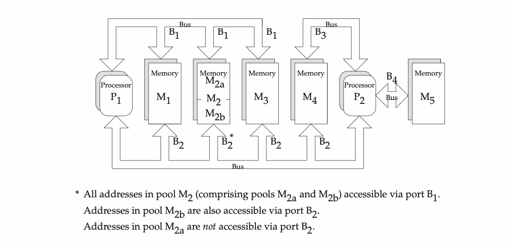

The change history is provided as an informative section, to track changes from earlier versions of this standard.
The following sections describe changes made to the System Interfaces volume of POSIX.1-2024 since Issue 7 of the base document. The CHANGE HISTORY section for each entry details the technical changes that have been made in Issue 5 and later. Changes made before Issue 5 are not included.
The following list summarizes the major changes that were made in the System Interfaces volume of POSIX.1-2024 from Issue 7 to Issue 8:
The Open Group Standard, 2021, Additional APIs for the Base Specifications Issue 8, Part 1 is incorporated.
The Open Group Standard, 2022, Additional APIs for the Base Specifications Issue 8, Part 2 is incorporated.
IEEE Std 1003.26-2003 is incorporated.
Existing functionality is aligned with the ISO/IEC 9899:2018 standard.
New functionality from the ISO/IEC 9899:2018 standard is incorporated.
Austin Group defect reports and IEEE Interpretations against IEEE Std 1003.1 are applied.
The Open Group corrigenda and resolutions are applied.
Features, marked obsolescent in the base document, have been considered for removal in this version.
The Device Control option is added.
The IEC 60559 Complex Floating-Point option is added.
The functions first introduced in Issue 8 (over the Issue 7 base document) are as follows:
The following new headers are introduced in Issue 8:
|
New Headers in Issue 8 |
||
|---|---|---|
The base functions moved to obsolescent status in Issue 8 (from the Issue 7 base document) are as follows:
|
Obsolescent Base Functions in Issue 8 |
|
|---|---|
The XSI functions moved to obsolescent status in Issue 8 (from the Issue 7 base document) are as follows:
|
Obsolescent XSI Functions in Issue 8 |
|
|---|---|
The functions removed in Issue 8 (from the Issue 7 base document) are as follows:
|
Removed Functions in Issue 8 |
|
|---|---|
|
|
|
There is no additional rationale provided for this section.
Each system interface reference page has a common layout of sections describing the interface. This layout is similar to the manual page or "man" page format shipped with most UNIX systems, and each header has sections describing the SYNOPSIS, DESCRIPTION, RETURN VALUE, and ERRORS. These are the four sections that relate to conformance.
Additional sections are informative, and add considerable information for the application developer. EXAMPLES sections provide example usage. APPLICATION USAGE sections provide additional caveats, issues, and recommendations to the developer. RATIONALE sections give additional information on the decisions made in defining the interface.
FUTURE DIRECTIONS sections act as pointers to related work that may impact the interface in the future, and often cautions the developer to architect the code to account for a change in this area. Note that a future directions statement should not be taken as a commitment to adopt a feature or interface in the future.
The CHANGE HISTORY section describes when the interface was introduced, and how it has changed.
Option labels and margin markings in the page can be useful in guiding the application developer.
The information concerning the use of functions was adapted from a description in the ISO C standard. Here is an example of how an application program can protect itself from functions that may or may not be macros, rather than true functions:
The atoi() function may be used in any of several ways:
#include <stdlib.h> /* ... */ i = atoi(str);
#include <stdlib.h> #undef atoi /* ... */ i = atoi(str);
or:
#include <stdlib.h> /* ... */ i = (atoi) (str);
extern int atoi (const char *); /* ... */ i = atoi(str);
/* ... */ i = atoi(str);
(Assuming no function prototype is in scope. This is not allowed by the ISO C standard for functions with variable arguments; furthermore, parameter type conversion "widening" is subject to different rules in this case.)
Note that the ISO C standard reserves names starting with '_' for the compiler. Therefore, the compiler could, for example, implement an intrinsic, built-in function _asm_builtin_atoi(), which it recognized and expanded into inline assembly code. Then, in <stdlib.h>, there could be the following:
#define atoi(X) _asm_builtin_atoi(X)
The user's "normal" call to atoi() would then be expanded inline, but the implementor would also be required to provide a callable function named atoi() for use when the application requires it; for example, if its address is to be stored in a function pointer variable.
Implementors should note that since applications can #undef a macro in order to ensure that the function is used, this means that it is not safe for implementations to use the names of any standard functions in macro values, since the application could use #undef to ensure that no macro exists and then use the same name for an identifier with local scope. For example, historically it was common for a getchar() macro to be defined in <stdio.h> as:
#define getchar() getc(stdin)
This definition does not conform, because an application is allowed to use the identifier getc with local scope, and the expansion of the getchar() macro would then pick up the local getc. The following is conforming code, but would not compile with the above definition of getchar():
#include <stdio.h> #undef getc
int main(void) { int getc;
getc = getchar();
return getc; }
This does not only affect function-like macros. For example, the following definition does not conform because there could be a local sysconf variable in scope when SIGRTMIN is expanded:
#define SIGRTMIN ((int)sysconf(_SC_SIGRT_MIN))
Implementors can avoid the problem by using aliases for standard functions instead of the actual function, with names that conforming applications cannot use for local variables. For example:
#define SIGRTMIN ((int)__sysconf(_SC_SIGRT_MIN))
Austin Group Defect 655 is applied, making the requirement relating to explicit function declarations apply only to functions from the ISO C standard.
Austin Group Defect 1302 is applied, aligning this section with the ISO/IEC 9899:2018 standard.
Austin Group Defect 1404 is applied, adding to the examples of invalid values for function arguments.
There is no additional rationale provided for this section.
This and the following section address the issue of "name space pollution". The ISO C standard requires that the name space beyond what it reserves not be altered except by explicit action of the application developer. This section defines the actions to add the POSIX.1 symbols for those headers where both the ISO C standard and POSIX.1 need to define symbols, and also where the XSI option extends the base standard.
When headers are used to provide symbols, there is a potential for introducing symbols that the application
developer cannot predict. Ideally, each header should only contain one set of symbols, but this is not practical for historical
reasons. Thus, the concept of feature test macros is included. Two feature test macros are explicitly defined by POSIX.1-2024; it
is expected that future versions may add to this.
It is further intended that these feature test macros apply only to the headers specified by POSIX.1-2024. Implementations are expressly permitted to make visible symbols not specified by POSIX.1-2024, within both POSIX.1 and other headers, under the control of feature test macros that are not defined by POSIX.1-2024.
The POSIX.1-1990 standard specified a macro called _POSIX_SOURCE. This has been superseded by _POSIX_C_SOURCE. This symbol will allow implementations to support various versions of this standard simultaneously. For instance, when _POSIX_C_SOURCE is defined as 202405L, the system should make visible the same name space as permitted and required by the POSIX.1-2024 standard. A special case is the one where the implementation wishes to make available support for the 1990 version of the POSIX standard, in which instance when either _POSIX_SOURCE is defined or _POSIX_C_SOURCE is defined as 1, the system should make visible the same name space as permitted and required by the POSIX.1-1990 standard.
It is expected that C bindings to future POSIX standards will define new values for _POSIX_C_SOURCE, with each new value reserving the name space for that new standard.
The feature test macro _XOPEN_SOURCE is provided as the announcement mechanism for the application that it requires functionality from the Single UNIX Specification. _XOPEN_SOURCE must be defined to the value 800 before the inclusion of any header to enable the functionality in the Single UNIX Specification Version 5. Its definition subsumes the use of _POSIX_C_SOURCE.
An extract of code from a conforming application, that appears before any #include statements, is given below:
#define _XOPEN_SOURCE 800 /* Single UNIX Specification, Version 5 */
#include ...
Note that the definition of _XOPEN_SOURCE with the value 800 makes the definition of _POSIX_C_SOURCE redundant and it can safely be omitted.
The ISO C standard specifies the feature test macro __STDC_WANT_LIB_EXT1__ as the announcement mechanism for the application that it requires functionality from Annex K. It specifies that the symbols specified in Annex K (if supported) are made visible when __STDC_WANT_LIB_EXT1__ is 1 and are not made visible when it is 0, but leaves it unspecified whether they are made visible when __STDC_WANT_LIB_EXT1__ is undefined. POSIX.1 requires that they are not made visible when the macro is undefined (except for those symbols that are already explicitly allowed to be visible through the definition of _POSIX_C_SOURCE or _XOPEN_SOURCE, or both).
POSIX.1 does not include the interfaces specified in Annex K of the ISO C standard, but allows the symbols to be made visible in headers when requested by the application in order that applications can use symbols from Annex K and symbols from POSIX.1 in the same translation unit.
Austin Group Defect 1302 is applied, adding this subsection.
The reservation of identifiers is paraphrased from the ISO C standard. The text is included because it needs to be part of POSIX.1-2024, regardless of possible changes in future versions of the ISO C standard.
These identifiers may be used by implementations, particularly for feature test macros. Implementations should not use feature test macro names that might be reasonably used by a standard.
Including headers more than once is a reasonably common practice, and it should be carried forward from the ISO C standard. More significantly, having definitions in more than one header is explicitly permitted. Where the potential declaration is "benign" (the same definition twice) the declaration can be repeated, if that is permitted by the compiler. (This is usually true of macros, for example.) In those situations where a repetition is not benign (for example, typedefs), conditional compilation must be used. The situation actually occurs both within the ISO C standard and within POSIX.1: time_t should be in <sys/types.h>, and the ISO C standard mandates that it be in <time.h>.
The area of name space pollution versus additions to structures is difficult because of the macro structure of C. The following discussion summarizes all the various problems with and objections to the issue.
Note the phrase "user-defined macro". Users are not permitted to define macro names (or any other name) beginning with "_[A-Z_]". Thus, the conflict cannot occur for symbols reserved to the vendor's name space, and the permission to add fields automatically applies, without qualification, to those symbols.
The dirent structure is an example of such a minimal structure (although one could argue about whether the other fields need visible names). The st_rdev field of most implementations' stat structure is a common example where extension is needed and where a conflict could occur.
struct foo {
int __i;
}
#ifdef _FEATURE_TEST
#define i __i;
#endif
In file a.c:
#include h.h extern int i; ...
In file b.c:
extern int i; ...
The symbol that the user thinks of as i in both files has an external name of __i in a.c; the same symbol i in b.c has an external name i (ignoring any hidden manipulations the compiler might perform on the names). This would cause a mysterious name resolution problem when a.o and b.o are linked.
Simply avoiding definition then causes alignment problems in the structure.
A structure of the form:
struct foo {
union {
int __i;
#ifdef _FEATURE_TEST
int i;
#endif
} __ii;
}
does not work because the name of the logical field i is __ii.i, and introduction of a macro to
restore the logical name immediately reintroduces the problem discussed previously (although its manifestation might be more
immediate because a syntax error would result if a recursive macro did not cause it to fail first).
struct foo {
#ifdef _FEATURE_TEST
int i;
#else
int __i;
#endif
}
However, if a macro (particularly one required by a standard) is to be defined that uses this field, two must be defined: one that uses i, the other that uses __i. If more than one additional field is used in a macro and they are conditional on distinct combinations of features, the complexity goes up as 2n.
All this leaves a difficult situation: vendors must provide very complex headers to deal with what is conceptually simple and safe—adding a field to a structure. It is the possibility of user-provided macros with the same name that makes this difficult.
Several alternatives were proposed that involved constraining the user's access to part of the name space available to the user (as specified by the ISO C standard). In some cases, this was only until all the headers had been included. There were two proposals discussed that failed to achieve consensus:
It was finally decided that reservation of symbols would occur, but as constrained.
The current wording also allows the addition of fields to a structure, but requires that user macros of the same name not interfere. This allows vendors to do one of the following:
There are at least two ways that the compiler might be extended: add new preprocessor directives that turn off and on macro expansion for certain symbols (without changing the value of the macro) and a function or lexical operation that suppresses expansion of a word. The latter seems more flexible, particularly because it addresses the problem in macros as well as in declarations.
The following seems to be a possible implementation extension to the C language that will do this: any token that during macro expansion is found to be preceded by three '#' symbols shall not be further expanded in exactly the same way as described for macros that expand to their own name as in Section 6.10.3.4 of the ISO C standard. A vendor may also wish to implement this as an operation that is lexically a function, which might be implemented as:
#define __safe_name(x) ###x
Using a function notation would insulate vendors from changes in standards until such a functionality is standardized (if ever). Standardization of such a function would be valuable because it would then permit third parties to take advantage of it portably in software they may supply.
The symbols that are "explicitly permitted, but not required by POSIX.1-2024" include those classified below. (That is, the symbols classified below might, but are not required to, be present when _POSIX_C_SOURCE is defined to have the value 202405L.)
Since both implementations and future versions of this standard and other POSIX standards may use symbols in the reserved spaces described in these tables, there is a potential for name space clashes. To avoid future name space clashes when adding symbols, implementations should not use the posix_, POSIX_, or _POSIX_ prefixes.
IEEE Std 1003.1-2001/Cor 1-2002, item XSH/TC1/D6/2 is applied, deleting the entries POSIX_, _POSIX_, and posix_ from the column of allowed name space prefixes for use by an implementation in the first table. The presence of these prefixes was contradicting later text which states that: "The prefixes posix_, POSIX_, and _POSIX are reserved for use by XCU 2. Shell Command Language and other POSIX standards. Implementations may add symbols to the headers shown in the following table, provided the identifiers ... do not use the reserved prefixes posix_, POSIX_, or _POSIX.".
IEEE Std 1003.1-2001/Cor 1-2002, item XSH/TC1/D6/3 is applied, correcting the reserved macro prefix from: "PRI[a-z], SCN[a-z]" to: "PRI[Xa-z], SCN[Xa-z]" in the second table. The change was needed since the ISO C standard allows implementations to define macros of the form PRI or SCN followed by any lowercase letter or 'X' in <inttypes.h>. (The ISO/IEC 9899:1999 standard, Subclause 7.26.4.)
IEEE Std 1003.1-2001/Cor 1-2002, item XSH/TC1/D6/4 is applied, adding a new section listing reserved names for the <stdint.h> header. This change is for alignment with the ISO C standard.
IEEE Std 1003.1-2001/Cor 2-2004, item XSH/TC2/D6/2 is applied, making it clear that implementations are permitted to have symbols with the prefix _POSIX_ visible in any header.
IEEE Std 1003.1-2001/Cor 2-2004, item XSH/TC2/D6/3 is applied, updating the table of allowed macro prefixes to include the prefix FP_[A-Z] for <math.h>. This text is added for consistency with the <math.h> reference page in the Base Definitions volume of POSIX.1-2024 which permits additional implementation-defined floating-point classifications.
Austin Group Interpretation 1003.1-2001 #048 is applied, reserving SEEK_ in the name space.
POSIX.1-2008, Technical Corrigendum 2, XSH/TC2-2008/0001 [801], XSH/TC2-2008/0002 [780], XSH/TC2-2008/0003 [790], XSH/TC2-2008/0004 [780], XSH/TC2-2008/0005 [790], XSH/TC2-2008/0006 [782], XSH/TC2-2008/0007 [790], and XSH/TC2-2008/0008 [790] are applied.
Austin Group Defect 162 is applied, adding the <endian.h> header.
Austin Group Defect 697 is applied, reserving DT_ in the name space.
Austin Group Defect 845 is applied, reserving in6addr_ in the name space.
Austin Group Defect 993 is applied, reserving dli_ in the name space.
Austin Group Defect 1003 is applied, correcting a mismatch with the ISO C standard regarding reservation of each identifier with file scope described in the header section.
Austin Group Defect 1122 is applied, adding <libintl.h>.
Austin Group Defect 1151 is applied, adding ws_ as a reserved prefix for <termios.h>.
Austin Group Defect 1302 is applied, aligning this section with the ISO/IEC 9899:2018 standard.
Austin Group Defect 1456 is applied, clarifying the reservation of symbolic constants with the prefix _CS_, _PC_, and _SC_ for <unistd.h>.
It was the consensus of the standard developers that to allow the conformance document to state that an error occurs and under what conditions, but to disallow a statement that it never occurs, does not make sense. It could be implied by the current wording that this is allowed, but to reduce the possibility of future interpretation requests, it is better to make an explicit statement.
The original ISO C standard just required that errno be a modifiable lvalue. Since the introduction of threads in 2011, the ISO C standard has instead required that errno be a macro which expands to a modifiable lvalue that has thread local storage duration.
Checking the value of errno alone is not sufficient to determine the existence or type of an error, since it is not required that a successful function call clear errno. The variable errno should only be examined when the return value of a function indicates that the value of errno is meaningful. In that case, the function is required to set the variable to something other than zero.
The variable errno is never set to zero by any function call; to do so would contradict the ISO C standard.
POSIX.1 requires (in the ERRORS sections of function descriptions) certain error values to be set in certain conditions because many existing applications depend on them. Some error numbers, such as [EFAULT], are entirely implementation-defined and are noted as such in their description in the ERRORS section. This section otherwise allows wide latitude to the implementation in handling error reporting.
Some of the ERRORS sections in POSIX.1-2024 have two subsections. The first:
"The function shall fail if:"
could be called the "mandatory" section.
The second:
"The function may fail if:"
could be informally known as the "optional" section.
Attempting to infer the quality of an implementation based on whether it detects optional error conditions is not useful.
Following each one-word symbolic name for an error, there is a description of the error. The rationale for some of the symbolic names follows:
Implementations are allowed, but not required, to treat a pathname longer than {PATH_MAX} passed into the system as an error. Implementations are required to return a pathname (even if it is longer than {PATH_MAX}) when the user supplies a buffer with an interface that specifies the buffer size, as long as the user-supplied buffer is large enough to hold the entire pathname (see XSH getcwd() for an example of this type of interface). Implementations are required to treat a request to pass a pathname longer than {PATH_MAX} from the system to a user-supplied buffer of an unspecified size (usually assumed to be of size {PATH_MAX}) as an error (see XSH realpath() for an example of this type of interface).
In addition, when different programming environments have different widths for types such as int and uid_t, several functions may encounter a condition where a value in a particular environment is too wide to be represented. In that case, this error should be raised. For example, suppose the currently running process has 64-bit int, and file descriptor 9223372036854775807 is open and does not have the close-on-exec flag set. If the process then uses execl() to exec a file compiled in a programming environment with 32-bit int, the call to execl() can fail with errno set to [EOVERFLOW]. A similar failure can occur with execl() if any of the user IDs or any of the group IDs to be assigned to the new process image are out of range for the executed file's programming environment.
Note, however, that this condition cannot occur for functions that are explicitly described as always being successful, such as getpid().
Three error numbers, [EDOM], [EILSEQ], and [ERANGE], were added to this section primarily for consistency with the ISO C standard.
POSIX.1-2008, Technical Corrigendum 2, XSH/TC2-2008/0009 [496] and XSH/TC2-2008/0010 [681] are applied.
Austin Group Defect 1067 is applied, adding [ESOCKTNOSUPPORT].
Austin Group Defect 1380 is applied, changing the descriptions of [EMLINK] and [EXDEV].
Austin Group Defect 1669 is applied, changing the description of [EFBIG].
The historical implementation of errno as a single global variable does not work in a multi-threaded environment. In such an environment, a thread may make a POSIX.1 call and get a -1 error return, but before that thread can check the value of errno, another thread might have made a second POSIX.1 call that also set errno. This behavior is unacceptable in robust programs. There were a number of alternatives that were considered for handling the errno problem:
The first option offers the highest level of compatibility with existing practice but requires special support in the linker, compiler, and/or virtual memory system to support the new concept of thread private variables. When compared with current practice, the third and fourth options are much cleaner, more efficient, and encourage a more robust programming style, but they require new versions of all of the POSIX.1 functions that might detect an error. The second option offers compatibility with existing code that uses the <errno.h> header to define the symbol errno. In this option, errno may be a macro defined:
#define errno (*__errno()) extern int *__errno();
This option may be implemented as a per-thread variable whereby an errno field is allocated in the user space object representing a thread, and whereby the function __errno() makes a system call to determine the location of its user space object and returns the address of the errno field of that object. Another implementation, one that avoids calling the kernel, involves allocating stacks in chunks. The stack allocator keeps a side table indexed by chunk number containing a pointer to the thread object that uses that chunk. The __errno() function then looks at the stack pointer, determines the chunk number, and uses that as an index into the chunk table to find its thread object and thus its private value of errno. On most architectures, this can be done in four to five instructions. Some compilers may wish to implement __errno() inline to improve performance.
Many blocking interfaces defined by POSIX.1-2024 may return [EINTR] if interrupted during their execution by a signal handler. Blocking interfaces introduced under the threads functionality do not have this property. Instead, they require that the interface appear to be atomic with respect to interruption. In particular, applications calling blocking interfaces need not handle any possible [EINTR] return as a special case since it will never occur. In the case of threads functions in <threads.h>, the requirement is stated in terms of the call not being affected if the calling thread executes a signal handler during the call, since these functions return errors in a different way and cannot distinguish an [EINTR] condition from other error conditions. If it is necessary to restart operations or complete incomplete operations following the execution of a signal handler, this is handled by the implementation, rather than by the application.
Requiring applications to handle [EINTR] errors on blocking interfaces has been shown to be a frequent source of often unreproducible bugs, and it adds no compelling value to the available functionality. Thus, blocking interfaces introduced for use by multi-threaded programs do not use this paradigm. In particular, in none of the functions flockfile(), pthread_cond_timedwait(), pthread_cond_wait(), pthread_join(), pthread_mutex_lock(), and sigwait() did providing [EINTR] returns add value, or even particularly make sense. Thus, these functions do not provide for an [EINTR] return, even when interrupted by a signal handler. The same arguments can be applied to sem_wait(), sem_trywait(), sigwaitinfo(), and sigtimedwait(), but implementations are permitted to return [EINTR] error codes for these functions for compatibility with earlier versions of this standard. Applications cannot rely on calls to these functions returning [EINTR] error codes when signals are delivered to the calling thread, but they should allow for the possibility.
Austin Group Interpretation 1003.1-2001 #050 is applied, allowing [ENOTSUP] and [EOPNOTSUPP] to be the same values.
The ISO C standard defines the name space for implementations to add additional error numbers.
Historical implementations of signals, using the signal() function, have shortcomings that make them unreliable for many application uses. Because of this, a new signal mechanism, based very closely on the one of 4.2 BSD and 4.3 BSD, was added to POSIX.1.
The restriction on the actual type used for sigset_t is intended to guarantee that these objects can always be assigned, have their address taken, and be passed as parameters by value. It is not intended that this type be a structure including pointers to other data structures, as that could impact the portability of applications performing such operations. A reasonable implementation could be a structure containing an array of some integer type.
The signals described in POSIX.1-2024 must have unique values so that they may be named as parameters of case statements in the body of a C-language switch clause. However, implementation-defined signals may have values that overlap with each other or with signals specified in POSIX.1-2024. An example of this is SIGABRT, which traditionally overlaps some other signal, such as SIGIOT.
SIGKILL, SIGTERM, SIGUSR1, and SIGUSR2 are ordinarily generated only through the explicit use of the kill() function, although some implementations generate SIGKILL under extraordinary circumstances. SIGTERM is traditionally the default signal sent by the kill command.
The signals SIGBUS, SIGEMT, SIGIOT, SIGTRAP, and SIGSYS were omitted from POSIX.1 because their behavior is implementation-defined and could not be adequately categorized. Conforming implementations may deliver these signals, but must document the circumstances under which they are delivered and note any restrictions concerning their delivery. The signals SIGFPE, SIGILL, and SIGSEGV are similar in that they also generally result only from programming errors. They were included in POSIX.1 because they do indicate three relatively well-categorized conditions. They are all defined by the ISO C standard and thus would have to be defined by any system with an ISO C standard binding, even if not explicitly included in POSIX.1.
There is very little that a Conforming POSIX.1 Application can do by catching, ignoring, or masking any of the signals SIGILL, SIGTRAP, SIGIOT, SIGEMT, SIGBUS, SIGSEGV, SIGSYS, or SIGFPE. They will generally be generated by the system only in cases of programming errors. While it may be desirable for some robust code (for example, a library routine) to be able to detect and recover from programming errors in other code, these signals are not nearly sufficient for that purpose. One portable use that does exist for these signals is that a command interpreter can recognize them as the cause of termination of a process (with wait()) and print an appropriate message. The mnemonic tags for these signals are derived from their PDP-11 origin.
The signals SIGSTOP, SIGTSTP, SIGTTIN, SIGTTOU, and SIGCONT are provided for job control and are unchanged from 4.2 BSD. The signal SIGCHLD is also typically used by job control shells to detect children that have terminated or, as in 4.2 BSD, stopped.
Some implementations, including System V, have a signal named SIGCLD, which is similar to SIGCHLD in 4.2 BSD. POSIX.1 permits implementations to have a single signal with both names. POSIX.1 carefully specifies ways in which conforming applications can avoid the semantic differences between the two different implementations. The name SIGCHLD was chosen for POSIX.1 because most current application usages of it can remain unchanged in conforming applications. SIGCLD in System V has more cases of semantics that POSIX.1 does not specify, and thus applications using it are more likely to require changes in addition to the name change.
The signals SIGUSR1 and SIGUSR2 are commonly used by applications for notification of exceptional behavior and are described as "reserved as application-defined" so that such use is not prohibited. Implementations should not generate SIGUSR1 or SIGUSR2, except when explicitly requested by kill(). It is recommended that libraries not use these two signals, as such use in libraries could interfere with their use by applications calling the libraries. If such use is unavoidable, it should be documented. It is prudent for non-portable libraries to use non-standard signals to avoid conflicts with use of standard signals by portable libraries.
There is no portable way for an application to catch or ignore non-standard signals. Some implementations define the range of signal numbers, so applications can install signal-catching functions for all of them. Unfortunately, implementation-defined signals often cause problems when caught or ignored by applications that do not understand the reason for the signal. While the desire exists for an application to be more robust by handling all possible signals (even those only generated by kill()), no existing mechanism was found to be sufficiently portable to include in POSIX.1. The value of such a mechanism, if included, would be diminished given that SIGKILL would still not be catchable.
A number of new signal numbers are reserved for applications because the two user signals defined by POSIX.1 are insufficient for many realtime applications. A range of signal numbers is specified, rather than an enumeration of additional reserved signal names, because different applications and application profiles will require a different number of application signals. It is not desirable to burden all application domains and therefore all implementations with the maximum number of signals required by all possible applications. Note that in this context, signal numbers are essentially different signal priorities.
The relatively small number of required additional signals, {_POSIX_RTSIG_MAX}, was chosen so as not to require an unreasonably large signal mask/set. While this number of signals defined in POSIX.1 will fit in a single 32-bit word signal mask, it is recognized that most existing implementations define many more signals than are specified in POSIX.1 and, in fact, many implementations have already exceeded 32 signals (including the "null signal"). Support of {_POSIX_RTSIG_MAX} additional signals may push some implementation over the single 32-bit word line, but is unlikely to push any implementations that are already over that line beyond the 64-signal line.
The terms defined in this section are not used consistently in documentation of historical systems. Each signal can be considered to have a lifetime beginning with generation and ending with delivery or acceptance. The POSIX.1 definition of "delivery" does not exclude ignored signals; this is considered a more consistent definition. This revised text in several parts of POSIX.1-2024 clarifies the distinct semantics of asynchronous signal delivery and synchronous signal acceptance. The previous wording attempted to categorize both under the term "delivery", which led to conflicts over whether the effects of asynchronous signal delivery applied to synchronous signal acceptance.
Signals generated for a process are delivered to only one thread. Thus, if more than one thread is eligible to receive a signal, one has to be chosen. The choice of threads is left entirely up to the implementation both to allow the widest possible range of conforming implementations and to give implementations the freedom to deliver the signal to the "easiest possible" thread should there be differences in ease of delivery between different threads.
Note that should multiple delivery among cooperating threads be required by an application, this can be trivially constructed out of the provided single-delivery semantics. The construction of a sigwait_multiple() function that accomplishes this goal is presented with the rationale for sigwaitinfo().
Implementations should deliver unblocked signals as soon after they are generated as possible. However, it is difficult for POSIX.1 to make specific requirements about this, beyond those in kill() and sigprocmask(). Even on systems with prompt delivery, scheduling of higher priority processes is always likely to cause delays.
In general, the interval between the generation and delivery of unblocked signals cannot be detected by an application. Thus, references to pending signals generally apply to blocked, pending signals. An implementation registers a signal as pending on the process when no thread has the signal unblocked and there are no threads blocked in a sigwait() function for that signal. Thereafter, the implementation delivers the signal to the first thread that unblocks the signal or calls a sigwait() function on a signal set containing this signal rather than choosing the recipient thread at the time the signal is sent.
In the 4.3 BSD system, signals that are blocked and set to SIG_IGN are discarded immediately upon generation. For a signal that is ignored as its default action, if the action is SIG_DFL and the signal is blocked, a generated signal remains pending. In the 4.1 BSD system and in System V Release 3 (two other implementations that support a somewhat similar signal mechanism), all ignored blocked signals remain pending if generated. Because it is not normally useful for an application to simultaneously ignore and block the same signal, it was unnecessary for POSIX.1 to specify behavior that would invalidate any of the historical implementations.
There is one case in some historical implementations where an unblocked, pending signal does not remain pending until it is delivered. In the System V implementation of signal(), pending signals are discarded when the action is set to SIG_DFL or a signal-catching routine (as well as to SIG_IGN). Except in the case of setting SIGCHLD to SIG_DFL, implementations that do this do not conform completely to POSIX.1. Some earlier proposals for POSIX.1 explicitly stated this, but these statements were redundant due to the requirement that functions defined by POSIX.1 not change attributes of processes defined by POSIX.1 except as explicitly stated.
POSIX.1 specifically states that the order in which multiple, simultaneously pending signals are delivered is unspecified. This order has not been explicitly specified in historical implementations, but has remained quite consistent and been known to those familiar with the implementations. Thus, there have been cases where applications (usually system utilities) have been written with explicit or implicit dependencies on this order. Implementors and others porting existing applications may need to be aware of such dependencies.
When there are multiple pending signals that are not blocked, implementations should arrange for the delivery of all signals at once, if possible. Some implementations stack calls to all pending signal-catching routines, making it appear that each signal-catcher was interrupted by the next signal. In this case, the implementation should ensure that this stacking of signals does not violate the semantics of the signal masks established by sigaction(). Other implementations process at most one signal when the operating system is entered, with remaining signals saved for later delivery. Although this practice is widespread, this behavior is neither standardized nor endorsed. In either case, implementations should attempt to deliver signals associated with the current state of the process (for example, SIGFPE) before other signals, if possible.
In 4.2 BSD and 4.3 BSD, it is not permissible to ignore or explicitly block SIGCONT, because if blocking or ignoring this signal prevented it from continuing a stopped process, such a process could never be continued (only killed by SIGKILL). However, 4.2 BSD and 4.3 BSD do block SIGCONT during execution of its signal-catching function when it is caught, creating exactly this problem. A proposal was considered to disallow catching SIGCONT in addition to ignoring and blocking it, but this limitation led to objections. The consensus was to require that SIGCONT always continue a stopped process when generated. This removed the need to disallow ignoring or explicit blocking of the signal; note that SIG_IGN and SIG_DFL are equivalent for SIGCONT.
The realtime signals functionality is required in this version of the standard for the following reasons:
The primary difficulty with previous notification approaches has been to specify the environment of the notification routine.
Implementations may support additional notification mechanisms by defining new values for sigev_notify.
For a notification type of SIGEV_SIGNAL, the other members of the sigevent structure defined by POSIX.1-2024 specify the realtime signal—that is, the signal number and application-defined value that differentiates between occurrences of signals with the same number—that will be generated when the event occurs. The structure is defined in <signal.h>, even though the structure is not directly used by any of the signal functions, because it is part of the signals interface used by the POSIX.1b "client functions". When the client functions include <signal.h> to define the signal names, the sigevent structure will also be defined.
An application-defined value passed to the signal handler is used to differentiate between different "events" instead of requiring that the application use different signal numbers for several reasons:
A union is defined for the application-defined value so that either an integer constant or a pointer can be portably passed to the signal-catching function. On some architectures a pointer cannot be cast to an int and vice versa.
Use of a structure here with an explicit notification type discriminant rather than explicit parameters to realtime functions, or embedded in other realtime structures, provides for future extensions to POSIX.1-2024. Additional, perhaps more efficient, notification mechanisms can be supported for existing realtime function interfaces, such as timers and asynchronous I/O, by extending the sigevent structure appropriately. The existing realtime function interfaces will not have to be modified to use any such new notification mechanism. The revised text concerning the SIGEV_SIGNAL value makes consistent the semantics of the members of the sigevent structure, particularly in the definitions of lio_listio() and aio_fsync(). For uniformity, other revisions cause this specification to be referred to rather than inaccurately duplicated in the descriptions of functions and structures using the sigevent structure. The revised wording does not relax the requirement that the signal number be in the range SIGRTMIN to SIGRTMAX to guarantee queuing and passing of the application value, since that requirement is still implied by the signal names.
The third argument to the signal-catching function, context, is left undefined by POSIX.1-2024, but is specified in the interface because it matches existing practice for the SA_SIGINFO flag. It was considered undesirable to require a separate implementation for SA_SIGINFO for POSIX conformance on implementations that already support the two additional parameters.
For realtime applications that want to use only the newly defined realtime signal numbers without interference from the standard signals, this can be achieved by blocking all of the standard signals in the thread signal mask and in the sa_mask installed by the signal action for the realtime signal handlers.
POSIX.1-2024 explicitly leaves unspecified the ordering of signals outside of the range of realtime signals and the ordering of signals within this range with respect to those outside the range. It was believed that this would unduly constrain implementations or standards in the future definition of new signals.
Austin Group Defect 633 is applied, reducing to two the allowed behaviors for the signal mask of the thread that is created to handle a SIGEV_THREAD notification.
Austin Group Defect 1116 is applied, removing a reference to the Realtime Signals Extension option that existed in earlier versions of this standard.
Early proposals mentioned SIGCONT as a second exception to the rule that signals are not delivered to stopped processes until continued. Because POSIX.1-2024 now specifies that SIGCONT causes the stopped process to continue when it is generated, delivery of SIGCONT is not prevented because a process is stopped, even without an explicit exception to this rule.
Ignoring a signal by setting the action to SIG_IGN (or SIG_DFL for signals whose default action is to ignore) is not the same as installing a signal-catching function that simply returns. Invoking such a function will interrupt certain system functions that block processes (for example, wait(), sigsuspend(), pause(), read(), write()) while ignoring a signal has no such effect on the process.
Historical implementations discard pending signals when the action is set to SIG_IGN. However, they do not always do the same when the action is set to SIG_DFL and the default action is to ignore the signal. POSIX.1-2024 requires this for the sake of consistency and also for completeness, since the only signal this applies to is SIGCHLD, and POSIX.1-2024 disallows setting its action to SIG_IGN.
Some implementations (System V, for example) assign different semantics for SIGCLD depending on whether the action is set to SIG_IGN or SIG_DFL. Since POSIX.1 requires that the default action for SIGCHLD be to ignore the signal, applications should always set the action to SIG_DFL in order to avoid SIGCHLD.
Whether or not an implementation allows SIG_IGN as a SIGCHLD disposition to be inherited across a call to one of the exec family of functions or posix_spawn() is explicitly left as unspecified. This change was made as a result of IEEE PASC Interpretation 1003.1 #132, and permits the implementation to decide between the following alternatives:
Some implementations (System V, for example) will deliver a SIGCLD signal immediately when a process establishes a signal-catching function for SIGCLD when that process has a child that has already terminated. Other implementations, such as 4.3 BSD, do not generate a new SIGCHLD signal in this way. In general, a process should not attempt to alter the signal action for the SIGCHLD signal while it has any outstanding children. However, it is not always possible for a process to avoid this; for example, shells sometimes start up processes in pipelines with other processes from the pipeline as children. Processes that cannot ensure that they have no children when altering the signal action for SIGCHLD thus need to be prepared for, but not depend on, generation of an immediate SIGCHLD signal.
The default action of the stop signals (SIGSTOP, SIGTSTP, SIGTTIN, SIGTTOU) is to stop a process that is executing. If a stop signal is delivered to a process that is already stopped, it has no effect. In fact, if a stop signal is generated for a stopped process whose signal mask blocks the signal, the signal will never be delivered to the process since the process must receive a SIGCONT, which discards all pending stop signals, in order to continue executing.
The SIGCONT signal continues a stopped process even if SIGCONT is blocked (or ignored). However, if a signal-catching routine has been established for SIGCONT, it will not be entered until SIGCONT is unblocked.
If a process in an orphaned process group stops, it is no longer under the control of a job control shell and hence would not normally ever be continued. Because of this, orphaned processes that receive terminal-related stop signals (SIGTSTP, SIGTTIN, SIGTTOU, but not SIGSTOP) must not be allowed to stop. The goal is to prevent stopped processes from languishing forever. (As SIGSTOP is sent only via kill(), it is assumed that the process or user sending a SIGSTOP can send a SIGCONT when desired.) Instead, the system must discard the stop signal. As an extension, it may also deliver another signal in its place. 4.3 BSD sends a SIGKILL, which is overly effective because SIGKILL is not catchable. Another possible choice is SIGHUP. 4.3 BSD also does this for orphaned processes (processes whose parent has terminated) rather than for members of orphaned process groups; this is less desirable because job control shells manage process groups. POSIX.1 also prevents SIGTTIN and SIGTTOU signals from being generated for processes in orphaned process groups as a direct result of activity on a terminal, preventing infinite loops when read() and write() calls generate signals that are discarded; see A.11.1.4 Terminal Access Control. A similar restriction on the generation of SIGTSTP was considered, but that would be unnecessary and more difficult to implement due to its asynchronous nature.
Although POSIX.1 requires that signal-catching functions be called with only one argument, there is nothing to prevent conforming implementations from extending POSIX.1 to pass additional arguments, as long as Strictly Conforming POSIX.1 Applications continue to compile and execute correctly. Most historical implementations do, in fact, pass additional, signal-specific arguments to certain signal-catching routines.
There was a proposal to change the declared type of the signal handler to:
void func (int sig, ...);
The usage of ellipses ("...") is ISO C standard syntax to indicate a variable number of arguments. Its use was intended to allow the implementation to pass additional information to the signal handler in a standard manner.
Unfortunately, this construct would require all signal handlers to be defined with this syntax because the ISO C standard allows implementations to use a different parameter passing mechanism for variable parameter lists than for non-variable parameter lists. Thus, all existing signal handlers in all existing applications would have to be changed to use the variable syntax in order to be standard and portable. This is in conflict with the goal of Minimal Changes to Existing Application Code.
When terminating a process from a signal-catching function, processes should be aware of any interpretation that their parent may make of the status returned by wait(), waitid(), or waitpid(). In particular, a signal-catching function should not call exit(0) or _exit(0) unless it wants to indicate successful termination. A non-zero argument to exit() or _exit() can be used to indicate unsuccessful termination. Alternatively, the process can use kill() to send itself a fatal signal (first ensuring that the signal is set to the default action and not blocked). See also the RATIONALE section of the _exit() function.
The behavior of unsafe functions, as defined by this section, is undefined when they are called from (or after a longjmp() or siglongjmp() out of) signal-catching functions in certain circumstances. The behavior of async-signal-safe functions, as defined by this section, is as specified by POSIX.1, regardless of invocation from a signal-catching function. This is the only intended meaning of the statement that async-signal-safe functions may be used in signal-catching functions without restriction. Applications must still consider all effects of such functions on such things as data structures, files, and process state. In particular, application developers need to consider the restrictions on interactions when interrupting sleep() (see sleep()) and interactions among multiple handles for a file description. The fact that any specific function is listed as async-signal-safe does not necessarily mean that invocation of that function from a signal-catching function is recommended.
In order to prevent errors arising from interrupting non-async-signal-safe function calls, applications should protect calls to these functions either by blocking the appropriate signals or through the use of some programmatic semaphore. POSIX.1 does not address the more general problem of synchronizing access to shared data structures. Note in particular that even the "safe" functions may modify the global variable errno; the signal-catching function may want to save and restore its value. The same principles apply to the async-signal-safety of application routines and asynchronous data access.
Note that although longjmp() and siglongjmp() are in the list of async-signal-safe functions, there are restrictions on subsequent behavior after the function is called from a signal-catching function. This is because the code executing after longjmp() or siglongjmp() can call any unsafe functions with the same danger as calling those unsafe functions directly from the signal handler. Applications that use longjmp() or siglongjmp() out of signal handlers require rigorous protection in order to be portable. Many of the other functions that are excluded from the list are traditionally implemented using either the C language malloc() or free() functions or the ISO C standard I/O library, both of which traditionally use data structures in a non-async-signal-safe manner. Because any combination of different functions using a common data structure can cause async-signal-safety problems, POSIX.1 does not define the behavior when any unsafe function is called in (or after a longjmp() or siglongjmp() out of) a signal handler that interrupts any unsafe function or the non-async-signal-safe processing equivalent to exit() that is performed after return from the initial call to main().
The only realtime extension to signal actions is the addition of the additional parameters to the signal-catching function. This extension has been explained and motivated in the previous section. In making this extension, though, developers of POSIX.1b ran into issues relating to function prototypes. In response to input from the POSIX.1 standard developers, members were added to the sigaction structure to specify function prototypes for the newer signal-catching function specified by POSIX.1b. These members follow changes that are being made to POSIX.1. Note that POSIX.1-2024 explicitly states that these fields may overlap so that a union can be defined. This enabled existing implementations of POSIX.1 to maintain binary-compatibility when these extensions were added.
The siginfo_t structure was adopted for passing the application-defined value to match existing practice, but the existing practice has no provision for an application-defined value, so this was added. Note that POSIX normally reserves the "_t" type designation for opaque types. The siginfo_t structure breaks with this convention to follow existing practice and thus promote portability.
POSIX.1-2024 specifies several values for the si_code member of the siginfo_t structure. Some were introduced in POSIX.1b; others were XSI functionality in the Single UNIX Specification, Version 2 and Version 3, that has now become Base functionality. Historically, an si_code value of less than or equal to zero indicated that the signal was generated by a process via the kill() function, and values of si_code that provided additional information for implementation-generated signals, such as SIGFPE or SIGSEGV, were all positive. This functionality is partially specified for XSI systems in that if si_code is less than or equal to zero, the signal was generated by a process. However, since POSIX.1b did not specify that SI_USER (or SI_QUEUE) had a value less than or equal to zero, it is not true that when the signal is generated by a process, the value of si_code will always be less than or equal to zero. XSI applications should check whether si_code is SI_USER or SI_QUEUE in addition to checking whether it is less than or equal to zero. Applications on systems that do not support the XSI option should just check for SI_USER and SI_QUEUE.
If an implementation chooses to define additional values for si_code, these values have to be different from the values of the non-signal-specific symbols specified by POSIX.1-2024. This will allow conforming applications to differentiate between signals generated by standard events and those generated by other implementation events in a manner compatible with existing practice.
The unique values of si_code for the POSIX.1b asynchronous events have implications for implementations of, for example, asynchronous I/O or message passing in user space library code. Such an implementation will be required to provide a hidden interface to the signal generation mechanism that allows the library to specify the standard values of si_code.
POSIX.1-2024 also specifies additional members of siginfo_t, beyond those that were in POSIX.1b. Like the si_code values mentioned above, these were XSI functionality in the Single UNIX Specification, Version 2 and Version 3, that has now become Base functionality. They provide additional information when si_code has one of the values that moved from XSI to Base.
Although it is not explicitly visible to applications, there are additional semantics for signal actions implied by queued signals and their interaction with other POSIX.1b realtime functions. Specifically:
IEEE Std 1003.1-2001/Cor 1-2002, item XSH/TC1/D6/5 is applied, reordering the RTS shaded text under the third and fourth paragraphs of the SIG_DFL description. This corrects an earlier editorial error in this section.
IEEE Std 1003.1-2001/Cor 1-2002, item XSH/TC1/D6/6 is applied, adding the abort() function to the list of async-signal-safe functions.
IEEE Std 1003.1-2001/Cor 2-2004, item XSH/TC2/D6/4 is applied, adding the sockatmark() function to the list of async-signal-safe functions.
POSIX.1-2008, Technical Corrigendum 2, XSH/TC2-2008/0011 [690], XSH/TC2-2008/0012 [516], XSH/TC2-2008/0013 [692], XSH/TC2-2008/0014 [615], XSH/TC2-2008/0015 [516], and XSH/TC2-2008/0016 [807] are applied.
Austin Group Defect 62 is applied, adding the _Fork() function to, and removing the fork() function from, the list of async-signal-safe functions.
Austin Group Defect 162 is applied, adding functions from the <endian.h> header to the list of async-signal-safe functions.
Austin Group Defect 411 is applied, adding accept4(), dup3(), and pipe2() to the list of async-signal-safe functions.
Austin Group Defect 614 is applied, adding posix_close() to the list of async-signal-safe functions.
Austin Group Defect 699 is applied, adding setegid(), seteuid(), setregid(), and setreuid() to the list of async-signal-safe functions.
Austin Group Defect 711 is applied, adding va_arg(), va_copy(), va_end(), and va_start() to the list of async-signal-safe functions and updating related text to apply to function-like macros.
Austin Group Defect 728 is applied, reducing the set of circumstances in which undefined behavior results when a signal handler refers to an object with static or thread storage duration.
Austin Group Defect 841 is applied, adding pthread_setcancelstate() to the list of async-signal-safe functions and making it implementation-defined which additional interfaces are also async-signal-safe.
Austin Group Defect 986 is applied, adding strlcat(), strlcpy(), wcslcat(), and wcslcpy() to the list of async-signal-safe functions.
Austin Group Defect 1138 is applied, adding the sig2str() function to the list of async-signal-safe functions.
Austin Group Defect 1141 is applied, changing "core file" to "core image".
Austin Group Defects 1142, 1455, and 1625 are applied, adding the pread(), pwrite(), readv(), waitid(), and writev() functions to the list of async-signal-safe functions.
Austin Group Defect 1151 is applied, adding the tcgetwinsize() and tcsetwinsize() functions to the list of async-signal-safe functions.
Austin Group Defect 1215 is applied, removing XSI shading from text relating to abnormal process termination with additional actions.
Austin Group Defect 1263 is applied, adding the ppoll() function to the list of async-signal-safe functions.
Austin Group Defect 1302 is applied, aligning this section with the ISO/IEC 9899:2018 standard.
Austin Group Defect 1667 is applied, adding getresgid(), getresuid(), setresgid(), and setresuid() to the list of async-signal-safe functions.
Austin Group Defect 1744 is applied, adding killpg() to the list of async-signal-safe functions.
The most common behavior of an interrupted function after a signal-catching function returns is for the interrupted function to give an [EINTR] error unless the SA_RESTART flag is in effect for the signal. However, there are a number of specific exceptions, including sleep() and certain situations with read() and write().
The historical implementations of many functions defined by POSIX.1-2024 are not interruptible, but delay delivery of signals generated during their execution until after they complete. This is never a problem for functions that are guaranteed to complete in a short (imperceptible to a human) period of time. It is normally those functions that can suspend a process indefinitely or for long periods of time (for example, wait(), pause(), sigsuspend(), sleep(), or read()/write() on a slow device like a terminal) that are interruptible. This permits applications to respond to interactive signals or to set timeouts on calls to most such functions with alarm(). Therefore, implementations should generally make such functions (including ones defined as extensions) interruptible.
Functions not mentioned explicitly as interruptible may be so on some implementations, possibly as an extension where the function gives an [EINTR] error. There are several functions (for example, getpid(), getuid()) that are specified as never returning an error, which can thus never be extended in this way.
If a signal-catching function returns while the SA_RESTART flag is in effect, an interrupted function is restarted at the point it was interrupted. Conforming applications cannot make assumptions about the internal behavior of interrupted functions, even if the functions are async-signal-safe. For example, suppose the read() function is interrupted with SA_RESTART in effect, the signal-catching function closes the file descriptor being read from and returns, and the read() function is then restarted; in this case the application cannot assume that the read() function will give an [EBADF] error, since read() might have checked the file descriptor for validity before being interrupted.
POSIX.1-2008, Technical Corrigendum 2, XSH/TC2-2008/0017 [807] is applied.
Although the ISO C standard guarantees that, at program start-up, stdin is open for reading and stdout and stderr are open for writing, this guarantee is contingent (as are all guarantees made by the ISO C and POSIX standards) on the program being executed in a conforming environment. Programs executed with file descriptor 0 not open for reading or with file descriptor 1 or 2 not open for writing are executed in a non-conforming environment. Application writers are warned (in exec, posix_spawn(), and C.2.7 Redirection) not to execute a standard utility or a conforming application with file descriptor 0 not open for reading or with file descriptor 1 or 2 not open for writing.
POSIX.1-2008, Technical Corrigendum 2, XSH/TC2-2008/0018 [608] is applied.
Austin Group Defect 689 is applied, clarifying the handling of deadlock situations when locking a stream.
Austin Group Defect 1144 is applied, clarifying the effect of setvbuf() on memory streams.
Austin Group Defect 1153 is applied, clarifying that the behavior is undefined if a memory buffer associated with a standard I/O stream overlaps with the destination buffer of a call that reads from the stream or with the source buffer of a call that writes to the stream.
Austin Group Defect 1302 is applied, aligning this section with the ISO/IEC 9899:2018 standard.
Austin Group Defect 1347 is applied, clarifying the requirements for how stderr, stdin, and stdout are opened at program start-up.
POSIX.1-2008, Technical Corrigendum 2, XSH/TC2-2008/0019 [480] is applied.
Austin Group Defect 1183 is applied, changing "non-full" to "non-null".
Austin Group Defect 1318 is applied, changing the list of functions that close file descriptors.
Austin Group Defect 1040 is applied, clarifying that conversion to or from (possibly multi-byte) characters is not performed by wide character I/O functions when the stream was opened using open_wmemstream().
Functions such as pipe() and socketpair() which allocate two file descriptors are permitted to perform the two allocations independently. This means that other threads or signal handlers may perform operations on file descriptors in between the two allocations and this can result in the two file descriptors not having adjacent values or in the second allocation producing a lower value than the first.
POSIX.1-2008, Technical Corrigendum 2, XSH/TC2-2008/0032 [835] is applied.
There are two forms of IPC supported as options in POSIX.1-2024. The traditional System V IPC routines derived from the SVID—that is, the msg*(), sem*(), and shm*() interfaces—are mandatory on XSI-conformant systems. Thus, all XSI-conformant systems provide the same mechanisms for manipulating messages, shared memory, and semaphores.
In addition, the POSIX Realtime Extension provides an alternate set of routines for those systems supporting the appropriate options.
The application developer is presented with a choice: the System V interfaces or the POSIX interfaces (loosely derived from the Berkeley interfaces). The XSI profile prefers the System V interfaces, but the POSIX interfaces may be more suitable for realtime or other performance-sensitive applications.
General information that is shared by all three mechanisms is described in this section. The common permissions mechanism is briefly introduced, describing the mode bits, and how they are used to determine whether or not a process has access to read or write/alter the appropriate instance of one of the IPC mechanisms. All other relevant information is contained in the reference pages themselves.
The semaphore type of IPC allows processes to communicate through the exchange of semaphore values. A semaphore is a positive integer. Since many applications require the use of more than one semaphore, XSI-conformant systems have the ability to create sets or arrays of semaphores.
Calls to support semaphores include:
semctl(), semget(), semop()
Semaphore sets are created by using the semget() function.
The message type of IPC allows processes to communicate through the exchange of data stored in buffers. This data is transmitted between processes in discrete portions known as messages.
Calls to support message queues include:
msgctl(), msgget(), msgrcv(), msgsnd()
The shared memory type of IPC allows two or more processes to share memory and consequently the data contained therein. This is done by allowing processes to set up access to a common memory address space. This sharing of memory provides a fast means of exchange of data between processes.
Calls to support shared memory include:
shmctl(), shmdt(), shmget()
The ftok() interface is also provided.
Austin Group Defect 377 is applied, changing the table giving the values for the mode member of the ipc_perm structure.
POSIX.1b contains an Informative Annex with proposed interfaces for "realtime files". These interfaces could determine groups of the exact parameters required to do "direct I/O" or "extents". These interfaces were objected to by a significant portion of the balloting group as too complex. A conforming application had little chance of correctly navigating the large parameter space to match its desires to the system. In addition, they only applied to a new type of file (realtime files) and they told the implementation exactly what to do as opposed to advising the implementation on application behavior and letting it optimize for the system the (portable) application was running on. For example, it was not clear how a system that had a disk array should set its parameters.
There seemed to be several overall goals:
The advisory interfaces, posix_fadvise() and posix_madvise(), satisfy the first two goals. The POSIX_FADV_SEQUENTIAL and POSIX_MADV_SEQUENTIAL advice tells the implementation to expect serial access. Typically the system will prefetch the next several serial accesses in order to overlap I/O. It may also free previously accessed serial data if memory is tight. If the application is not doing serial access it can use POSIX_FADV_WILLNEED and POSIX_MADV_WILLNEED to accomplish I/O overlap, as required. When the application advises POSIX_FADV_RANDOM or POSIX_MADV_RANDOM behavior, the implementation usually tries to fetch a minimum amount of data with each request and it does not expect much locality. POSIX_FADV_DONTNEED and POSIX_MADV_DONTNEED allow the system to free up caching resources as the data will not be required in the near future.
POSIX_FADV_NOREUSE tells the system that caching the specified data is not optimal. For file I/O, the transfer should go directly to the user buffer instead of being cached internally by the implementation. To portably perform direct disk I/O on all systems, the application must perform its I/O transfers according to the following rules:
In some cases, a user buffer must be properly aligned in order to be transferred directly to/from the device. The {POSIX_REC_XFER_ALIGN} pathconf() variable tells the application the proper alignment.
The preallocation goal is met by the space control function, posix_fallocate(). The application can use posix_fallocate() to guarantee no [ENOSPC] errors and to improve performance by prepaying any overhead required for block allocation.
Implementations may use information conveyed by a previous posix_fadvise() call to influence the manner in which allocation is performed. For example, if an application did the following calls:
fd = open("file");
posix_fadvise(fd, offset, len, POSIX_FADV_SEQUENTIAL);
posix_fallocate(fd, len, size);
an implementation might allocate the file contiguously on disk.
Finally, the pathconf() variables {POSIX_REC_MIN_XFER_SIZE}, {POSIX_REC_MAX_XFER_SIZE}, and {POSIX_REC_INCR_XFER_SIZE} tell the application a range of transfer sizes that are recommended for best I/O performance.
Where bounded response time is required, the vendor can supply the appropriate settings of the advisories to achieve a guaranteed performance level.
The interfaces meet the goals while allowing applications using regular files to take advantage of performance optimizations. The interfaces tell the implementation expected application behavior which the implementation can use to optimize performance on a particular system with a particular dynamic load.
The posix_memalign() function was added to allow for the allocation of specifically aligned buffers; for example, for {POSIX_REC_XFER_ALIGN}.
The working group also considered the alternative of adding a function which would return an aligned pointer to memory within a user-supplied buffer. This was not considered to be the best method, because it potentially wastes large amounts of memory when buffers need to be aligned on large alignment boundaries.
This section provides the rationale for the definition of the message passing interface in POSIX.1-2024. This is presented in terms of the objectives, models, and requirements imposed upon this interface.
Many applications, including both realtime and database applications, require a means of passing arbitrary amounts of data between cooperating processes comprising the overall application on one or more processors. Many conventional interfaces for interprocess communication are insufficient for realtime applications in that efficient and deterministic data passing methods cannot be implemented. This has prompted the definition of message passing interfaces providing these facilities:
It is assumed that an application may consist of multiple cooperating processes and that these processes may wish to communicate and coordinate their activities. The message passing facility described in POSIX.1-2024 allows processes to communicate through system-wide queues. These message queues are accessed through names that may be pathnames. A message queue can be opened for use by multiple sending and/or multiple receiving processes.
Interprocess communication utilizing message passing is a key facility for the construction of deterministic, high-performance realtime applications. The facility is present in all realtime systems and is the framework upon which the application is constructed. The performance of the facility is usually a direct indication of the performance of the resulting application.
Realtime applications, especially for embedded systems, are typically designed around the performance constraints imposed by the message passing mechanisms. Applications for embedded systems are typically very tightly constrained. Application developers expect to design and control the entire system. In order to minimize system costs, the writer will attempt to use all resources to their utmost and minimize the requirement to add additional memory or processors.
The embedded applications usually share address spaces and only a simple message passing mechanism is required. The
application can readily access common data incurring only mutual-exclusion overheads. The models desired are the simplest possible
with the application building higher-level facilities only when needed.
The following requirements determined the features of the message passing facilities defined in POSIX.1-2024:
The mechanism for gaining access to a message queue is a pathname evaluated in a context that is allowed to be a file system name space, or it can be independent of any file system. This is a specific attempt to allow implementations based on either method in order to address both embedded systems and to also allow implementation in larger systems.
The interface of mq_open() is defined to allow but not require the access control and name conflicts resulting from utilizing a file system for name resolution. All required behavior is specified for the access control case. Yet a conforming implementation, such as an embedded system kernel, may define that there are no distinctions between users and may define that all processes have all access privileges.
Embedded systems need to be able to utilize independent name spaces for accessing the various system objects. They typically do not have a file system, precluding its utilization as a common name resolution mechanism. The modularity of an embedded system limits the connections between separate mechanisms that can be allowed.
Embedded systems typically do not have any access protection. Since the system does not support the mixing of applications from different areas, and usually does not even have the concept of an authorization entity, access control is not useful.
On systems with more functionality, the name resolution must support the ability to use the file system as the name
resolution mechanism/object storage medium and to have control over access to the objects. Utilizing the pathname space can result
in further errors when the names conflict with other objects.
The interfaces impose a fixed upper bound on the size of messages that can be sent to a specific message queue. The size is set on an individual queue basis and cannot be changed dynamically.
The purpose of the fixed size is to increase the ability of the system to optimize the implementation of mq_send() and mq_receive(). With fixed sizes of messages and fixed numbers of messages, specific message blocks can be pre-allocated. This eliminates a significant amount of checking for errors and boundary conditions. Additionally, an implementation can optimize data copying to maximize performance. Finally, with a restricted range of message sizes, an implementation is better able to provide deterministic operations.
Message prioritization allows the application to determine the order in which messages are received. Prioritization of messages is a key facility that is provided by most realtime kernels and is heavily utilized by the applications. The major purpose of having priorities in message queues is to avoid priority inversions in the message system, where a high-priority message is delayed behind one or more lower-priority messages. This allows the applications to be designed so that they do not need to be interrupted in order to change the flow of control when exceptional conditions occur. The prioritization does add additional overhead to the message operations, in those cases it is actually used, but a clever implementation can optimize for the FIFO case to make that more efficient.
The interface supports the ability to have a task asynchronously notified of the availability of a message on the queue. The purpose of this facility is to allow the task to perform other functions and yet still be notified that a message has become available on the queue.
To understand the requirement for this function, it is useful to understand two models of application design: a single task performing multiple functions and multiple tasks performing a single function. Each of these models has advantages.
Asynchronous notification is required to build the model of a single task performing multiple operations. This model typically results from either the expectation that interruption is less expensive than utilizing a separate task or from the growth of the application to include additional functions.
Semaphores are a high-performance process synchronization mechanism. Semaphores are named by null-terminated strings of characters.
A semaphore is created using the sem_init() function or the sem_open() function with the O_CREAT flag set in oflag.
To use a semaphore, a process has to first initialize the semaphore or inherit an open descriptor for the semaphore via fork().
A semaphore preserves its state when the last reference is closed. For example, if a semaphore has a value of 13 when the last reference is closed, it will have a value of 13 when it is next opened.
When a semaphore is created, an initial state for the semaphore has to be provided. This value is a non-negative integer. Negative values are not possible since they indicate the presence of blocked processes. The persistence of any of these objects across a system crash or a system reboot is undefined. Conforming applications must not depend on any sort of persistence across a system reboot or a system crash.
A realtime system requires synchronization and communication between the processes comprising the overall application. An efficient and reliable synchronization mechanism has to be provided in a realtime system that will allow more than one schedulable process mutually-exclusive access to the same resource. This synchronization mechanism has to allow for the optimal implementation of synchronization or systems implementors will define other, more cost-effective methods.
At issue are the methods whereby multiple processes (tasks) can be designed and implemented to work together in order to perform a single function. This requires interprocess communication and synchronization. A semaphore mechanism is the lowest level of synchronization that can be provided by an operating system.
A semaphore is defined as an object that has an integral value and a set of blocked processes associated with it. If the value is positive or zero, then the set of blocked processes is empty; otherwise, the size of the set is equal to the absolute value of the semaphore value. The value of the semaphore can be incremented or decremented by any process with access to the semaphore and must be done as an indivisible operation. When a semaphore value is less than or equal to zero, any process that attempts to lock it again will block or be informed that it is not possible to perform the operation.
A semaphore may be used to guard access to any resource accessible by more than one schedulable task in the system. It is a global entity and not associated with any particular process. As such, a method of obtaining access to the semaphore has to be provided by the operating system. A process that wants access to a critical resource (section) has to wait on the semaphore that guards that resource. When the semaphore is locked on behalf of a process, it knows that it can utilize the resource without interference by any other cooperating process in the system. When the process finishes its operation on the resource, leaving it in a well-defined state, it posts the semaphore, indicating that some other process may now obtain the resource associated with that semaphore.
In this section, mutexes and condition variables are specified as the synchronization mechanisms between threads.
These primitives are typically used for synchronizing threads that share memory in a single process. However, this section provides an option allowing the use of these synchronization interfaces and objects between processes that share memory, regardless of the method for sharing memory.
Much experience with semaphores shows that there are two distinct uses of synchronization: locking, which is typically of short duration; and waiting, which is typically of long or unbounded duration. These distinct usages map directly onto mutexes and condition variables, respectively.
Semaphores are provided in POSIX.1-2024 primarily to provide a means of synchronization for processes; these processes may or may not share memory. Mutexes and condition variables are specified as synchronization mechanisms between threads; these threads always share (some) memory. Both are synchronization paradigms that have been in widespread use for a number of years. Each set of primitives is particularly well matched to certain problems.
With respect to binary semaphores, experience has shown that condition variables and mutexes are easier to use for many synchronization problems than binary semaphores. The primary reason for this is the explicit appearance of a Boolean predicate that specifies when the condition wait is satisfied. This Boolean predicate terminates a loop, including the call to pthread_cond_wait(). As a result, extra wakeups are benign since the predicate governs whether the thread will actually proceed past the condition wait. With stateful primitives, such as binary semaphores, the wakeup in itself typically means that the wait is satisfied. The burden of ensuring correctness for such waits is thus placed on all signalers of the semaphore rather than on an explicitly coded Boolean predicate located at the condition wait. Experience has shown that the latter creates a major improvement in safety and ease-of-use.
Counting semaphores are well matched to dealing with producer/consumer problems, including those that might exist between threads of different processes, or between a signal handler and a thread. In the former case, there may be little or no memory shared by the processes; in the latter case, one is not communicating between co-equal threads, but between a thread and an interrupt-like entity. It is for these reasons that POSIX.1-2024 allows semaphores to be used by threads.
Mutexes and condition variables have been effectively used with and without priority inheritance, priority ceiling, and other attributes to synchronize threads that share memory. The efficiency of their implementation is comparable to or better than that of other synchronization primitives that are sometimes harder to use (for example, binary semaphores). Furthermore, there is at least one known implementation of Ada tasking that uses these primitives. Mutexes and condition variables together constitute an appropriate, sufficient, and complete set of inter-thread synchronization primitives.
Efficient multi-threaded applications require high-performance synchronization primitives. Considerations of
efficiency and generality require a small set of primitives upon which more sophisticated synchronization functions can be
built.
It is possible to implement very high-performance semaphores using test-and-set instructions on shared memory locations. The library routines that implement such a high-performance interface have to properly ensure that a sem_wait() or sem_trywait() operation that cannot be performed will issue a blocking semaphore system call or properly report the condition to the application. The same interface to the application program would be provided by a high-performance implementation.
This portion of the rationale presents models, requirements, and standardization issues relevant to the Realtime Signals Extension. This extension provides the capability required to support reliable, deterministic, asynchronous notification of events. While a new mechanism, unencumbered by the historical usage and semantics of POSIX.1 signals, might allow for a more efficient implementation, the application requirements for event notification can be met with a small number of extensions to signals. Therefore, a minimal set of extensions to signals to support the application requirements is specified.
The realtime signal extensions specified in this section are used by other realtime functions requiring asynchronous notification:
The model supported is one of multiple cooperating processes, each of which handles multiple asynchronous external events. Events represent occurrences that are generated as the result of some activity in the system. Examples of occurrences that can constitute an event include:
Processing of these events may occur synchronously via polling for event notifications or asynchronously via a software interrupt mechanism. Existing practice for this model is well established for traditional proprietary realtime operating systems, realtime executives, and realtime extended POSIX-like systems.
A contrasting model is that of "cooperating sequential processes" where each process handles a single priority of events via polling. Each process blocks while waiting for events, and each process depends on the preemptive, priority-based process scheduling mechanism to arbitrate between events of different priority that need to be processed concurrently. Existing practice for this model is also well established for small realtime executives that typically execute in an unprotected physical address space, but it is just emerging in the context of a fuller function operating system with multiple virtual address spaces.
It could be argued that the cooperating sequential process model, and the facilities supported by the POSIX Threads Extension obviate a software interrupt model. But, even with the cooperating sequential process model, the need has been recognized for a software interrupt model to handle exceptional conditions and process aborting, so the mechanism must be supported in any case. Furthermore, it is not the purview of POSIX.1-2024 to attempt to convince realtime practitioners that their current application models based on software interrupts are "broken" and should be replaced by the cooperating sequential process model. Rather, it is the charter of POSIX.1-2024 to provide standard extensions to mechanisms that support existing realtime practice.
This section discusses the following realtime application requirements for asynchronous event notification:
The events notification mechanism guarantees delivery of an event notification. Asynchronous operations (such as asynchronous I/O and timers) that complete significantly after they are invoked have to guarantee that delivery of the event notification can occur at the time of completion.
The events notification mechanism supports the assigning of a user function as an event notification handler. Furthermore, the mechanism supports the preemption of an event handler function by a higher priority event notification and supports the selection of the highest priority pending event notification when multiple notifications (of different priority) are pending simultaneously.
The model here is based on hardware interrupts. Asynchronous event handling allows the application to ensure that time-critical events are immediately processed when delivered, without the indeterminism of being at a random location within a polling loop. Use of handler priority allows the specification of how handlers are interrupted by other higher priority handlers.
The events notification mechanism passes an application-defined value to the event handler function. This value can be used for a variety of purposes, such as enabling the application to identify which of several possible events of the same type (for example, timer expirations) has occurred.
The events notification mechanism supports blocking and non-blocking polls for asynchronous event notification.
The polled mode of operation is often preferred over the interrupt mode by those practitioners accustomed to this model. Providing support for this model facilitates the porting of applications based on this model to POSIX.1b conforming systems.
The events notification mechanism does not preclude implementations that provide deterministic event dispatch latency and minimizes the number of system calls needed to use the event facilities during realtime processing.
POSIX.1 signals have many of the characteristics necessary to support the asynchronous handling of event notifications, and the Realtime Signals Extension addresses the following deficiencies in the POSIX.1 signal mechanism:
Many applications need to interact with the I/O subsystem in an asynchronous manner. The asynchronous I/O mechanism provides the ability to overlap application processing and I/O operations initiated by the application. The asynchronous I/O mechanism allows a single process to perform I/O simultaneously to a single file multiple times or to multiple files multiple times.
Asynchronous I/O operations proceed in logical parallel with the processing done by the application after the asynchronous I/O has been initiated. Other than this difference, asynchronous I/O behaves similarly to normal I/O using read(), write(), lseek(), and fsync(). The effect of issuing an asynchronous I/O request is as if a separate thread of execution were to perform atomically the implied lseek() operation, if any, and then the requested I/O operation (either read(), write(), or fsync()). There is no seek implied with a call to aio_fsync(). Concurrent asynchronous operations and synchronous operations applied to the same file update the file as if the I/O operations had proceeded serially.
When asynchronous I/O completes, a signal can be delivered to the application to indicate the completion of the I/O. This signal can be used to indicate that buffers and control blocks used for asynchronous I/O can be reused. Signal delivery is not required for an asynchronous operation and may be turned off on a per-operation basis by the application. Signals may also be synchronously polled using aio_suspend(), sigtimedwait(), or sigwaitinfo().
Normal I/O has a return value and an error status associated with it. Asynchronous I/O returns a value and an error status when the operation is first submitted, but that only relates to whether the operation was successfully queued up for servicing. The I/O operation itself also has a return status and an error value. To allow the application to retrieve the return status and the error value, functions are provided that, given the address of an asynchronous I/O control block, yield the return and error status associated with the operation. Until an asynchronous I/O operation is done, its error status is [EINPROGRESS]. Thus, an application can poll for completion of an asynchronous I/O operation by waiting for the error status to become equal to a value other than [EINPROGRESS]. The return status of an asynchronous I/O operation is undefined so long as the error status is equal to [EINPROGRESS].
Storage for asynchronous operation return and error status may be limited. Submission of asynchronous I/O operations may fail if this storage is exceeded. When an application retrieves the return status of a given asynchronous operation, therefore, any system-maintained storage used for this status and the error status may be reclaimed for use by other asynchronous operations.
Asynchronous I/O can be performed on file descriptors that have been enabled for POSIX.1b synchronized I/O. In this case, the I/O operation still occurs asynchronously, as defined herein; however, the asynchronous operation I/O in this case is not completed until the I/O has reached either the state of synchronized I/O data integrity completion or synchronized I/O file integrity completion, depending on the sort of synchronized I/O that is enabled on the file descriptor.
Three models illustrate the use of asynchronous I/O: a journalization model, a data acquisition model, and a model of the use of asynchronous I/O in supercomputing applications.
Many realtime applications perform low-priority journalizing functions. Journalizing requires that logging records be queued for output without blocking the initiating process.
A data acquisition process may also serve as a model. The process has two or more channels delivering intermittent data that must be read within a certain time. The process issues one asynchronous read on each channel. When one of the channels needs data collection, the process reads the data and posts it through an asynchronous write to secondary memory for future processing.
The supercomputing community has used asynchronous I/O much like that specified in POSIX.1 for many years. This community requires the ability to perform multiple I/O operations to multiple devices with a minimal number of entries to "the system"; each entry to "the system" provokes a major delay in operations when compared to the normal progress made by the application. This existing practice motivated the use of combined lseek() and read() or write() calls, as well as the lio_listio() call. Another common practice is to disable signal notification for I/O completion, and simply poll for I/O completion at some interval by which the I/O should be completed. Likewise, interfaces like aio_cancel() have been in successful commercial use for many years. Note also that an underlying implementation of asynchronous I/O will require the ability, at least internally, to cancel outstanding asynchronous I/O, at least when the process exits. (Consider an asynchronous read from a terminal, when the process intends to exit immediately.)
Asynchronous input and output for realtime implementations have these requirements:
The following issues are addressed by the standardization of asynchronous I/O:
Non-blocking I/O does not satisfy the needs of either realtime or high-performance computing models; these models require that a process overlap program execution and I/O processing. Realtime applications will often make use of direct I/O to or from the address space of the process, or require synchronized (unbuffered) I/O; they also require the ability to overlap this I/O with other computation. In addition, asynchronous I/O allows an application to keep a device busy at all times, possibly achieving greater throughput. Supercomputing and database architectures will often have specialized hardware that can provide true asynchrony underlying the logical asynchrony provided by this interface. In addition, asynchronous I/O should be supported by all types of files and devices in the same manner.
If asynchronous I/O is performed on a file that is buffered prior to being actually written to the device, it is possible that asynchronous I/O will offer no performance advantage over normal I/O; the cycles stolen to perform the asynchronous I/O will be taken away from the running process and the I/O will occur at interrupt time. This potential lack of gain in performance in no way obviates the need for asynchronous I/O by realtime applications, which very often will use specialized hardware support, multiple processors, and/or unbuffered, synchronized I/O.
All memory management and shared memory definitions are located in the <sys/mman.h> header. This is for alignment with historical practice.
IEEE Std 1003.1-2001/Cor 1-2002, item XSH/TC1/D6/7 is applied, correcting the shading and margin markers in the introduction to Section 2.8.3.1.
This portion of the rationale presents models, requirements, and standardization issues relevant to process memory locking.
Realtime systems that conform to POSIX.1-2024 are expected (and desired) to be supported on systems with demand-paged virtual memory management, non-paged swapping memory management, and physical memory systems with no memory management hardware. The general case, however, is the demand-paged, virtual memory system with each POSIX process running in a virtual address space. Note that this includes architectures where each process resides in its own virtual address space and architectures where the address space of each process is only a portion of a larger global virtual address space.
The concept of memory locking is introduced to eliminate the indeterminacy introduced by paging and swapping, and to support an upper bound on the time required to access the memory mapped into the address space of a process. Ideally, this upper bound will be the same as the time required for the processor to access "main memory", including any address translation and cache miss overheads. But some implementations—primarily on mainframes—will not actually force locked pages to be loaded and held resident in main memory. Rather, they will handle locked pages so that accesses to these pages will meet the performance metrics for locked process memory in the implementation. Also, although it is not, for example, the intention that this interface, as specified, be used to lock process memory into "cache", it is conceivable that an implementation could support a large static RAM memory and define this as "main memory" and use a large[r] dynamic RAM as "backing store". These interfaces could then be interpreted as supporting the locking of process memory into the static RAM. Support for multiple levels of backing store would require extensions to these interfaces.
Implementations may also use memory locking to guarantee a fixed translation between virtual and physical addresses where such is beneficial to improving determinacy for direct-to/from-process input/output. POSIX.1-2024 does not guarantee to the application that the virtual-to-physical address translations, if such exist, are fixed, because such behavior would not be implementable on all architectures on which implementations of POSIX.1-2024 are expected. But POSIX.1-2024 does mandate that an implementation define, for the benefit of potential users, whether or not locking guarantees fixed translations.
Memory locking is defined with respect to the address space of a process. Only the pages mapped into the address space of a process may be locked by the process, and when the pages are no longer mapped into the address space—for whatever reason—the locks established with respect to that address space are removed. Shared memory areas warrant special mention, as they may be mapped into more than one address space or mapped more than once into the address space of a process; locks may be established on pages within these areas with respect to several of these mappings. In such a case, the lock state of the underlying physical pages is the logical OR of the lock state with respect to each of the mappings. Only when all such locks have been removed are the shared pages considered unlocked.
In recognition of the page granularity of Memory Management Units (MMU), and in order to support locking of ranges of address space, memory locking is defined in terms of "page" granularity. That is, for the interfaces that support an address and size specification for the region to be locked, the address must be on a page boundary, and all pages mapped by the specified range are locked, if valid. This means that the length is implicitly rounded up to a multiple of the page size. The page size is implementation-defined and is available to applications as a compile-time symbolic constant or at runtime via sysconf().
A "real memory" POSIX.1b implementation that has no MMU could elect not to support these interfaces, returning [ENOSYS]. But an application could easily interpret this as meaning that the implementation would unconditionally page or swap the application when such is not the case. It is the intention of POSIX.1-2024 that such a system could define these interfaces as "NO-OPs", returning success without actually performing any function except for mandated argument checking.
For realtime applications, memory locking is generally considered to be required as part of application initialization. This locking is performed after an application has been loaded (that is, exec'd) and the program remains locked for its entire lifetime. But to support applications that undergo major mode changes where, in one mode, locking is required, but in another it is not, the specified interfaces allow repeated locking and unlocking of memory within the lifetime of a process.
When a realtime application locks its address space, it should not be necessary for the application to then "touch" all of the pages in the address space to guarantee that they are resident or else suffer potential paging delays the first time the page is referenced. Thus, POSIX.1-2024 requires that the pages locked by the specified interfaces be resident when the locking functions return successfully.
Many architectures support system-managed stacks that grow automatically when the current extent of the stack is exceeded. A realtime application has a requirement to be able to "preallocate" sufficient stack space and lock it down so that it will not suffer page faults to grow the stack during critical realtime operation. There was no consensus on a portable way to specify how much stack space is needed, so POSIX.1-2024 supports no specific interface for preallocating stack space. But an application can portably lock down a specific amount of stack space by specifying MCL_FUTURE in a call to mlockall() and then calling a dummy function that declares an automatic array of the desired size.
Memory locking for realtime applications is also generally considered to be an "all or nothing" proposition. That is, the entire process, or none, is locked down. But, for applications that have well-defined sections that need to be locked and others that do not, POSIX.1-2024 supports an optional set of interfaces to lock or unlock a range of process addresses. Reasons for locking down a specific range include:
Finally, locking is generally viewed as an "application-wide" function. That is, the application is globally aware of which regions are locked and which are not over time. This is in contrast to a function that is used temporarily within a "third party" library routine whose function is unknown to the application, and therefore must have no "side-effects". The specified interfaces, therefore, do not support "lock stacking" or "lock nesting" within a process. But, for pages that are shared between processes or mapped more than once into a process address space, "lock stacking" is essentially mandated by the requirement that unlocking of pages that are mapped by more that one process or more than once by the same process does not affect locks established on the other mappings.
There was some support for "lock stacking" so that locking could be transparently used in functions or opaque modules. But the consensus was not to burden all implementations with lock stacking (and reference counting), and an implementation option was proposed. There were strong objections to the option because applications would have to support both options in order to remain portable. The consensus was to eliminate lock stacking altogether, primarily through overwhelming support for the System V "m[un]lock[all]" interface on which POSIX.1-2024 is now based.
Locks are not inherited across fork()s because some implementations implement fork() by creating new address spaces for the child. In such an implementation, requiring locks to be inherited would lead to new situations in which a fork would fail due to the inability of the system to lock sufficient memory to lock both the parent and the child. The consensus was that there was no benefit to such inheritance. Note that this does not mean that locks are removed when, for instance, a thread is created in the same address space.
Similarly, locks are not inherited across exec because some implementations implement exec by unmapping all of the pages in the address space (which, by definition, removes the locks on these pages), and maps in pages of the exec'd image. In such an implementation, requiring locks to be inherited would lead to new situations in which exec would fail. Reporting this failure would be very cumbersome to detect in time to report to the calling process, and no appropriate mechanism exists for informing the exec'd process of its status.
It was determined that, if the newly loaded application required locking, it was the responsibility of that application to establish the locks. This is also in keeping with the general view that it is the responsibility of the application to be aware of all locks that are established.
There was one request to allow (not mandate) locks to be inherited across fork(), and a request for a flag, MCL_INHERIT, that would specify inheritance of memory locks across execs. Given the difficulties raised by this and the general lack of support for the feature in POSIX.1-2024, it was not added. POSIX.1-2024 does not preclude an implementation from providing this feature for administrative purposes, such as a "run" command that will lock down and execute a specified application. Additionally, the rationale for the objection equated fork() with creating a thread in the address space. POSIX.1-2024 does not mandate releasing locks when creating additional threads in an existing process.
One goal of POSIX.1-2024 is to define a set of primitives that provide the necessary functionality for realtime applications, with consideration for the needs of other application domains where such were identified, which is based to the extent possible on existing industry practice.
The Memory Locking option is required by many realtime applications to tune performance. Such a facility is accomplished by placing constraints on the virtual memory system to limit paging of time of the process or of critical sections of the process. This facility should not be used by most non-realtime applications.
Optional features provided in POSIX.1-2024 allow applications to lock selected address ranges with the caveat that the process is responsible for being aware of the page granularity of locking and the unnested nature of the locks.
The memory mapped files functionality provides a mechanism that allows a process to access files by directly incorporating file data into its address space. Once a file is "mapped" into a process address space, the data can be manipulated by instructions as memory. The use of mapped files can significantly reduce I/O data movement since file data does not have to be copied into process data buffers as in read() and write(). If more than one process maps a file, its contents are shared among them. This provides a low overhead mechanism by which processes can synchronize and communicate.
Realtime applications have historically been implemented using a collection of cooperating processes or tasks. In early systems, these processes ran on bare hardware (that is, without an operating system) with no memory relocation or protection. The application paradigms that arose from this environment involve the sharing of data between the processes.
When realtime systems were implemented on top of vendor-supplied operating systems, the paradigm or performance benefits of direct access to data by multiple processes was still deemed necessary. As a result, operating systems that claim to support realtime applications must support the shared memory paradigm.
Additionally, a number of realtime systems provide the ability to map specific sections of the physical address space into the address space of a process. This ability is required if an application is to obtain direct access to memory locations that have specific properties (for example, refresh buffers or display devices, dual ported memory locations, DMA target locations). The use of this ability is common enough to warrant some degree of standardization of its interface. This ability overlaps the general paradigm of shared memory in that, in both instances, common global objects are made addressable by individual processes or tasks.
Finally, a number of systems also provide the ability to map process addresses to files. This provides both a general means of sharing persistent objects, and using files in a manner that optimizes memory and swapping space usage.
Simple shared memory is clearly a special case of the more general file mapping capability. In addition, there is relatively widespread agreement and implementation of the file mapping interface. In these systems, many different types of objects can be mapped (for example, files, memory, devices, and so on) using the same mapping interfaces. This approach both minimizes interface proliferation and maximizes the generality of programs using the mapping interfaces.
A memory object can be concurrently mapped into the address space of one or more processes. The mmap() and munmap() functions allow a process to manipulate their address space by mapping portions of memory objects into it and removing them from it. When multiple processes map the same memory object, they can share access to the underlying data. Implementations may restrict the size and alignment of mappings to be on page-size boundaries. The page size, in bytes, is the value of the system-configurable variable {PAGESIZE}, typically accessed by calling sysconf() with a name argument of _SC_PAGESIZE. If an implementation has no restrictions on size or alignment, it may specify a 1-byte page size.
To map memory, a process first opens a memory object. The ftruncate() function can be used to contract or extend the size of the memory object even when the object is currently mapped. If the memory object is extended, the contents of the extended areas are zeros.
After opening a memory object, the application maps the object into its address space using the mmap() function call. Once a mapping has been established, it remains mapped until unmapped with munmap(), even if the memory object is closed. The mprotect() function can be used to change the memory protections initially established by mmap().
A close() of the file descriptor, while invalidating the file descriptor itself, does not unmap any mappings established for the memory object. The address space, including all mapped regions, is inherited on fork(). The entire address space is unmapped on process termination or by successful calls to any of the exec family of functions.
The msync() function is used to force mapped file data to permanent storage.
With memory mapped files, the operation of the open(), creat(), and unlink() functions are a natural result of using the file system name space to map the global names for memory objects.
The ftruncate() function can be used to set the length of a sharable memory object.
The meaning of stat() fields other than the size and protection information is undefined on implementations where memory objects are not implemented using regular files. When regular files are used, the times reflect when the implementation updated the file image of the data, not when a process updated the data in memory.
The operations of fdopen(), write(), read(), and lseek() were made unspecified for objects opened with shm_open(), so that implementations that did not implement memory objects as regular files would not have to support the operation of these functions on shared memory objects.
The behavior of memory objects with respect to close(), dup(), dup2(), dup3(), open(), close(), fork(), _exit(), and the exec family of functions is the same as the behavior of the existing practice of the mmap() function.
A memory object can still be referenced after a close. That is, any mappings made to the file are still in effect, and reads and writes that are made to those mappings are still valid and are shared with other processes that have the same mapping. Likewise, the memory object can still be used if any references remain after its name(s) have been deleted. Any references that remain after a close must not appear to the application as file descriptors.
This is existing practice for mmap() and close(). In addition, there are already mappings present (text, data, stack) that do not have open file descriptors. The text mapping in particular is considered a reference to the file containing the text. The desire was to treat all mappings by the process uniformly. Also, many modern implementations use mmap() to implement shared libraries, and it would not be desirable to keep file descriptors for each of the many libraries an application can use. It was felt there were many other existing programs that used this behavior to free a file descriptor, and thus POSIX.1-2024 could not forbid it and still claim to be using existing practice.
For implementations that implement memory objects using memory only, memory objects will retain the memory allocated to the file after the last close and will use that same memory on the next open. Note that closing the memory object is not the same as deleting the name, since the memory object is still defined in the memory object name space.
The locks of fcntl() do not block any read or write operation, including read or write access to shared memory or mapped files. In addition, implementations that only support shared memory objects should not be required to implement record locks. The reference to fcntl() is added to make this point explicitly. The other fcntl() commands are useful with shared memory objects.
The size of pages that mapping hardware may be able to support may be a configurable value, or it may change based on hardware implementations. The addition of the _SC_PAGESIZE parameter to the sysconf() function is provided for determining the mapping page size at runtime.
Implementations may support the Shared Memory Objects option independently of memory mapped files. Shared memory objects are named regions of storage that may be independent of the file system and can be mapped into the address space of one or more processes to allow them to share the associated memory.
Shared memory is used to share data among several processes, each potentially running at different priority levels, responding to different inputs, or performing separate tasks. Shared memory is not just simply providing common access to data, it is providing the fastest possible communication between the processes. With one memory write operation, a process can pass information to as many processes as have the memory region mapped.
As a result, shared memory provides a mechanism that can be used for all other interprocess communication facilities. It may also be used by an application for implementing more sophisticated mechanisms than semaphores and message queues.
The need for a shared memory interface is obvious for virtual memory systems, where the operating system is directly preventing processes from accessing each other's data. However, in unprotected systems, such as those found in some embedded controllers, a shared memory interface is needed to provide a portable mechanism to allocate a region of memory to be shared and then to communicate the address of that region to other processes.
This, then, provides the minimum functionality that a shared memory interface must have in order to support realtime applications: to allocate and name an object to be mapped into memory for potential sharing (open() or shm_open()), and to make the memory object available within the address space of a process (mmap()). To complete the interface, a mechanism to release the claim of a process on a shared memory object (munmap()) is also needed, as well as a mechanism for deleting the name of a sharable object that was previously created (unlink() or shm_unlink()).
After a mapping has been established, an implementation should not have to provide services to maintain that mapping. All memory writes into that area will appear immediately in the memory mapping of that region by any other processes.
Thus, requirements include:
Note that the above requirements do not preclude:
If the Shared Memory Objects option is supported, a shared memory object may be created, or opened if it already exists, with the shm_open() function. If the shared memory object is created, it has a length of zero. The ftruncate() function can be used to set the size of the shared memory object after creation. The shm_unlink() function removes the name for a shared memory object created by shm_open().
The shared memory facility defined by POSIX.1-2024 usually results in memory locations being added to the address space of the process. The implementation returns the address of the new space to the application by means of a pointer. This works well in languages like C. However, in languages without pointer types it will not work. In the bindings for such a language, either a special COMMON section will need to be defined (which is unlikely), or the binding will have to allow existing structures to be mapped. The implementation will likely have to place restrictions on the size and alignment of such structures or will have to map a suitable region of the address space of the process into the memory object, and thus into other processes. These are issues for that particular language binding. For POSIX.1-2024, however, the practice will not be forbidden, merely undefined.
Two potentially different name spaces are used for naming objects that may be mapped into process address spaces. When using memory mapped files, files may be accessed via open(). When the Shared Memory Objects option is supported, sharable memory objects that might not be files may be accessed via the shm_open() function. These operations are not mutually-exclusive.
Some implementations supporting the Shared Memory Objects option may choose to implement the shared memory object name space as part of the file system name space. There are several reasons for this:
In such implementations, memory objects can be implemented using regular files, if that is what the implementation chooses. The shm_open() function can be implemented as an open() call in a fixed directory with the O_CLOEXEC flag set. The shm_unlink() function can be implemented as an unlink() call.
On the other hand, it is also expected that small embedded systems that support the Shared Memory Objects option may wish to implement shared memory without having any file systems present. In this case, the implementations may choose to use a simple string valued name space for shared memory regions. The shm_open() function permits either type of implementation.
Some implementations have hardware that supports protection of mapped data from certain classes of access and some do not. Systems that supply this functionality support the memory protection functionality.
Some implementations restrict size, alignment, and protections to be on page-size boundaries. If an implementation has no restrictions on size or alignment, it may specify a 1-byte page size. Applications on implementations that do support larger pages must be cognizant of the page size since this is the alignment and protection boundary.
Simple embedded implementations may have a 1-byte page size and only support the Shared Memory Objects option. This provides simple shared memory between processes without requiring mapping hardware.
POSIX.1-2024 specifically allows a memory object to remain referenced after a close because that is existing practice for the mmap() function.
Implementations may support the Typed Memory Objects option without supporting either the Shared Memory option or memory mapped files. Types memory objects are pools of specialized storage, different from the main memory resource normally used by a processor to hold code and data, that can be mapped into the address space of one or more processes.
Realtime systems conforming to one of the POSIX.13 realtime profiles are expected (and desired) to be supported on systems with more than one type or pool of memory (for example, SRAM, DRAM, ROM, EPROM, EEPROM), where each type or pool of memory may be accessible by one or more processors via one or more buses (ports). Memory mapped files, shared memory objects, and the language-specific storage allocation operators (malloc() for the ISO C standard, new for ISO Ada) fail to provide application program interfaces versatile enough to allow applications to control their utilization of such diverse memory resources. The typed memory interfaces posix_typed_mem_open(), posix_mem_offset(), posix_typed_mem_get_info(), mmap(), and munmap() defined herein support the model of typed memory described below.
For purposes of this model, a system comprises several processors (for example, P1 and P2), several physical memory pools (for example, M1, M2, M2a, M2b, M3, M4, and M5), and several buses or "ports" (for example, B1, B2, B3, and B4) interconnecting the various processors and memory pools in some system-specific way. Notice that some memory pools may be contained in others (for example, M2a and M2b are contained in M2).
Example of a System with Typed Memory shows an example of such a model. In a system like this, an application should be able to perform the following operations: 
Figure: Example of a System with Typed Memory
An application should be able to allocate memory dynamically from the desired pool using the desired bus, and map it into the address space of a process. For example, processor P1 can allocate some portion of memory pool M1 through port B1, treating all unmapped subareas of M1 as a heap-storage resource from which memory may be allocated. This portion of memory is mapped into address space of the process, and subsequently deallocated when unmapped from all processes.
An application process with a mapped region of storage that is accessed from one bus should be able to map that same storage area at another address (subject to page size restrictions detailed in mmap()), to allow it to be accessed from another bus. For example, processor P1 may wish to access the same region of memory pool M2b both through ports B1 and B2.
Several application processes running on the same or different processors may wish to share a particular region of a typed memory pool. Each process or processor may wish to access this region through different buses. For example, processor P1 may want to share a region of memory pool M4 with processor P2, and they may be required to use buses B2 and B3, respectively, to minimize bus contention. A problem arises here when a process allocates and maps a portion of fragmented memory and then wants to share this region of memory with another process, either in the same processor or different processors. The solution adopted is to allow the first process to find out the memory map (offsets and lengths) of all the different fragments of memory that were mapped into its address space, by repeatedly calling posix_mem_offset(). Then, this process can pass the offsets and lengths obtained to the second process, which can then map the same memory fragments into its address space.
The problem of finding the memory map of the different fragments of the memory pool that were mapped into logically contiguous addresses of a given process can be solved by requesting contiguous allocation. For example, a process in P1 can allocate 10 Kbytes of physically contiguous memory from M3-B1, and obtain the offset (within pool M3) of this block of memory. Then, it can pass this offset (and the length) to a process in P2 using some interprocess communication mechanism. The second process can map the same block of memory by using the offset transferred and specifying M3-B2.
Any subarea of a memory pool that is mapped to a process, either as the result of an allocation request or an explicit mapping, is normally unavailable for allocation. Special processes such as debuggers, however, may need to map large areas of a typed memory pool, yet leave those areas available for allocation.
Typed memory allocation and mapping has to coexist with storage allocation operators like malloc(), but systems are free to choose how to implement this coexistence. For example, it may be system configuration-dependent if all available system memory is made part of one of the typed memory pools or if some part will be restricted to conventional allocation operators. Equally system configuration-dependent may be the availability of operators like malloc() to allocate storage from certain typed memory pools. It is not excluded to configure a system such that a given named pool, P1, is in turn split into non-overlapping named subpools. For example, M1-B1, M2-B1, and M3-B1 could also be accessed as one common pool M123-B1. A call to malloc() on P1 could work on such a larger pool while full optimization of memory usage by P1 would require typed memory allocation at the subpool level.
OS-9 provides for the naming (numbering) and prioritization of memory types by a system administrator. It then provides APIs to request memory allocation of typed (colored) memory by number, and to generate a bus address from a mapped memory address (translate). When requesting colored memory, the user can specify type 0 to signify allocation from the first available type in priority order.
HP-RT presents interfaces to map different kinds of storage regions that are visible through a VME bus, although it does not provide allocation operations. It also provides functions to perform address translation between VME addresses and virtual addresses. It represents a VME-bus unique solution to the general problem.
The PSOS approach is similar (that is, based on a pre-established mapping of bus address ranges to specific memories) with a concept of segments and regions (regions dynamically allocated from a heap which is a special segment). Therefore, PSOS does not fully address the general allocation problem either. PSOS does not have a "process"-based model, but more of a "thread"-only-based model of multi-tasking. So mapping to a process address space is not an issue.
QNX uses the System V approach of opening specially named devices (shared memory segments) and using mmap() to then gain access from the process. They do not address allocation directly, but once typed shared memory can be mapped, an "allocation manager" process could be written to handle requests for allocation.
The System V approach also included allocation, implemented by opening yet other special "devices" which allocate, rather than appearing as a whole memory object.
The Orkid realtime kernel interface definition has operations to manage memory "regions" and "pools", which are
areas of memory that may reflect the differing physical nature of the memory. Operations to allocate memory from these regions and
pools are also provided.
Existing practice in SVID-derived UNIX systems relies on functionality similar to mmap() and its related interfaces to achieve mapping and allocation of typed memory. However, the issue of sharing typed memory (allocated or mapped) and the complication of multiple ports are not addressed in any consistent way by existing UNIX system practice. Part of this functionality is existing practice in specialized realtime operating systems. In order to solidify the capabilities implied by the model above, the following requirements are imposed on the interface:
All processes (running in all processors) in the system are able to identify a particular (system configured) typed memory pool accessed through a particular (system configured) port by a name. That name is a member of a name space common to all these processes, but need not be the same name space as that containing ordinary pathnames. The association between memory pools/ports and corresponding names is typically established when the system is configured. The "open" operation for typed memory objects should be distinct from the open() function, for consistency with other similar services, but implementable on top of open(). This implies that the handle for a typed memory object will be a file descriptor.
Once a typed memory object has been identified by a process, it is possible to both map user-selected subareas of
that object into process address space and to map system-selected (that is, dynamically allocated) subareas of that object, with
user-specified length, into process address space. It is also possible to determine the maximum length of memory allocation that
may be requested from a given typed memory object.
Two or more processes are able to share portions of typed memory, either user-selected or dynamically allocated. This requirement applies also to dynamically allocated regions of memory that are composed of several non-contiguous pieces.
For dynamic allocation, it is the user's option whether the system is required to allocate a contiguous subarea within the typed memory object, or whether it is permitted to allocate discontiguous fragments which appear contiguous in the process mapping. Contiguous allocation simplifies the process of sharing allocated typed memory, while discontiguous allocation allows for potentially better recovery of deallocated typed memory.
Once a subarea of a typed memory object has been mapped, it is possible to determine the location and length corresponding to a user-selected portion of that object within the memory pool. This location and length can then be used to remap that portion of memory for access from another port. If the referenced portion of typed memory was allocated discontiguously, the length thus determined may be shorter than anticipated, and the user code must adapt to the value returned.
When a previously mapped subarea of typed memory is no longer mapped by any process in the system—as a result of a call or calls to munmap()— that subarea becomes potentially reusable for dynamic allocation; actual reuse of the subarea is a function of the dynamic typed memory allocation policy.
It must be possible to map user-selected subareas of a typed memory object without marking that subarea as unavailable for allocation. This option is not the default behavior, and requires appropriate privileges.
The following scenario will serve to clarify the use of the typed memory interfaces.
Process A running on P1 (see Example of a System with Typed Memory) wants to allocate some memory from memory pool M2, and it wants to share this portion of memory with process B running on P2. Since P2 only has access to the lower part of M2, both processes will use the memory pool named M2b which is the part of M2 that is accessible both from P1 and P2. The operations that both processes need to perform are shown below:
Process A calls posix_typed_mem_open() with the name /typed.m2b-b1 and a tflag of POSIX_TYPED_MEM_ALLOCATE to get a file descriptor usable for allocating from pool M2b accessed through port B1. It then calls mmap() with this file descriptor requesting a length of 4096 bytes. The system allocates two discontiguous blocks of sizes 1024 and 3072 bytes within M2b. The mmap() function returns a pointer to a 4096-byte array in process A's logical address space, mapping the allocated blocks contiguously. Process A can then utilize the array, and store data in it.
Process A can determine the lengths and offsets (relative to M2b) of the two blocks allocated, by using the following procedure: First, process A calls posix_mem_offset() with the address of the first element of the array and length 4096. Upon return, the offset and length (1024 bytes) of the first block are returned. A second call to posix_mem_offset() is then made using the address of the first element of the array plus 1024 (the length of the first block), and a new length of 4096-1024. If there were more fragments allocated, this procedure could have been continued within a loop until the offsets and lengths of all the blocks were obtained. Notice that this relatively complex procedure can be avoided if contiguous allocation is requested (by opening the typed memory object with the tflag POSIX_TYPED_MEM_ALLOCATE_CONTIG).
Process A passes the two offset values and lengths obtained from the posix_mem_offset() calls to process B running on P2, via some form of interprocess communication. Process B can gain access to process A's data by calling posix_typed_mem_open() with the name /typed.m2b-b2 and a tflag of zero, then using two mmap() calls on the resulting file descriptor to map the two subareas of that typed memory object to its own address space.
The standard developers had originally proposed a pair of new flags to mmap() which, when applied to a typed memory object descriptor, would cause mmap() to allocate dynamically from an unallocated and unmapped area of the typed memory object. Deallocation was similarly accomplished through the use of munmap(). This was rejected by the ballot group because it excessively complicated the (already rather complex) mmap() interface and introduced semantics useful only for typed memory, to a function which must also map shared memory and files. They felt that a memory allocator should be built on top of mmap() instead of being incorporated within the same interface, much as the ISO C standard libraries build malloc() on top of the virtual memory mapping functions brk() and sbrk(). This would eliminate the complicated semantics involved with unmapping only part of an allocated block of typed memory.
To attempt to achieve ballot group consensus, typed memory allocation and deallocation was first migrated from mmap() and munmap() to a pair of complementary functions modeled on the ISO C standard malloc() and free(). The mem_alloc() function specified explicitly the typed memory object (typed memory pool/access port) from which allocation takes place, unlike malloc() where the memory pool and port are unspecified. The mem_free() function handled deallocation. These new semantics still met all of the requirements detailed above without modifying the behavior of mmap() except to allow it to map specified areas of typed memory objects. An implementation would have been free to implement mem_alloc() and mem_free() over mmap(), through mmap(), or independently but cooperating with mmap().
The ballot group was queried to see if this was an acceptable alternative, and while there was some agreement that it achieved the goal of removing the complicated semantics of allocation from the mmap() interface, several balloters realized that it just created two additional functions that behaved, in great part, like mmap(). These balloters proposed an alternative which has been implemented here in place of a separate mem_alloc() and mem_free(). This alternative is based on four specific suggestions:
The working group had originally defined an additional interface (and an additional kind of object: typed memory manager) to establish and dissolve mappings to typed memory on behalf of devices or processors which were independent of the operating system and had no inherent capability to directly establish mappings on their own. This was to have provided functionality similar to device driver interfaces such as physio() and their underlying bus-specific interfaces (for example, mballoc()) which serve to set up and break down DMA pathways, and derive mapped addresses for use by hardware devices and processor cards.
The ballot group felt that this was beyond the scope of POSIX.1 and its amendments. Furthermore, the removal of interrupt handling interfaces from a preceding amendment (the IEEE Std 1003.1d-1999) during its balloting process renders these typed memory access management interfaces an incomplete solution to portable device management from a user process; it would be possible to initiate a device transfer to/from typed memory, but impossible to handle the transfer-complete interrupt in a portable way.
To achieve ballot group consensus, all references to typed memory access management capabilities were removed. The concept of portable interfaces from a device driver to both operating system and hardware is being addressed by the Uniform Driver Interface (UDI) industry forum, with formal standardization deferred until proof of concept and industry-wide acceptance and implementation.
IEEE PASC Interpretation 1003.1 #96 has been applied, adding the pthread_setschedprio() function. This was added since previously there was no way for a thread to lower its own priority without going to the tail of the threads list for its new priority. This capability is necessary to bound the duration of priority inversion encountered by a thread.
The following portion of the rationale presents models, requirements, and standardization issues relevant to process and thread scheduling; see B.2.9.4 Thread Scheduling for additional rationale relevant to thread scheduling.
In an operating system supporting multiple concurrent processes or threads, the system determines the order in which processes or threads execute to meet implementation-defined goals. For time-sharing systems, the goal is to enhance system throughput and promote fairness; the application is provided with little or no control over this sequencing function. While this is acceptable and desirable behavior in a time-sharing system, it is inappropriate in a realtime system; realtime applications must specifically control the execution sequence of their concurrent processes or threads in order to meet externally defined response requirements.
In POSIX.1-2024, the control over process and thread sequencing is provided using a concept of scheduling policies. These policies, described in detail in this section, define the behavior of the system whenever processor resources are to be allocated to competing processes or threads. Only the behavior of the policy is defined; conforming implementations are free to use any mechanism desired to achieve the described behavior.
In an operating system supporting multiple concurrent processes or threads, the system determines the order in which threads (including those that are the only thread in a single-threaded process) execute and might force long-running threads to yield to other threads at certain intervals. Typically, the scheduling code is executed whenever an event occurs that might alter the thread to be executed next.
The simplest scheduling strategy is a "first-in, first-out" (FIFO) dispatcher. Whenever a thread becomes runnable, it is placed on the end of a ready list. When processing resources become available, the thread at the front of the ready list starts or resumes execution and is removed from the list. This thread is executed until it exits or becomes blocked, at which point the processing resources used to execute it become available to execute another runnable thread. This scheduling technique is also known as "run-to-completion" or "run-to-block".
A natural extension to this scheduling technique is the assignment of a "non-migrating priority" to each thread. This policy differs from strict FIFO scheduling in only one respect: whenever a thread becomes runnable, it is placed at the end of the list of threads runnable at that priority level. When selecting a thread to run, the system always selects the first thread from the highest priority queue with a runnable thread. Thus, when a thread becomes unblocked, it will preempt a running thread of lower priority without otherwise altering the ready list. Further, if a running or runnable thread's priority is altered, it is removed from the ready list for its old priority (if present in the list; that is, not running) and is inserted into the ready list for its new priority, according to the policy above, except that threads executing at a temporarily elevated priority as a consequence of owning a mutex initialized with the PTHREAD_PRIO_INHERIT or PTHREAD_PRIO_PROTECT protocol are exempted from this in order to ensure that a thread can lock and unlock such as mutex without the implicit yield that any resulting priority changes would normally cause.
While the above policy might be considered unfriendly in a time-sharing environment in which multiple users require more balanced resource allocation, it could be ideal in a realtime environment for several reasons. The most important of these is that it is deterministic: the highest-priority thread is always run and, among threads of equal priority, the thread that has been runnable for the longest time is executed first. Because of this determinism, cooperating threads can implement more complex scheduling simply by altering their priority. For instance, if threads at a single priority were to reschedule themselves at fixed time intervals, a time-slice policy would result.
In a dedicated operating system in which all threads belong to well-behaved realtime applications, non-migrating priority scheduling is sufficient. However, many existing implementations provide for more complex scheduling policies.
For process scheduling, POSIX.1-2024 specifies a linear scheduling model. In this model, every process in the system has a priority. The system scheduler always dispatches a process that has the highest (generally the most time-critical) priority among all runnable processes in the system. As long as there is only one such process, the dispatching policy is trivial. When multiple processes of equal priority are eligible to run, they are ordered according to a strict run-to-completion (FIFO) policy. Thread scheduling is similar, except that the scheduling policy can be applied just to the threads within one process (PTHREAD_SCOPE_PROCESS scheduling contention scope) or to all threads system-wide (PTHREAD_SCOPE_SYSTEM scheduling contention scope). This and other considerations specific to thread scheduling are the subject of B.2.9.4 Thread Scheduling; the remainder of this section is described in terms of process scheduling but is also relevant to thread scheduling when read in conjunction with B.2.9.4 Thread Scheduling.
The priority is represented as a positive integer and is inherited from the parent process. For processes running under a fixed priority scheduling policy, the priority is never altered except by an explicit function call.
It was determined arbitrarily that larger integers correspond to "higher priorities".
Certain implementations might impose restrictions on the priority ranges to which processes can be assigned. There also can be restrictions on the set of policies to which processes can be set.
Realtime processes require that scheduling be fast and deterministic, and that it guarantees to preempt lower priority processes.
Thus, given the linear scheduling model, realtime processes require that they be run at a priority that is higher than other processes. Within this framework, realtime processes are free to yield execution resources to each other in a completely portable and implementation-defined manner.
As there is a generally perceived requirement for processes at the same priority level to share processor resources
more equitably, provisions are made by providing a scheduling policy (that is, SCHED_RR) intended to provide a timeslice-like
facility.
Realtime applications need to be able to determine when processes will run in relation to each other. It must be possible to guarantee that a critical process will run whenever it is runnable; that is, whenever it wants to for as long as it needs. SCHED_FIFO satisfies this requirement. Additionally, SCHED_RR was defined to meet a realtime requirement for a well-defined time-sharing policy for processes at the same priority.
It would be possible to use the BSD setpriority() and getpriority() functions by redefining the meaning of the "nice" parameter according to the scheduling policy currently in use by the process. The System V nice() interface was felt to be undesirable for realtime because it specifies an adjustment to the "nice" value, rather than setting it to an explicit value. Realtime applications will usually want to set priority to an explicit value. Also, System V nice() does not allow for changing the priority of another process.
With the POSIX.1b interfaces, the traditional "nice" value does not affect the SCHED_FIFO or SCHED_RR scheduling policies. If a "nice" value is supported, it is implementation-defined whether it affects the SCHED_OTHER policy.
An important aspect of POSIX.1-2024 is the explicit description of the queuing and preemption rules. It is critical, to achieve deterministic scheduling, that such rules be stated clearly in POSIX.1-2024.
POSIX.1-2024 does not address the interaction between priority and swapping. The issues involved with swapping and virtual memory paging are extremely implementation-defined and would be nearly impossible to standardize at this point. The proposed scheduling paradigm, however, fully describes the scheduling behavior of runnable processes, of which one criterion is that the working set be resident in memory. Assuming the existence of a portable interface for locking portions of a process in memory, paging behavior need not affect the scheduling of realtime processes.
POSIX.1-2024 also does not address the priorities of "system" processes. In general, these processes should always execute in low-priority ranges to avoid conflict with other realtime processes. Implementations should document the priority ranges in which system processes run.
The default scheduling policy is not defined. The effect of I/O interrupts and other system processing activities is not defined. The temporary lending of priority from one process to another (such as for the purposes of affecting freeing resources) by the system is not addressed. Preemption of resources is not addressed. Restrictions on the ability of a process to affect other processes beyond a certain level (influence levels) is not addressed.
The rationale used to justify the simple time-quantum scheduler is that it is common practice to depend upon this type of scheduling to ensure "fair" distribution of processor resources among portions of the application that must interoperate in a serial fashion. Note that POSIX.1-2024 is silent with respect to the setting of this time quantum, or whether it is a system-wide value or a per-process value, although it appears that the prevailing realtime practice is for it to be a system-wide value.
In a system with N processes at a given priority, all processor-bound, in which the time quantum is equal for all processes at a specific priority level, the following assumptions are made of such a scheduling policy:
These assumptions are necessary to provide equal access to the processor and bounded response from the application.
The assumptions hold for the described scheduling policy only if no system overhead, such as interrupt servicing, is present. If the interrupt servicing load is non-zero, then one of the two assumptions becomes fallacious, based upon how Q is measured by the system.
If Q is measured by clock time, then the assumption that the process obtains a duration Q processor time is false if interrupt overhead exists. Indeed, a scenario can be constructed with N processes in which a single process undergoes complete processor starvation if a peripheral device, such as an analog-to-digital converter, generates significant interrupt activity periodically with a period of N × Q.
If Q is measured as actual processor time, then the assumption that the Nth process runs in within the duration (N-1) × Q is false.
It should be noted that SCHED_FIFO suffers from interrupt-based delay as well. However, for SCHED_FIFO, the implied response of the system is "as soon as possible", so that the interrupt load for this case is a vendor selection and not a compliance issue.
With this in mind, it is necessary either to complete the definition by including bounds on the interrupt load, or to modify the assumptions that can be made about the scheduling policy.
Since the motivation of inclusion of the policy is common usage, and since current applications do not enjoy the luxury of bounded interrupt load, item (2) above is sufficient to express existing application needs and is less restrictive in the standard definition. No difference in interface is necessary.
In an implementation in which the time quantum is equal for all processes at a specific priority, our assumptions can then be restated as:
For implementations supporting per-process time quanta, these assumptions can be readily extended.
Austin Group Defect 1302 is applied, making requirements on sched_yield() also apply to thrd_yield().
Austin Group Defect 1610 is applied, clarifying the effects of PTHREAD_PRIO_INHERIT and PTHREAD_PRIO_PROTECT on scheduling queues.
The sporadic server is a mechanism defined for scheduling aperiodic activities in time-critical realtime systems. This mechanism reserves a certain bounded amount of execution capacity for processing aperiodic events at a high priority level. Any aperiodic events that cannot be processed within the bounded amount of execution capacity are executed in the background at a low priority level. Thus, a certain amount of execution capacity can be guaranteed to be available for processing periodic tasks, even under burst conditions in the arrival of aperiodic processing requests (that is, a large number of requests in a short time interval). The sporadic server also simplifies the schedulability analysis of the realtime system, because it allows aperiodic processes or threads to be treated as if they were periodic. The sporadic server was first described by Sprunt, et al.
The key concept of the sporadic server is to provide and limit a certain amount of computation capacity for processing aperiodic events at their assigned normal priority, during a time interval called the "replenishment period". Once the entity controlled by the sporadic server mechanism is initialized with its period and execution-time budget attributes, it preserves its execution capacity until an aperiodic request arrives. The request will be serviced (if there are no higher priority activities pending) as long as there is execution capacity left. If the request is completed, the actual execution time used to service it is subtracted from the capacity, and a replenishment of this amount of execution time is scheduled to happen one replenishment period after the arrival of the aperiodic request. If the request is not completed, because there is no execution capacity left, then the aperiodic process or thread is assigned a lower background priority. For each portion of consumed execution capacity the execution time used is replenished after one replenishment period. At the time of replenishment, if the sporadic server was executing at a background priority level, its priority is elevated to the normal level. Other similar replenishment policies have been defined, but the one presented here represents a compromise between efficiency and implementation complexity.
The interface that appears in this section defines a new scheduling policy for threads and processes that behaves according to the rules of the sporadic server mechanism. Scheduling attributes are defined and functions are provided to allow the user to set and get the parameters that control the scheduling behavior of this mechanism, namely the normal and low priority, the replenishment period, the maximum number of pending replenishment operations, and the initial execution-time budget.
Virtually all realtime applications are required to process aperiodic activities. In many cases, there are tight timing constraints that the response to the aperiodic events must meet. Usual timing requirements imposed on the response to these events are:
Traditional methods for scheduling aperiodic activities are background processing, polling tasks, and direct event execution:
The sporadic server has been used in different kinds of applications, including military avionics, robot control systems, industrial automation systems, and so on. There are examples of many systems that cannot be successfully scheduled using the classic approaches, such as direct event execution, or polling, and are schedulable using a sporadic server scheduler. The sporadic server algorithm itself can successfully schedule all systems scheduled with direct event execution or polling.
The sporadic server scheduling policy has been implemented as a commercial product in the run-time system of the Verdix Ada compiler. There are also many applications that have used a much less efficient application-level sporadic server. These realtime applications would benefit from a sporadic server scheduler implemented at the scheduler level.
The sporadic server interface described in this section requires the sporadic server policy to be implemented at the same level as the scheduler. This means that the process sporadic server must be implemented at the kernel level and the thread sporadic server policy implemented at the same level as the thread scheduler; that is, kernel or library level.
In an earlier interface for the sporadic server, this mechanism was implementable at a different level than the scheduler. This feature allowed the implementor to choose between an efficient scheduler-level implementation, or a simpler user or library-level implementation. However, the working group considered that this interface made the use of sporadic servers more complex, and that library-level implementations would lack some of the important functionality of the sporadic server, namely the limitation of the actual execution time of aperiodic activities. The working group also felt that the interface described in this chapter does not preclude library-level implementations of threads intended to provide efficient low-overhead scheduling for those threads that are not scheduled under the sporadic server policy.
Each of the scheduling policies supported in POSIX.1-2024 has an associated range of priorities. The priority ranges for each policy might or might not overlap with the priority ranges of other policies. For time-critical realtime applications it is usual for periodic and aperiodic activities to be scheduled together in the same processor. Periodic activities will usually be scheduled using the SCHED_FIFO scheduling policy, while aperiodic activities may be scheduled using SCHED_SPORADIC. Since the application developer will require complete control over the relative priorities of these activities in order to meet his timing requirements, it would be desirable for the priority ranges of SCHED_FIFO and SCHED_SPORADIC to overlap completely. Therefore, although POSIX.1-2024 does not require any particular relationship between the different priority ranges, it is recommended that these two ranges should coincide.
Several members of the working group requested that implementations should not be required to support dynamically setting the sporadic server scheduling policy for a thread. The reason is that this policy may have a high overhead for library-level implementations of threads, and if threads are allowed to dynamically set this policy, this overhead can be experienced even if the thread does not use that policy. By disallowing the dynamic setting of the sporadic server scheduling policy, these implementations can accomplish efficient scheduling for threads using other policies. If a strictly conforming application needs to use the sporadic server policy, and is therefore willing to pay the overhead, it must set this policy at the time of thread creation.
The number of simultaneously pending replenishment operations must be limited for each sporadic server for two reasons: an unlimited number of replenishment operations would need an unlimited number of system resources to store all the pending replenishment operations; on the other hand, in some implementations each replenishment operation will represent a source of priority inversion (just for the duration of the replenishment operation) and thus, the maximum amount of replenishments must be bounded to guarantee bounded response times. The way in which the number of replenishments is bounded is by lowering the priority of the sporadic server to sched_ss_low_priority when the number of pending replenishments has reached its limit. In this way, no new replenishments are scheduled until the number of pending replenishments decreases.
In the sporadic server scheduling policy defined in POSIX.1-2024, the application can specify the maximum number of pending replenishment operations for a single sporadic server, by setting the value of the sched_ss_max_repl scheduling parameter. This value must be between one and {SS_REPL_MAX}, which is a maximum limit imposed by the implementation. The limit {SS_REPL_MAX} must be greater than or equal to {_POSIX_SS_REPL_MAX}, which is defined to be four in POSIX.1-2024. The minimum limit of four was chosen so that an application can at least guarantee that four different aperiodic events can be processed during each interval of length equal to the replenishment period.
POSIX.1-2024 and the ISO C standard both define functions for obtaining system time. Implicit behind these functions is a mechanism for measuring passage of time. This specification makes this mechanism explicit and calls it a clock. The CLOCK_REALTIME clock required by POSIX.1-2024 is a higher resolution version of the clock that maintains POSIX.1 system time. This is a "system-wide" clock, in that it is visible to all processes and, were it possible for multiple processes to all read the clock at the same time, they would see the same value.
An extensible interface was defined, with the ability for implementations to define additional clocks. This was done because of the observation that many realtime platforms support multiple clocks, and it was desired to fit this model within the standard interface. But implementation-defined clocks need not represent actual hardware devices, nor are they necessarily system-wide.
Two timer types are required for a system to support realtime applications:
A one-shot timer is a timer that is armed with an initial expiration time, either relative to the current time or at an absolute time (based on some timing base, such as time in seconds and nanoseconds since the Epoch). The timer expires once and then is disarmed. With the specified facilities, this is accomplished by setting the it_value member of the value argument to the desired expiration time and the it_interval member to zero.
A periodic timer is a timer that is armed with an initial expiration time, again either relative or absolute, and a repetition interval. When the initial expiration occurs, the timer is reloaded with the repetition interval and continues counting. With the specified facilities, this is accomplished by setting the it_value member of the value argument to the desired initial expiration time and the it_interval member to the desired repetition interval.
For both of these types of timers, the time of the initial timer expiration can be specified in two ways:
In the diagrams below, S indicates a program schedule, R shows a schedule method request, and E suggests an internal operating system event.
During an experiment, it might be necessary to log realtime data periodically to an internal buffer or to a mass storage device. With a periodic scheduling method, a logging module can be started automatically at fixed time intervals to log the data.
Program schedule is requested every 10 seconds.
R S S S S S
----+----+----+----+----+----+----+----+----+----+----+--->
5 10 15 20 25 30 35 40 45 50 55
[Time (in Seconds)]
To achieve this type of scheduling using the specified facilities, one would allocate a per-process timer based on clock ID CLOCK_REALTIME. Then the timer would be armed via a call to timer_settime() with the TIMER_ABSTIME flag reset, and with an initial expiration value and a repetition interval of 10 seconds.
In an emission test environment, large sample bags are used to capture the exhaust from a vehicle. The exhaust is purged from these bags before each and every test. With a one-shot timer, a module could initiate the purge function and then suspend itself for a predetermined period of time while the sample bags are prepared.
Program schedule requested 20 seconds after call is issued.
R S
----+----+----+----+----+----+----+----+----+----+----+--->
5 10 15 20 25 30 35 40 45 50 55
[Time (in Seconds)]
To achieve this type of scheduling using the specified facilities, one would allocate a per-process timer based on clock ID CLOCK_REALTIME. Then the timer would be armed via a call to timer_settime() with the TIMER_ABSTIME flag reset, and with an initial expiration value of 20 seconds and a repetition interval of zero.
Note that if the program wishes merely to suspend itself for the specified interval, it could more easily use
nanosleep().
The results from an experiment are often moved to a different system within a network for post-processing or archiving. With an absolute one-shot timer, a module that moves data from a test-cell computer to a host computer can be automatically scheduled on a daily basis.
Program schedule requested for 2:30 a.m.
R S
-----+-----+-----+-----+-----+-----+-----+-----+-----+----->
23:00 23:30 24:00 00:30 01:00 01:30 02:00 02:30 03:00
[Time of Day]
To achieve this type of scheduling using the specified facilities, a per-process timer would be allocated based on clock ID CLOCK_REALTIME. Then the timer would be armed via a call to timer_settime() with the TIMER_ABSTIME flag set, and an initial expiration value equal to 2:30 a.m. of the next day.
Some measurement devices, such as emission analyzers, do not respond instantaneously to an introduced sample. With a periodic timer with a relative initial expiration time, a module that introduces a sample and records the average response could suspend itself for a predetermined period of time while the signal is stabilized and then sample at a fixed rate.
Program schedule requested 15 seconds after call is issued and every 2 seconds thereafter.
R S S S S S S S S S S S S S S S S S S S S
----+----+----+----+----+----+----+----+----+----+----+--->
5 10 15 20 25 30 35 40 45 50 55
[Time (in Seconds)]
To achieve this type of scheduling using the specified facilities, one would allocate a per-process timer based on clock ID CLOCK_REALTIME. Then the timer would be armed via a call to timer_settime() with TIMER_ABSTIME flag reset, and with an initial expiration value of 15 seconds and a repetition interval of 2 seconds.
Resource utilization data is useful when time to perform experiments is being scheduled at a facility. With a periodic timer with an absolute initial expiration time, a module can be scheduled at the beginning of a work shift to gather resource utilization data throughout the shift. This data can be used to allocate resources effectively to minimize bottlenecks and delays and maximize facility throughput.
Program schedule requested for 2:00 a.m. and every 15 minutes thereafter.
R S S S S S S
-----+-----+-----+-----+-----+-----+-----+-----+-----+----->
23:00 23:30 24:00 00:30 01:00 01:30 02:00 02:30 03:00
[Time of Day]
To achieve this type of scheduling using the specified facilities, one would allocate a per-process timer based on clock ID CLOCK_REALTIME. Then the timer would be armed via a call to timer_settime() with TIMER_ABSTIME flag set, and with an initial expiration value equal to 2:00 a.m. and a repetition interval equal to 15 minutes.
The relationship between clocks and timers armed with an absolute time is straightforward: a timer expiration signal is requested when the associated clock reaches or exceeds the specified time. The relationship between clocks and timers armed with a relative time (an interval) is less obvious, but not unintuitive. In this case, a timer expiration signal is requested when the specified interval, as measured by the associated clock, has passed. For the required CLOCK_REALTIME clock, this allows timer expiration signals to be requested at specified "wall clock" times (absolute), or when a specified interval of "realtime" has passed (relative). For an implementation-defined clock—say, a process virtual time clock—timer expirations could be requested when the process has used a specified total amount of virtual time (absolute), or when it has used a specified additional amount of virtual time (relative).
The interfaces also allow flexibility in the implementation of the functions. For example, an implementation could convert all absolute times to intervals by subtracting the clock value at the time of the call from the requested expiration time and "counting down" at the supported resolution. Or it could convert all relative times to absolute expiration time by adding in the clock value at the time of the call and comparing the clock value to the expiration time at the supported resolution. Or it might even choose to maintain absolute times as absolute and compare them to the clock value at the supported resolution for absolute timers, and maintain relative times as intervals and count them down at the resolution supported for relative timers. The choice will be driven by efficiency considerations and the underlying hardware or software clock implementation.
POSIX.1-2024 uses a time representation capable of supporting nanosecond resolution timers for the following reasons:
Time values are represented in the timespec structure. The tv_sec member is of type time_t so that this member is compatible with time values used by POSIX.1 functions and the ISO C standard. The tv_nsec member is a signed long in order to simplify and clarify code that decrements or finds differences of time values. Note that because 1 billion (number of nanoseconds per second) is less than half of the value representable by a signed 32-bit value, it is always possible to add two valid fractional seconds represented as integral nanoseconds without overflowing the signed 32-bit value.
A maximum allowable resolution for the CLOCK_REALTIME clock of 20 ms (1/50 seconds) was chosen to allow line frequency clocks in European countries to be conforming. 60 Hz clocks in the US will also be conforming, as will finer granularity clocks, although a Strictly Conforming Application cannot assume a granularity of less than 20 ms (1/50 seconds).
The minimum allowable maximum time allowed for the CLOCK_REALTIME clock and the function nanosleep(), and timers created with clock_id=CLOCK_REALTIME, is determined by the fact that the tv_sec member is of type time_t.
POSIX.1-2024 specifies that timer expirations must not be delivered early, and nanosleep() must not return early due to quantization error. POSIX.1-2024 discusses the various implementations of alarm() in the rationale and states that implementations that do not allow alarm signals to occur early are the most appropriate, but refrained from mandating this behavior. Because of the importance of predictability to realtime applications, POSIX.1-2024 takes a stronger stance.
The standard developers considered using a time representation that differs from POSIX.1b in the second 32 bit of the 64-bit value. Whereas POSIX.1b defines this field as a fractional second in nanoseconds, the other methodology defines this as a binary fraction of one second, with the radix point assumed before the most significant bit.
POSIX.1b is a software, source-level standard and most of the benefits of the alternate representation are enjoyed by hardware implementations of clocks and algorithms. It was felt that mandating this format for POSIX.1b clocks and timers would unnecessarily burden the application developer with writing, possibly non-portable, multiple precision arithmetic packages to perform conversion between binary fractions and integral units such as nanoseconds, milliseconds, and so on.
For those applications that use time services to achieve realtime behavior, changing the value of the clock on which these services rely may cause erroneous timing behavior. For these applications, it is necessary to have a monotonic clock which cannot run backwards, and which has a maximum clock jump that is required to be documented by the implementation. Additionally, it is desirable (but not required by POSIX.1-2024) that the monotonic clock increases its value uniformly. This clock should not be affected by changes to the system time; for example, to synchronize the clock with an external source or to account for leap seconds. Such changes would cause errors in the measurement of time intervals for those time services that use the absolute value of the clock.
One could argue that by defining the behavior of time services when the value of a clock is changed, deterministic realtime behavior can be achieved. For example, one could specify that relative time services should be unaffected by changes in the value of a clock. However, there are time services that are based upon an absolute time, but that are essentially intended as relative time services. For example, pthread_cond_timedwait() uses an absolute time to allow it to wake up after the required interval despite spurious wakeups. Although sometimes the pthread_cond_timedwait() timeouts are absolute in nature, there are many occasions in which they are relative, and their absolute value is determined from the current time plus a relative time interval. In this latter case, if the clock changes while the thread is waiting, the wait interval will not be the expected length. If a pthread_cond_timedwait() function were created that would take a relative time, it would not solve the problem because to retain the intended "deadline" a thread would need to compensate for latency due to the spurious wakeup, and preemption between wakeup and the next wait.
The solution is to create a new monotonic clock, whose value does not change except for the regular ticking of the clock, and use this clock for implementing the various relative timeouts that appear in the different POSIX interfaces, as well as allow pthread_cond_timedwait() to choose this new clock for its timeout. A new clock_nanosleep() function is created to allow an application to take advantage of this newly defined clock. Notice that the monotonic clock may be implemented using the same hardware clock as the system clock.
Relative timeouts for sigtimedwait() and aio_suspend() have been redefined to use the monotonic clock, if present. The alarm() function has not been redefined, because the same effect but with better resolution can be achieved by creating a timer (for which the appropriate clock may be chosen).
The pthread_cond_timedwait() function has been treated in a different way, compared to other functions with absolute timeouts, because it is used to wait for an event, and thus it may have a deadline, while the other timeouts are generally used as an error recovery mechanism, and for them the use of the monotonic clock is not so important. Since the desired timeout for the pthread_cond_timedwait() function may either be a relative interval or an absolute time of day deadline, a new initialization attribute has been created for condition variables to specify the clock that is used for measuring the timeout in a call to pthread_cond_timedwait(). In this way, if a relative timeout is desired, the monotonic clock will be used; if an absolute deadline is required instead, the CLOCK_REALTIME or another appropriate clock may be used. For condition variables, this capability is also available by passing CLOCK_MONOTONIC to the pthread_cond_clockwait() function. Similarly, CLOCK_MONOTONIC can be specified when calling pthread_mutex_clocklock(), pthread_rwlock_clockrdlock(), pthread_rwlock_clockwrlock(), and sem_clockwait().
It was later found necessary to add variants of almost all interfaces that accept absolute timeouts that allow the clock to be specified. This is because, despite the claim in the previous paragraph, it is not possible to safely use a CLOCK_REALTIME absolute timeout even to prevent errors when the system clock is warped by a potentially large amount. A "safety timeout" of a minute on a call to pthread_mutex_timedlock() could actually mean that the call would return ETIMEDOUT early without acquiring the lock if the system clock is warped forwards immediately prior to or during the call. On the other hand, a short timeout could end up being arbitrarily long if the system clock is warped backwards immediately prior to or during the call. These problems are solved by the new clockwait and clocklock variants of the existing timedwait and timedlock functions. These variants accept an extra clockid_t parameter to indicate the clock to be used for the wait. The clock ID is passed rather than using attributes as previously for pthread_cond_timedwait() in order to allow the ISO/IEC 14882:2011 standard (C++11) and later to be implemented correctly. C++ requires that the clock to use for the wait is not known until the time of the wait call, so it cannot be supplied during creation. The new functions are pthread_cond_clockwait(), pthread_mutex_clocklock(), pthread_rwlock_clockrdlock(), pthread_rwlock_clockwrlock(), and sem_clockwait(). It is expected that mq_clockreceive() and mq_clocksend() functions will be added in a future version of this standard.
The nanosleep() function has not been modified with the introduction of the monotonic clock. Instead, a new clock_nanosleep() function has been created, in which the desired clock may be specified in the function call.
Due to the shift from relative to absolute timeouts in IEEE Std 1003.1d-1999, the amendments to the sem_timedwait(), pthread_mutex_timedlock(), mq_timedreceive(), and mq_timedsend() functions of that standard have been removed. Those amendments specified that CLOCK_MONOTONIC would be used for the (relative) timeouts if the (optional at the time) Monotonic Clock was supported.
Having these functions continue to be tied solely to CLOCK_MONOTONIC would not work. Since the absolute value of a time value obtained from CLOCK_MONOTONIC is unspecified, under the absolute timeouts interface, applications would behave differently depending on whether the Monotonic Clock was supported or not (because the absolute value of the clock would have different meanings in either case).
Two options were considered:
It was decided that the features of CLOCK_MONOTONIC are not as critical to these functions as they are to pthread_cond_timedwait(). The pthread_cond_timedwait() function is given an absolute timeout; the timeout may represent a deadline for an event. When other functions are given relative timeouts, the timeouts are typically for error recovery purposes and need not be so precise.
Therefore, it was decided that these functions should be tied to CLOCK_REALTIME and not complicated by being given a choice of clock.
Austin Group Defect 1346 is applied, requiring support for Monotonic Clock.
The main goals of the execution time monitoring facilities defined in this chapter are to measure the execution time of processes and threads and to allow an application to establish CPU time limits for these entities.
The analysis phase of time-critical realtime systems often relies on the measurement of execution times of individual threads or processes to determine whether the timing requirements will be met. Also, performance analysis techniques for soft deadline realtime systems rely heavily on the determination of these execution times. The execution time monitoring functions provide application developers with the ability to measure these execution times online and open the possibility of dynamic execution-time analysis and system reconfiguration, if required.
The second goal of allowing an application to establish execution time limits for individual processes or threads and detecting when they overrun allows program robustness to be increased by enabling online checking of the execution times.
If errors are detected—possibly because of erroneous program constructs, the existence of errors in the analysis phase, or a burst of event arrivals—online detection and recovery is possible in a portable way. This feature can be extremely important for many time-critical applications. Other applications require trapping CPU-time errors as a normal way to exit an algorithm; for instance, some realtime artificial intelligence applications trigger a number of independent inference processes of varying accuracy and speed, limit how long they can run, and pick the best answer available when time runs out. In many periodic systems, overrun processes are simply restarted in the next resource period, after necessary end-of-period actions have been taken. This allows algorithms that are inherently data-dependent to be made predictable.
The interface that appears in this chapter defines a new type of clock, the CPU-time clock, which measures execution time. Each process or thread can invoke the clock and timer functions defined in POSIX.1 to use them. Functions are also provided to access the CPU-time clock of other processes or threads to enable remote monitoring of these clocks. Monitoring of threads of other processes is not supported, since these threads are not visible from outside of their own process with the interfaces defined in POSIX.1.
The clock and timer interface defined in POSIX.1 historically only defined one clock, which measures wall-clock time. The requirements for measuring execution time of processes and threads, and setting limits to their execution time by detecting when they overrun, can be accomplished with that interface if a new kind of clock is defined. These new clocks measure execution time, and one is associated with each process and with each thread. The clock functions currently defined in POSIX.1 can be used to read and set these CPU-time clocks, and timers can be created using these clocks as their timing base. These timers can then be used to send a signal when some specified execution time has been exceeded. The CPU-time clocks of each process or thread can be accessed by using the symbols CLOCK_PROCESS_CPUTIME_ID or CLOCK_THREAD_CPUTIME_ID.
The clock and timer interface defined in POSIX.1 and extended with the new kind of CPU-time clock would only allow processes or threads to access their own CPU-time clocks. However, many realtime systems require the possibility of monitoring the execution time of processes or threads from independent monitoring entities. In order to allow applications to construct independent monitoring entities that do not require cooperation from or modification of the monitored entities, two functions have been added: clock_getcpuclockid(), for accessing CPU-time clocks of other processes, and pthread_getcpuclockid(), for accessing CPU-time clocks of other threads. These functions return the clock identifier associated with the process or thread specified in the call. These clock IDs can then be used in the rest of the clock function calls.
The clocks accessed through these functions could also be used as a timing base for the creation of timers, thereby allowing independent monitoring entities to limit the CPU time consumed by other entities. However, this possibility would imply additional complexity and overhead because of the need to maintain a timer queue for each process or thread, to store the different expiration times associated with timers created by different processes or threads. The working group decided this additional overhead was not justified by application requirements. Therefore, creation of timers attached to the CPU-time clocks of other processes or threads has been specified as implementation-defined.
The measurement of execution time may introduce additional overhead in the thread scheduling, because of the need to keep track of the time consumed by each of these entities. In library-level implementations of threads, the efficiency of scheduling could be somehow compromised because of the need to make a kernel call, at each context switch, to read the process CPU-time clock. Consequently, a thread creation attribute called cpu-clock-requirement was defined, to allow threads to disconnect their respective CPU-time clocks. However, the Ballot Group considered that this attribute itself introduced some overhead, and that in current implementations it was not worth the effort. Therefore, the attribute was deleted, and thus thread CPU-time clocks are required for all threads if the Thread CPU-Time Clocks option is supported.
The mechanism used to measure the execution time of processes and threads is specified in POSIX.1-2024 as implementation-defined. The reason for this is that both the underlying hardware and the implementation architecture have a very strong influence on the accuracy achievable for measuring CPU time. For some implementations, the specification of strict accuracy requirements would represent very large overheads, or even the impossibility of being implemented.
Since the mechanism for measuring execution time is implementation-defined, realtime applications will be able to take advantage of accurate implementations using a portable interface. Of course, strictly conforming applications cannot rely on any particular degree of accuracy, in the same way as they cannot rely on a very accurate measurement of wall clock time. There will always exist applications whose accuracy or efficiency requirements on the implementation are more rigid than the values defined in POSIX.1-2024 or any other standard.
In any case, there is a minimum set of characteristics that realtime applications would expect from most implementations. One such characteristic is that the sum of all the execution times of all the threads in a process equals the process execution time, when no CPU-time clocks are disabled. This need not always be the case because implementations may differ in how they account for time during context switches. Another characteristic is that the sum of the execution times of all processes in a system equals the number of processors, multiplied by the elapsed time, assuming that no processor is idle during that elapsed time. However, in some implementations it might not be possible to relate CPU time to elapsed time. For example, in a heterogeneous multi-processor system in which each processor runs at a different speed, an implementation may choose to define each "second" of CPU time to be a certain number of "cycles" that a CPU has executed.
Measuring and limiting the execution time of each concurrent activity are common features of most industrial implementations of realtime systems. Almost all critical realtime systems are currently built upon a cyclic executive. With this approach, a regular timer interrupt kicks off the next sequence of computations. It also checks that the current sequence has completed. If it has not, then some error recovery action can be undertaken (or at least an overrun is avoided). Current software engineering principles and the increasing complexity of software are driving application developers to implement these systems on multi-threaded or multi-process operating systems. Therefore, if a POSIX operating system is to be used for this type of application, then it must offer the same level of protection.
Execution time clocks are also common in most UNIX implementations, although these clocks usually have requirements different from those of realtime applications. The POSIX.1 times() function supports the measurement of the execution time of the calling process, and its terminated child processes. This execution time is measured in clock ticks and is supplied as two different values with the user and system execution times, respectively. BSD supports the function getrusage(), which allows the calling process to get information about the resources used by itself and/or all of its terminated child processes. The resource usage includes user and system CPU time. Some UNIX systems have options to specify high resolution (up to one microsecond) CPU-time clocks using the times() or the getrusage() functions.
The times() and getrusage() interfaces do not meet important realtime requirements, such as the possibility of monitoring execution time from a different process or thread, or the possibility of detecting an execution time overrun. The latter requirement is supported in some UNIX implementations that are able to send a signal when the execution time of a process has exceeded some specified value. For example, BSD defines the functions getitimer() and setitimer(), which can operate either on a realtime clock (wall-clock), or on virtual-time or profile-time clocks which measure CPU time in two different ways. These functions do not support access to the execution time of other processes.
At least one operating system supports per-process and per-thread execution time clocks, and also supports limiting the execution time of a given process.
Given all this existing practice, the working group considered that the POSIX.1 clocks and timers interface was appropriate to meet most of the requirements that realtime applications have for execution time clocks. Functions were added to get the CPU time clock IDs, and to allow/disallow the thread CPU-time clocks (in order to preserve the efficiency of some implementations of threads).
The definition of the manifest constants CLOCK_PROCESS_CPUTIME_ID and CLOCK_THREAD_CPUTIME_ID allows processes or threads, respectively, to access their own execution-time clocks. However, given a process or thread, access to its own execution-time clock is also possible if the clock ID of this clock is obtained through a call to clock_getcpuclockid() or pthread_getcpuclockid(). Therefore, these constants are not necessary and could be deleted to make the interface simpler. Their existence saves one system call in the first access to the CPU-time clock of each process or thread. The working group considered this issue and decided to leave the constants in POSIX.1-2024 because they are closer to the POSIX.1b use of clock identifiers.
In library implementations of threads, kernel entities and library threads can coexist. In this case, if the CPU-time clocks are supported, most of the clock and timer functions will need to have two implementations: one in the thread library, and one in the system calls library. The main difference between these two implementations is that the thread library implementation will have to deal with clocks and timers that reside in the thread space, while the kernel implementation will operate on timers and clocks that reside in kernel space. In the library implementation, if the clock ID refers to a clock that resides in the kernel, a kernel call will have to be made. The correct version of the function can be chosen by specifying the appropriate order for the libraries during the link process.
In early proposals, consideration was given to inclusion of an attribute called enable for CPU-time clocks. This would allow implementations to avoid the overhead of measuring execution time for those processes or threads for which this measurement was not required. However, this is unnecessary since processes are already required to measure execution time by the POSIX.1 times() function. Consequently, the enable attribute is not present.
Realtime systems which must operate reliably over extended periods without human intervention are characteristic in embedded applications such as avionics, machine control, and space exploration, as well as more mundane applications such as cable TV, security systems, and plant automation. A multi-tasking paradigm, in which many independent and/or cooperating software functions relinquish the processor(s) while waiting for a specific stimulus, resource, condition, or operation completion, is very useful in producing well engineered programs for such systems. For such systems to be robust and fault-tolerant, expected occurrences that are unduly delayed or that never occur must be detected so that appropriate recovery actions may be taken. This is difficult if there is no way for a task to regain control of a processor once it has relinquished control (blocked) awaiting an occurrence which, perhaps because of corrupted code, hardware malfunction, or latent software bugs, will not happen when expected. Therefore, the common practice in realtime operating systems is to provide a capability to time out such blocking services. Although there are several methods to achieve this already defined by POSIX, none are as reliable or efficient as initiating a timeout simultaneously with initiating a blocking service. This is especially critical in hard-realtime embedded systems because the processors typically have little time reserve, and allowed fault recovery times are measured in milliseconds rather than seconds.
The working group largely agreed that such timeouts were necessary and ought to become part of POSIX.1-2024, particularly vendors of realtime operating systems whose customers had already expressed a strong need for timeouts. There was some resistance to inclusion of timeouts in POSIX.1-2024 because the desired effect, fault tolerance, could, in theory, be achieved using existing facilities and alternative software designs, but there was no compelling evidence that realtime system designers would embrace such designs at the sacrifice of performance and/or simplicity.
Originally, the working group considered the prospect of providing timeouts on all blocking services, including those currently existing in POSIX.1, POSIX.1b, and POSIX.1c, and future interfaces to be defined by other working groups, as sort of a general policy. This was rather quickly rejected because of the scope of such a change, and the fact that many of those services would not normally be used in a realtime context. More traditional timesharing solutions to timeout would suffice for most of the POSIX.1 interfaces, while others had asynchronous alternatives which, while more complex to utilize, would be adequate for some realtime and all non-realtime applications.
The list of potential candidates for timeouts was narrowed to the following for further consideration:
After further review by the working group, the lio_listio(), read(), and write() functions (all forms of blocking synchronous I/O) were eliminated from the list because of the following:
The working group ultimately rejected pthread_join() since both that interface and a timed variant of that interface are non-minimal and may be implemented as a function. See below for a library implementation of pthread_join().
Thus, there was a consensus among the working group members to add timeouts to 4 of the remaining 5 functions (the timeout for aio_suspend() was ultimately added directly to POSIX.1b, while the others were added by POSIX.1d). However, pthread_mutex_lock() remained contentious.
Many feel that pthread_mutex_lock() falls into the same class as the other functions; that is, it is desirable to time out a mutex lock because a mutex may fail to be unlocked due to errant or corrupted code in a critical section (looping or branching outside of the unlock code), and therefore is equally in need of a reliable, simple, and efficient timeout. In fact, since mutexes are intended to guard small critical sections, most pthread_mutex_lock() calls would be expected to obtain the lock without blocking nor utilizing any kernel service, even in implementations of threads with global contention scope; the timeout alternative need only be considered after it is determined that the thread must block.
Those opposed to timing out mutexes feel that the very simplicity of the mutex is compromised by adding a timeout
semantic, and that to do so is senseless. They claim that if a timed mutex is really deemed useful by a particular application,
then it can be constructed from the facilities already in POSIX.1b and POSIX.1c. The following two C-language library
implementations of mutex locking with timeout represent the solutions offered (in both implementations, the timeout parameter is
specified as absolute time, not relative time as in the proposed POSIX.1c interfaces).
#include <pthread.h> #include <time.h> #include <errno.h>
int pthread_mutex_timedlock(pthread_mutex_t *mutex, const struct timespec *timeout) { struct timespec timenow;
while (pthread_mutex_trylock(mutex) == EBUSY) { clock_gettime(CLOCK_REALTIME, &timenow); if (timespec_cmp(&timenow,timeout) >= 0) { return ETIMEDOUT; } sched_yield(); } return 0; }
The Spinlock implementation is generally unsuitable for any application using priority-based thread scheduling policies such as SCHED_FIFO or SCHED_RR, since the mutex could currently be held by a thread of lower priority within the same allocation domain, but since the waiting thread never blocks, only threads of equal or higher priority will ever run, and the mutex cannot be unlocked. Setting priority inheritance or priority ceiling protocol on the mutex does not solve this problem, since the priority of a mutex owning thread is only boosted if higher priority threads are blocked waiting for the mutex; clearly not the case for this spinlock.
#include <pthread.h> #include <time.h> #include <errno.h>
struct timed_mutex { int locked; pthread_mutex_t mutex; pthread_cond_t cond; }; typedef struct timed_mutex timed_mutex_t;
int timed_mutex_lock(timed_mutex_t *tm, const struct timespec *timeout) { int timedout=FALSE; int error_status;
pthread_mutex_lock(&tm->mutex);
while (tm->locked && !timedout) { if ((error_status=pthread_cond_timedwait(&tm->cond, &tm->mutex, timeout))!=0) { if (error_status==ETIMEDOUT) timedout = TRUE; } }
if(timedout) { pthread_mutex_unlock(&tm->mutex); return ETIMEDOUT; } else { tm->locked = TRUE; pthread_mutex_unlock(&tm->mutex); return 0; } }
void timed_mutex_unlock(timed_mutex_t *tm) { pthread_mutex_lock(&tm->mutex); / for case assignment not atomic / tm->locked = FALSE; pthread_mutex_unlock(&tm->mutex); pthread_cond_signal(&tm->cond); }
The Condition Wait implementation effectively substitutes the pthread_cond_timedwait() function (which is currently timed out) for the desired pthread_mutex_timedlock(). Since waits on condition variables currently do not include protocols which avoid priority inversion, this method is generally unsuitable for realtime applications because it does not provide the same priority inversion protection as the untimed pthread_mutex_lock(). Also, for any given implementations of the current mutex and condition variable primitives, this library implementation has a performance cost at least 2.5 times that of the untimed pthread_mutex_lock() even in the case where the timed mutex is readily locked without blocking (the interfaces required for this case are shown in bold). Even in uniprocessors or where assignment is atomic, at least an additional pthread_cond_signal() is required. pthread_mutex_timedlock() could be implemented at effectively no performance penalty in this case because the timeout parameters need only be considered after it is determined that the mutex cannot be locked immediately.
Thus it has not yet been shown that the full semantics of mutex locking with timeout can be efficiently and
reliably achieved using existing interfaces. Even if the existence of an acceptable library implementation were proven, it is
difficult to justify why the interface itself should not be made portable, especially considering approval for the other four
timeouts.
Library implementation of pthread_timedjoin():
/* * Construct a thread variety entirely from existing functions * with which a join can be done, allowing the join to time out. */ #include <pthread.h> #include <time.h>
struct timed_thread { pthread_t t; pthread_mutex_t m; int exiting; pthread_cond_t exit_c; void *(*start_routine)(void *arg); void *arg; void *status; };
typedef struct timed_thread *timed_thread_t; static pthread_key_t timed_thread_key; static pthread_once_t timed_thread_once = PTHREAD_ONCE_INIT;
static void timed_thread_init() { pthread_key_create(&timed_thread_key, NULL); }
static void *timed_thread_start_routine(void *args)
/* * Routine to establish thread-specific data value and run the actual * thread start routine which was supplied to timed_thread_create(). */ { timed_thread_t tt = (timed_thread_t) args;
pthread_once(&timed_thread_once, timed_thread_init); pthread_setspecific(timed_thread_key, (void *)tt); timed_thread_exit((tt->start_routine)(tt->arg)); }
int timed_thread_create(timed_thread_t ttp, const pthread_attr_t *attr, void *(*start_routine)(void *), void *arg)
/* * Allocate a thread which can be used with timed_thread_join(). */ { timed_thread_t tt; int result;
tt = (timed_thread_t) malloc(sizeof(struct timed_thread)); pthread_mutex_init(&tt->m,NULL); tt->exiting = FALSE; pthread_cond_init(&tt->exit_c,NULL); tt->start_routine = start_routine; tt->arg = arg; tt->status = NULL;
if ((result = pthread_create(&tt->t, attr, timed_thread_start_routine, (void *)tt)) != 0) { free(tt); return result; }
pthread_detach(tt->t); ttp = tt; return 0; }
int timed_thread_join(timed_thread_t tt, struct timespec *timeout, void **status) { int result;
pthread_mutex_lock(&tt->m); result = 0; /* * Wait until the thread announces that it is exiting, * or until timeout. */ while (result == 0 && ! tt->exiting) { result = pthread_cond_timedwait(&tt->exit_c, &tt->m, timeout); } pthread_mutex_unlock(&tt->m); if (result == 0 && tt->exiting) { *status = tt->status; free((void *)tt); return result; } return result; }
void timed_thread_exit(void *status) { timed_thread_t tt; void *specific;
if ((specific=pthread_getspecific(timed_thread_key)) == NULL){ /* * Handle cases which will not happen with correct usage. */ pthread_exit( NULL); } tt = (timed_thread_t) specific; pthread_mutex_lock(&tt->m); /* * Tell a joiner that we are exiting. */ tt->status = status; tt->exiting = TRUE; pthread_cond_signal(&tt->exit_c); pthread_mutex_unlock(&tt->m); /* * Call pthread exit() to call destructors and really * exit the thread. */ pthread_exit(NULL); }
The pthread_join() C-language example shown above demonstrates that it is possible, using existing pthread facilities, to construct a variety of thread which allows for joining such a thread, but which allows the join operation to time out. It does this by using a pthread_cond_timedwait() to wait for the thread to exit. A timed_thread_t descriptor structure is used to pass parameters from the creating thread to the created thread, and from the exiting thread to the joining thread. This implementation is roughly equivalent to what a normal pthread_join() implementation would do, with the single change being that pthread_cond_timedwait() is used in place of a simple pthread_cond_wait().
Since it is possible to implement such a facility entirely from existing pthread interfaces, and with roughly equal efficiency and complexity to an implementation which would be provided directly by a pthreads implementation, it was the consensus of the working group members that any pthread_timedjoin() facility would be unnecessary, and should not be provided.
The working group considered a number of alternative ways to add timeouts to blocking services. At first, a system interface which would specify a one-shot or persistent timeout to be applied to subsequent blocking services invoked by the calling process or thread was considered because it allowed all blocking services to be timed out in a uniform manner with a single additional interface; this was rather quickly rejected because it could easily result in the wrong services being timed out.
It was suggested that a timeout value might be specified as an attribute of the object (semaphore, mutex, message queue, and so on), but there was no consensus on this, either on a case-by-case basis or for all timeouts.
Looking at the two existing timeouts for blocking services indicates that the working group members favor a separate interface for the timed version of a function. However, pthread_cond_timedwait() utilizes an absolute timeout value while sigtimedwait() uses a relative timeout value. The working group members agreed that relative timeout values are appropriate where the timeout mechanism's primary use was to deal with an unexpected or error situation, but they are inappropriate when the timeout must expire at a particular time, or before a specific deadline. For the timeouts being introduced in POSIX.1-2024, the working group considered allowing both relative and absolute timeouts as is done with POSIX.1b timers, but ultimately favored the simpler absolute timeout form.
An absolute time measure can be easily implemented on top of an interface that specifies relative time, by reading the clock, calculating the difference between the current time and the desired wakeup time, and issuing a relative timeout call. But there is a race condition with this approach because the thread could be preempted after reading the clock, but before making the timed-out call; in this case, the thread would be awakened later than it should and, thus, if the wakeup time represented a deadline, it would miss it.
There is also a race condition when trying to build a relative timeout on top of an interface that specifies absolute timeouts. In this case, the clock would have to be read to calculate the absolute wakeup time as the sum of the current time plus the relative timeout interval. In this case, if the thread is preempted after reading the clock but before making the timed-out call, the thread would be awakened earlier than desired.
But the race condition with the absolute timeouts interface is not as bad as the one that happens with the relative timeout interface, because there are simple workarounds. For the absolute timeouts interface, if the timing requirement is a deadline, the deadline can still be met because the thread woke up earlier than the deadline. If the timeout is just used as an error recovery mechanism, the precision of timing is not really important. If the timing requirement is that between actions A and B a minimum interval of time must elapse, the absolute timeout interface can be safely used by reading the clock after action A has been started. It could be argued that, since the call with the absolute timeout is atomic from the application point of view, it is not possible to read the clock after action A, if this action is part of the timed-out call. But looking at the nature of the calls for which timeouts are specified (locking a mutex, waiting for a semaphore, waiting for a message, or waiting until there is space in a message queue), the timeouts that an application would build on these actions would not be triggered by these actions themselves, but by some other external action. For example, if waiting for a message to arrive to a message queue, and waiting for at least 20 milliseconds, this time interval would start to be counted from some event that would trigger both the action that produces the message, as well as the action that waits for the message to arrive, and not by the wait-for-message operation itself. In this case, the workaround proposed above could be used.
For these reasons, the absolute timeout is preferred over the relative timeout interface.
Threads will normally be more expensive than subroutines (or functions, routines, and so on) if specialized hardware support is not provided. Nevertheless, threads should be sufficiently efficient to encourage their use as a medium to fine-grained structuring mechanism for parallelism in an application. Structuring an application using threads then allows it to take immediate advantage of any underlying parallelism available in the host environment. This means implementors are encouraged to optimize for fast execution at the possible expense of efficient utilization of storage. For example, a common thread creation technique is to cache appropriate thread data structures. That is, rather than releasing system resources, the implementation retains these resources and reuses them when the program next asks to create a new thread. If this reuse of thread resources is to be possible, there has to be very little unique state associated with each thread, because any such state has to be reset when the thread is reused.
Attributes objects are provided for threads, mutexes, and condition variables as a mechanism to support probable future standardization in these areas without requiring that the interface itself be changed.
Attributes objects provide clean isolation of the configurable aspects of threads. For example, "stack size" is an important attribute of a thread, but it cannot be expressed portably. When porting a threaded program, stack sizes often need to be adjusted. The use of attributes objects can help by allowing the changes to be isolated in a single place, rather than being spread across every instance of thread creation.
Attributes objects can be used to set up classes of threads with similar attributes; for example, "threads with large stacks and high priority" or "threads with minimal stacks". These classes can be defined in a single place and then referenced wherever threads need to be created. Changes to "class" decisions become straightforward, and detailed analysis of each pthread_create() call is not required.
The attributes objects are defined as opaque types as an aid to extensibility. If these objects had been specified as structures, adding new attributes would force recompilation of all multi-threaded programs when the attributes objects are extended; this might not be possible if different program components were supplied by different vendors.
Additionally, opaque attributes objects present opportunities for improving performance. Argument validity can be checked once when attributes are set, rather than each time a thread is created. Implementations will often need to cache kernel objects that are expensive to create. Opaque attributes objects provide an efficient mechanism to detect when cached objects become invalid due to attribute changes.
Because assignment is not necessarily defined on a given opaque type, implementation-defined default values cannot be defined in a portable way. The solution to this problem is to allow attribute objects to be initialized dynamically by attributes object initialization functions, so that default values can be supplied automatically by the implementation.
The following proposal was provided as a suggested alternative to the supplied attributes:
The difficulties with this solution are:
Stack size is defined as an optional attribute because the very notion of a stack is inherently machine-dependent. Some implementations may not be able to change the size of the stack, for example, and others may not need to because stack pages may be discontiguous and can be allocated and released on demand.
The attribute mechanism has been designed in large measure for extensibility. Future extensions to the attribute mechanism or to any attributes object defined in POSIX.1-2024 have to be done with care so as not to affect binary-compatibility.
Attribute objects, even if allocated by means of dynamic allocation functions such as malloc(), may have their size fixed at compile time. This means, for example, a pthread_create() in an implementation with extensions to the pthread_attr_t cannot look beyond the area that the binary application assumes is valid. This suggests that implementations should maintain a size field in the attributes object, as well as possibly version information, if extensions in different directions (possibly by different vendors) are to be accommodated.
There are various thread implementation models. At one end of the spectrum is the "library-thread model". In such a model, the threads of a process are not visible to the operating system kernel, and the threads are not kernel-scheduled entities. The process is the only kernel-scheduled entity. The process is scheduled onto the processor by the kernel according to the scheduling attributes of the process. The threads are scheduled onto the single kernel-scheduled entity (the process) by the runtime library according to the scheduling attributes of the threads. A problem with this model is that it constrains concurrency. Since there is only one kernel-scheduled entity (namely, the process), only one thread per process can execute at a time. If the thread that is executing blocks on I/O, then the whole process blocks.
At the other end of the spectrum is the "kernel-thread model". In this model, all threads are visible to the operating system kernel. Thus, all threads are kernel-scheduled entities, and all threads can concurrently execute. The threads are scheduled onto processors by the kernel according to the scheduling attributes of the threads. The drawback to this model is that the creation and management of the threads entails operating system calls, as opposed to subroutine calls, which makes kernel threads heavier weight than library threads.
Hybrids of these two models are common. A hybrid model offers the speed of library threads and the concurrency of kernel threads. In hybrid models, a process has some (relatively small) number of kernel scheduled entities associated with it. It also has a potentially much larger number of library threads associated with it. Some library threads may be bound to kernel-scheduled entities, while the other library threads are multiplexed onto the remaining kernel-scheduled entities. There are two levels of thread scheduling:
For this reason, a hybrid model is referred to as a two-level threads scheduling model. In this model, the process can have multiple concurrently executing threads; specifically, it can have as many concurrently executing threads as it has kernel-scheduled entities.
Many applications require that a certain amount of context be maintained on a per-thread basis across procedure
calls. A common example is a multi-threaded library routine that allocates resources from a common pool and maintains an active
resource list for each thread. The thread-specific data interface provided to meet these needs may be viewed as a two-dimensional
array of values with keys serving as the row index and thread IDs as the column index (although the implementation need not work
this way).
Three possible thread-specific data models were considered:
A standard thread-specific data interface is not strictly necessary to support applications that require per-thread context. One could, for example, provide a hash function that converted a pthread_t into an integer value that could then be used to index into a global array of per-thread data pointers. This hash function, in conjunction with pthread_self(), would be all the interface required to support a mechanism of this sort. Unfortunately, this technique is cumbersome. It can lead to duplicated code as each set of cooperating modules implements their own per-thread data management schemes. This technique would also require that pthread_t not be an opaque type.
Another technique would be to provide a single word of per-thread storage and a pair of functions to fetch and store the value of this word. The word could then hold a pointer to a block of per-thread memory. The allocation, partitioning, and general use of this memory would be entirely up to the application. Although this method is not as problematic as technique 1, it suffers from interoperability problems. For example, all modules using the per-thread pointer would have to agree on a common usage protocol.
This method associates an opaque key (for example, stored in a variable of type pthread_key_t) with each per-thread datum. These keys play the role of identifiers for per-thread data. This technique is the most generic and avoids the problems noted above, albeit at the cost of some complexity.
The primary advantage of the third model is its information hiding properties. Modules using this model are free to create and use their own key(s) independent of all other such usage, whereas the other models require that all modules that use thread-specific context explicitly cooperate with all other such modules. The data-independence provided by the third model is worth the additional interface. Therefore, the third model was chosen.
It is important that it be possible to implement the thread-specific data interface without the use of thread private memory. To do otherwise would increase the weight of each thread, thereby limiting the range of applications for which the threads interfaces provided by POSIX.1-2024 is appropriate.
The values that one binds to the key via pthread_setspecific() may, in fact, be pointers to shared storage locations available to all threads. It is only the key/value bindings that are maintained on a per-thread basis, and these can be kept in any portion of the address space that is reserved for use by the calling thread (for example, on the stack). Thus, no per-thread MMU state is required to implement the interface. On the other hand, there is nothing in the interface specification to preclude the use of a per-thread MMU state if it is available (for example, the key values returned by pthread_key_create() could be thread private memory addresses).
Thread-specific data is a requirement for a usable thread interface. The binding described in this section provides a portable thread-specific data mechanism for languages that do not directly support a thread-specific storage class. A binding to POSIX.1-2024 for a language that does include such a storage class need not provide this specific interface.
If a language were to include the notion of thread-specific storage, it would be desirable (but not required) to provide an implementation of the pthreads thread-specific data interface based on the language feature. For example, assume that a compiler for a C-like language supports a private storage class that provides thread-specific storage. Something similar to the following macros might be used to effect a compatible implementation:
#define pthread_key_t private void * #define pthread_key_create(key) /* no-op */ #define pthread_setspecific(key,value) (key)=(value) #define pthread_getspecific(key) (key)
Barriers are typically used in parallel DO/FOR loops to ensure that all threads have reached a particular stage in a parallel computation before allowing any to proceed to the next stage. Highly efficient implementation is possible on machines which support a "Fetch and Add" operation as described in the referenced Almasi and Gottlieb (1989).
The use of return value PTHREAD_BARRIER_SERIAL_THREAD is shown in the following example:
if ( (status=pthread_barrier_wait(&barrier)) ==
PTHREAD_BARRIER_SERIAL_THREAD) {
...serial section
}
else if (status != 0) {
...error processing
}
status=pthread_barrier_wait(&barrier);
...
This behavior allows a serial section of code to be executed by one thread as soon as all threads reach the first barrier. The second barrier prevents the other threads from proceeding until the serial section being executed by the one thread has completed.
Although barriers can be implemented with mutexes and condition variables, the referenced Almasi and Gottlieb (1989) provides ample illustration that such implementations are significantly less efficient than is possible. While the relative efficiency of barriers may well vary by implementation, it is important that they be recognized in the POSIX.1-2024 to facilitate applications portability while providing the necessary freedom to implementors.
Alternate versions of most blocking routines have been provided to support watchdog timeouts. No alternate interface of this sort has been provided for barrier waits for the following reasons:
Spin locks represent an extremely low-level synchronization mechanism suitable primarily for use on shared memory multi-processors. It is typically an atomically modified Boolean value that is set to one when the lock is held and to zero when the lock is freed.
When a caller requests a spin lock that is already held, it typically spins in a loop testing whether the lock has become available. Such spinning wastes processor cycles so the lock should only be held for short durations and not across sleep/block operations. Callers should unlock spin locks before calling sleep operations.
Spin locks are available on a variety of systems. The functions included in POSIX.1-2024 are an attempt to standardize that existing practice.
Alternate versions of most blocking routines have been provided to support watchdog timeouts. No alternate interface of this sort has been provided for spin locks for the following reasons:
It can vary from a few cycles when each competing thread is running on its own processor, to an indefinite amount of time when all threads are multiplexed on a single processor (which is why spin locking is not advisable on uniprocessors).
It was also suggested that an additional count argument be provided (on the pthread_spin_lock() call) in lieu of a true timeout so that a spin lock call could fail gracefully if it was unable to apply the lock after count attempts. This idea was rejected because it is not existing practice. Furthermore, the same effect can be obtained with pthread_spin_trylock(), as illustrated below:
int n = MAX_SPIN;
while ( --n >= 0 ) { if ( !pthread_spin_try_lock(...) ) break; } if ( n >= 0 ) { /* Successfully acquired the lock */ } else { /* Unable to acquire the lock */ }
The initialization functions associated with most POSIX synchronization objects (for example, mutexes, barriers, and read-write locks) take an attributes object with a process-shared attribute that specifies whether or not the object is to be shared across processes. In the draft corresponding to the first balloting round, two separate initialization functions are provided for spin locks, however: one for spin locks that were to be shared across processes (spin_init()), and one for locks that were only used by multiple threads within a single process (pthread_spin_init()). This was done so as to keep the overhead associated with spin waiting to an absolute minimum. However, the balloting group requested that, since the overhead associated to a bit check was small, spin locks should be consistent with the rest of the synchronization primitives, and thus the process-shared attribute was introduced for spin locks.
It has been suggested that mutexes are an adequate synchronization mechanism and spin locks are not necessary. Locking mechanisms typically must trade off the processor resources consumed while setting up to block the thread and the processor resources consumed by the thread while it is blocked. Spin locks require very little resources to set up the blocking of a thread. Existing practice is to simply loop, repeating the atomic locking operation until the lock is available. While the resources consumed to set up blocking of the thread are low, the thread continues to consume processor resources while it is waiting.
On the other hand, mutexes may be implemented such that the processor resources consumed to block the thread are large relative to a spin lock. After detecting that the mutex lock is not available, the thread must alter its scheduling state, add itself to a set of waiting threads, and, when the lock becomes available again, undo all of this before taking over ownership of the mutex. However, while a thread is blocked by a mutex, no processor resources are consumed.
Therefore, spin locks and mutexes may be implemented to have different characteristics. Spin locks may have lower overall overhead for very short-term blocking, and mutexes may have lower overall overhead when a thread will be blocked for longer periods of time. The presence of both interfaces allows implementations with these two different characteristics, both of which may be useful to a particular application.
It has also been suggested that applications can build their own spin locks from the pthread_mutex_trylock() function:
while (pthread_mutex_trylock(&mutex));
The apparent simplicity of this construct is somewhat deceiving, however. While the actual wait is quite efficient, various guarantees on the integrity of mutex objects (for example, priority inheritance rules) may add overhead to the successful path of the trylock operation that is not required of spin locks. One could, of course, add an attribute to the mutex to bypass such overhead, but the very act of finding and testing this attribute represents more overhead than is found in the typical spin lock.
The need to hold spin lock overhead to an absolute minimum also makes it impossible to provide guarantees against starvation similar to those provided for mutexes or read-write locks. The overhead required to implement such guarantees (for example, disabling preemption before spinning) may well exceed the overhead of the spin wait itself by many orders of magnitude. If a "safe" spin wait seems desirable, it can always be provided (albeit at some performance cost) via appropriate mutex attributes.
Robust mutexes are intended to protect applications that use mutexes to protect data shared between different processes. If a process is terminated by a signal while a thread is holding a mutex, there is no chance for the process to clean up after it. Waiters for the locked mutex might wait indefinitely.
With robust mutexes the problem can be solved: whenever a fatal signal terminates a process, current or future waiters of the mutex are notified about this fact. The locking function provides notification of this condition through the error condition [EOWNERDEAD]. A thread then has the chance to clean up the state protected by the mutex and mark the state as consistent again by a call to pthread_mutex_consistent().
Pre-existing implementations have used the semantics of robust mutexes for a variety of situations, some of them not defined in the standard. Where a normally terminated process (i.e., when one thread calls exit()) causes notification of other waiters of robust mutexes if the mutex is locked by any thread in the process. This behavior is defined in the standard and makes sense because no thread other than the thread calling exit() has the chance to clean up its data.
If a thread is terminated by cancellation or if it calls pthread_exit(), the situation is different. In both these situations the thread has the chance to clean up after itself by registering appropriate cleanup handlers. There is no real reason to demand that other waiters for a robust mutex the terminating thread owns are notified. The committee felt that this is actively encouraging bad practice because programmers are tempted to rely on the robust mutex semantics instead of correctly cleaning up after themselves.
Therefore, the standard does not require notification of other waiters at the time a thread is terminated while the process continues to run. The mutex is still recognized as being locked by the process (with the thread gone it makes no sense to refer to the thread owning the mutex). Therefore, a terminating process will cause notifications about the dead owner to be sent to all waiters. This delay in the notification is not required, but programmers cannot rely on prompt notification after a thread is terminated.
For the same reason is it not required that an implementation supports robust mutexes that are not shared between processes. If a robust mutex is used only within one process, all the cleanup can be performed by the threads themselves by registering appropriate cleanup handlers. Fatal signals are of no importance in this case because after the signal is delivered there is no thread remaining to use the mutex.
Some implementations might choose to support intra-process robust mutexes and they might also send notification of a dead owner right after the previous owner died. But applications must not rely on this. Applications should only use robust mutexes for the purpose of handling fatal signals in situations where inter-process mutexes are in use.
On POSIX-conforming systems, the following symbolic constants are always conforming:
_POSIX_READER_WRITER_LOCKS _POSIX_THREADS
Therefore, the following threads functions are always supported:
On POSIX-conforming systems, the symbolic constant _POSIX_THREAD_SAFE_FUNCTIONS is always defined. Therefore, the following functions are always supported:
The following extensions to the IEEE P1003.1c draft standard are now supported in POSIX.1-2024 as part of the alignment with the Single UNIX Specification:
These extensions carefully follow the threads programming model specified in POSIX.1c. As with POSIX.1c, all the new functions return zero if successful; otherwise, an error number is returned to indicate the error.
The concept of attribute objects was introduced in POSIX.1c to allow implementations to extend POSIX.1-2024 without changing the existing interfaces. Attribute objects were defined for threads, mutexes, and condition variables. Attributes objects are defined as implementation-defined opaque types to aid extensibility, and functions are defined to allow attributes to be set or retrieved. This model has been followed when adding the new type attribute of pthread_mutexattr_t or the new read-write lock attributes object pthread_rwlockattr_t.
POSIX.1c defines a mutex attributes object as an implementation-defined opaque object of type pthread_mutexattr_t, and specifies a number of attributes which this object must have and a number of functions which manipulate these attributes. These attributes include detachstate, inheritsched, schedparm, schedpolicy, contentionscope, stackaddr, and stacksize.
The System Interfaces volume of POSIX.1-2024 specifies another mutex attribute called type. The type attribute allows applications to specify the behavior of mutex locking operations in situations where POSIX.1c behavior is undefined. The OSF DCE threads implementation, based on Draft 4 of POSIX.1c, specified a similar attribute. Note that the names of the attributes have changed somewhat from the OSF DCE threads implementation.
The System Interfaces volume of POSIX.1-2024 also extends the specification of the following POSIX.1c functions which manipulate mutexes:
pthread_mutex_lock() pthread_mutex_trylock() pthread_mutex_unlock()
to take account of the new mutex attribute type and to specify behavior which was declared as undefined in POSIX.1c. How a calling thread acquires or releases a mutex now depends upon the mutex type attribute.
The type attribute can have the following values:
Normal mutexes do not detect deadlock conditions; for example, a thread will hang if it tries to relock a normal mutex that it already owns. Attempting to unlock a mutex locked by another thread, or unlocking an unlocked mutex, results in undefined behavior. Normal mutexes will usually be the fastest type of mutex available on a platform but provide the least error checking.
Recursive mutexes are useful for converting old code where it is difficult to establish clear boundaries of synchronization. A thread can relock a recursive mutex without first unlocking it. The relocking deadlock which can occur with normal mutexes cannot occur with this type of mutex. However, multiple locks of a recursive mutex require the same number of unlocks to release the mutex before another thread can acquire the mutex. Furthermore, this type of mutex maintains the concept of an owner. Thus, a thread attempting to unlock a recursive mutex which another thread has locked returns with an error. A thread attempting to unlock a recursive mutex that is not locked returns with an error. Never use a recursive mutex with condition variables because the implicit unlock performed by pthread_cond_clockwait(), pthread_cond_timedwait(), or pthread_cond_wait() will not actually release the mutex if it had been locked multiple times.
Errorcheck mutexes provide error checking and are useful primarily as a debugging aid. A thread attempting to relock an errorcheck mutex without first unlocking it returns with an error. Again, this type of mutex maintains the concept of an owner. Thus, a thread attempting to unlock an errorcheck mutex which another thread has locked returns with an error. A thread attempting to unlock an errorcheck mutex that is not locked also returns with an error. It should be noted that errorcheck mutexes will almost always be much slower than normal mutexes due to the extra state checks performed.
The default mutex type provides implementation-defined error checking. The default mutex may be mapped to one of the other defined types or may be something entirely different. This enables each vendor to provide the mutex semantics which the vendor feels will be most useful to their target users. Most vendors will probably choose to make normal mutexes the default so as to give applications the benefit of the fastest type of mutexes available on their platform. Check your implementation's documentation.
An application developer can use any of the mutex types almost interchangeably as long as the application does not depend upon the implementation detecting (or failing to detect) any particular errors. Note that a recursive mutex can be used with condition variable waits as long as the application never recursively locks the mutex.
Two functions are provided for manipulating the type attribute of a mutex attributes object. This attribute is set or returned in the type parameter of these functions. The pthread_mutexattr_settype() function is used to set a specific type value while pthread_mutexattr_gettype() is used to return the type of the mutex. Setting the type attribute of a mutex attributes object affects only mutexes initialized using that mutex attributes object. Changing the type attribute does not affect mutexes previously initialized using that mutex attributes object.
The read-write locks introduced have been harmonized with those in IEEE Std 1003.1j-2000; see also B.2.9.6 Thread Read-Write Locks.
Read-write locks (also known as reader-writer locks) allow a thread to exclusively lock some shared data while updating that data, or allow any number of threads to have simultaneous read-only access to the data.
Unlike a mutex, a read-write lock distinguishes between reading data and writing data. A mutex excludes all other threads. A read-write lock allows other threads access to the data, providing no thread is modifying the data. Thus, a read-write lock is less primitive than either a mutex-condition variable pair or a semaphore.
Application developers should consider using a read-write lock rather than a mutex to protect data that is frequently referenced but seldom modified. Most threads (readers) will be able to read the data without waiting and will only have to block when some other thread (a writer) is in the process of modifying the data. Conversely a thread that wants to change the data is forced to wait until there are no readers. This type of lock is often used to facilitate parallel access to data on multi-processor platforms or to avoid context switches on single processor platforms where multiple threads access the same data.
If a read-write lock becomes unlocked and there are multiple threads waiting to acquire the write lock, the implementation's scheduling policy determines which thread acquires the read-write lock for writing. If there are multiple threads blocked on a read-write lock for both read locks and write locks, it is unspecified whether the readers or a writer acquire the lock first. However, for performance reasons, implementations often favor writers over readers to avoid potential writer starvation.
A read-write lock object is an implementation-defined opaque object of type pthread_rwlock_t as defined in <pthread.h>. There are two different sorts of locks associated with a read-write lock: a read lock and a write lock.
The pthread_rwlockattr_init() function initializes a read-write lock attributes object with the default value for all the attributes defined in the implementation. After a read-write lock attributes object has been used to initialize one or more read-write locks, changes to the read-write lock attributes object, including destruction, do not affect previously initialized read-write locks.
Implementations must provide at least the read-write lock attribute process-shared. This attribute can have the following values:
The pthread_rwlockattr_setpshared() function is used to set the process-shared attribute of an initialized read-write lock attributes object while the function pthread_rwlockattr_getpshared() obtains the current value of the process-shared attribute.
A read-write lock attributes object is destroyed using the pthread_rwlockattr_destroy() function. The effect of subsequent use of the read-write lock attributes object is undefined.
A thread creates a read-write lock using the pthread_rwlock_init() function. The attributes of the read-write lock can be specified by the application developer; otherwise, the default implementation-defined read-write lock attributes are used if the pointer to the read-write lock attributes object is NULL. In cases where the default attributes are appropriate, the PTHREAD_RWLOCK_INITIALIZER macro can be used to initialize read-write locks.
A thread which wants to apply a read lock to the read-write lock can use either pthread_rwlock_rdlock() or pthread_rwlock_tryrdlock(). If pthread_rwlock_rdlock() is used, the thread acquires a read lock if a writer does not hold the write lock and there are no writers blocked on the write lock. If a read lock is not acquired, the calling thread blocks until it can acquire a lock. However, if pthread_rwlock_tryrdlock() is used, the function returns immediately with the error [EBUSY] if any thread holds a write lock or there are blocked writers waiting for the write lock.
A thread which wants to apply a write lock to the read-write lock can use either of two functions: pthread_rwlock_wrlock() or pthread_rwlock_trywrlock(). If pthread_rwlock_wrlock() is used, the thread acquires the write lock if no other reader or writer threads hold the read-write lock. If the write lock is not acquired, the thread blocks until it can acquire the write lock. However, if pthread_rwlock_trywrlock() is used, the function returns immediately with the error [EBUSY] if any thread is holding either a read or a write lock.
The pthread_rwlock_unlock() function is used to unlock a read-write lock object held by the calling thread. Results are undefined if the read-write lock is not held by the calling thread. If there are other read locks currently held on the read-write lock object, the read-write lock object remains in the read locked state but without the current thread as one of its owners. If this function releases the last read lock for this read-write lock object, the read-write lock object is put in the unlocked read state. If this function is called to release a write lock for this read-write lock object, the read-write lock object is put in the unlocked state.
On threads implementations that multiplex user threads onto a smaller set of kernel execution entities, the system attempts to create a reasonable number of kernel execution entities for the application upon application startup.
On some implementations, these kernel entities are retained by user threads that block in the kernel. Other implementations do not timeslice user threads so that multiple compute-bound user threads can share a kernel thread. On such implementations, some applications may use up all the available kernel execution entities before their user-space threads are used up. The process may be left with user threads capable of doing work for the application but with no way to schedule them.
DCE threads introduced the concept of a "thread stack guard size". Most thread implementations add a region of protected memory to a thread's stack, commonly known as a "guard region", as a safety measure to prevent stack pointer overflow in one thread from corrupting the contents of another thread's stack. The default size of the guard regions attribute is {PAGESIZE} bytes and is implementation-defined.
Some application developers may wish to change the stack guard size. When an application creates a large number of threads, the extra page allocated for each stack may strain system resources. In addition to the extra page of memory, the kernel's memory manager has to keep track of the different protections on adjoining pages. When this is a problem, the application developer may request a guard size of 0 bytes to conserve system resources by eliminating stack overflow protection.
Conversely an application that allocates large data structures such as arrays on the stack may wish to increase the default guard size in order to detect stack overflow. If a thread allocates two pages for a data array, a single guard page provides little protection against thread stack overflows since the thread can corrupt adjoining memory beyond the guard page.
The System Interfaces volume of POSIX.1-2024 defines a new attribute of a thread attributes object; that is, the guardsize attribute which allows applications to specify the size of the guard region of a thread's stack.
Two functions are provided for manipulating a thread's stack guard size. The pthread_attr_setguardsize() function sets the thread guardsize attribute, and the pthread_attr_getguardsize() function retrieves the current value.
An implementation may round up the requested guard size to a multiple of the configurable system variable {PAGESIZE}. In this case, pthread_attr_getguardsize() returns the guard size specified by the previous pthread_attr_setguardsize() function call and not the rounded up value.
If an application is managing its own thread stacks using the stackaddr attribute, the guardsize attribute is ignored and no stack overflow protection is provided. In this case, it is the responsibility of the application to manage stack overflow along with stack allocation.
Suppose two or more threads independently issue read requests on the same file. To read specific data from a file, a thread must first call lseek() to seek to the proper offset in the file, and then call read() to retrieve the required data. If more than one thread does this at the same time, the first thread may complete its seek call, but before it gets a chance to issue its read call a second thread may complete its seek call, resulting in the first thread accessing incorrect data when it issues its read call. One workaround is to lock the file descriptor while seeking and reading or writing, but this reduces parallelism and adds overhead.
Instead, the System Interfaces volume of POSIX.1-2024 provides two functions to make seek/read and seek/write operations atomic. The file descriptor's current offset is unchanged, thus allowing multiple read and write operations to proceed in parallel. This improves the I/O performance of threaded applications. The pread() function is used to do an atomic read of data from a file into a buffer. Conversely, the pwrite() function does an atomic write of data from a buffer to a file.
All functions required by POSIX.1-2024 need to be thread-safe. Implementations have to provide internal synchronization when necessary in order to achieve this goal. In certain cases—for example, most floating-point implementations—context switch code may have to manage the writable shared state.
While a read from a pipe of {PIPE_BUF}*2 bytes may not generate a single atomic and thread-safe stream of bytes, it should generate "several" (individually atomic) thread-safe streams of bytes. Similarly, while reading from a terminal device may not generate a single atomic and thread-safe stream of bytes, it should generate some finite number of (individually atomic) and thread-safe streams of bytes. That is, concurrent calls to read for a pipe, FIFO, or terminal device are not allowed to result in corrupting the stream of bytes or other internal data. However, read(), in these cases, is not required to return a single contiguous and atomic stream of bytes.
It is not required that all functions provided by POSIX.1-2024 be either async-cancel-safe or async-signal-safe.
As it turns out, some functions are inherently not thread-safe; that is, their interface specifications preclude thread-safety. For example, some functions (such as asctime()) return a pointer to a result stored in memory space allocated by the function on a per-process basis. Such a function is not thread-safe, because its result can be overwritten by successive invocations. Other functions, while not inherently non-thread-safe, may be implemented in ways that lead to them not being thread-safe. For example, some functions (such as rand()) store state information (such as a seed value, which survives multiple function invocations) in memory space allocated by the function on a per-process basis. The implementation of such a function is not thread-safe if the implementation fails to synchronize invocations of the function and thus fails to protect the state information. The problem is that when the state information is not protected, concurrent invocations can interfere with one another (for example, applications using rand() may see the same seed value).
Thread-Safety and Locking of Existing Functions
Originally, POSIX.1 was not designed to work in a multi-threaded environment, and some implementations of some existing functions will not work properly when executed concurrently. To provide routines that will work correctly in an environment with threads ("thread-safe"), two problems need to be solved:
There are a variety of constraints on these changes. The first is compatibility with the existing versions of these functions—non-thread-safe functions will continue to be in use for some time, as the original interfaces are used by existing code. Another is that the new thread-safe versions of these functions represent as small a change as possible over the familiar interfaces provided by the existing non-thread-safe versions. The new interfaces should be independent of any particular threads implementation. In particular, they should be thread-safe without depending on explicit thread-specific memory. Finally, there should be minimal performance penalty due to the changes made to the functions.
It is intended that the list of functions from POSIX.1 that cannot be made thread-safe and for which corrected versions are provided be complete.
Thread-Safety and Locking Solutions
Many of the POSIX.1 functions were thread-safe and did not change at all. However, some functions (for example, the math functions typically found in libm) are not thread-safe because of writable shared global state. For instance, in IEEE Std 754-1985 floating-point implementations, the computation modes and flags are global and shared.
Some functions are not thread-safe because a particular implementation is not reentrant, typically because of a non-essential use of static storage. These require only a new implementation.
Thread-safe libraries are useful in a wide range of parallel (and asynchronous) programming environments, not just within pthreads. In order to be used outside the context of pthreads, however, such libraries still have to use some synchronization method. These could either be independent of the pthread synchronization operations, or they could be a subset of the pthread interfaces. Either method results in thread-safe library implementations that can be used without the rest of pthreads.
Some functions, such as the stdio family interface and dynamic memory allocation functions such as malloc(), are inter-dependent routines that share resources (for example, buffers) across related calls. These require synchronization to work correctly, but they do not require any change to their external (user-visible) interfaces.
In some cases, such as getc() and putc(), adding synchronization is likely to create an unacceptable performance impact. In this case, slower thread-safe synchronized functions are to be provided, but the original, faster (but unsafe) functions (which may be implemented as macros) are retained under new names. Some additional special-purpose synchronization facilities are necessary for these macros to be usable in multi-threaded programs. This also requires changes in <stdio.h>.
The other common reason that functions are unsafe is that they return a pointer to static storage, making the functions non-thread-safe. This has to be changed, and there are three natural choices:
This could incur a severe performance penalty on those architectures with a costly implementation of the thread-specific data interface.
A variation on this technique is to use malloc() to allocate storage for the function output and return a pointer to this storage. This technique may also have an undesirable performance impact, however, and a simplistic implementation requires that the user program explicitly free the storage object when it is no longer needed. This technique is used by some existing POSIX.1 functions. With careful implementation for infrequently used functions, there may be little or no performance or storage penalty, and the maintenance of already-standardized interfaces is a significant benefit.
This technique can only be used with functions that return pointers to structures—routines that return character strings would have to wrap their output in an enclosing structure in order to return the output on the stack. There is also a negative performance impact inherent in this solution in that the output value has to be copied twice before it can be used by the calling function: once from the called routine's local buffers to the top of the stack, then from the top of the stack to the assignment target. Finally, many older compilers cannot support this technique due to a historical tendency to use internal static buffers to deliver the results of structure-valued functions.
The only disadvantage of this approach is that extra arguments have to be provided by the calling program. It represents the most efficient solution to the problem, however, and, unlike the malloc() technique, it is semantically clear.
There are some routines (often groups of related routines) whose interfaces are inherently non-thread-safe because they communicate across multiple function invocations by means of static memory locations. The solution is to redesign the calls so that they are thread-safe, typically by passing the needed data as extra parameters. Unfortunately, this may require major changes to the interface as well.
A floating-point implementation using IEEE Std 754-1985 is a case in point. A less problematic example is the rand48 family of pseudo-random number generators. The functions getgrgid(), getgrnam(), getpwnam(), and getpwuid() are another such case.
The problems with errno are discussed in Alternative Solutions for Per-Thread errno.
Some functions can be thread-safe or not, depending on their arguments. These include the tmpnam() and ctermid() functions. These functions have pointers to character strings as arguments. If the pointers are not NULL, the functions store their results in the character string; however, if the pointers are NULL, the functions store their results in an area that may be static and thus subject to overwriting by successive calls. These should only be called by multi-thread applications when their arguments are non-NULL.
Asynchronous Safety and Thread-Safety
A floating-point implementation has many modes that effect rounding and other aspects of computation. Functions in some math library implementations may change the computation modes for the duration of a function call. If such a function call is interrupted by a signal or cancellation, the floating-point state is not required to be protected.
There is a significant cost to make floating-point operations async-cancel-safe or async-signal-safe; accordingly, neither form of async safety is required.
Functions Returning Pointers to Static Storage
For those functions that are not thread-safe because they return values in fixed size statically allocated structures, alternate "_r" forms are provided that pass a pointer to an explicit result structure. Those that return pointers into library-allocated buffers have forms provided with explicit buffer and length parameters.
For functions that return pointers to library-allocated buffers, it makes sense to provide "_r" versions that allow the application control over allocation of the storage in which results are returned. This allows the state used by these functions to be managed on an application-specific basis, supporting per-thread, per-process, or other application-specific sharing relationships.
Early proposals had provided "_r" versions for functions that returned pointers to variable-size buffers without providing a means for determining the required buffer size. This would have made using such functions exceedingly clumsy, potentially requiring iteratively calling them with increasingly larger guesses for the amount of storage required. Hence, sysconf() variables have been provided for such functions that return the maximum required buffer size.
Thus, the rule that has been followed by POSIX.1-2024 when adapting single-threaded non-thread-safe functions is as follows: all functions returning pointers to library-allocated storage should have "_r" versions provided, allowing the application control over the storage allocation. Those with variable-sized return values accept both a buffer address and a length parameter. The sysconf() variables are provided to supply the appropriate buffer sizes when required. Implementors are encouraged to apply the same rule when adapting their own existing functions to a pthreads environment.
POSIX.1-2008, Technical Corrigendum 2, XSH/TC2-2008/0020 [631], XSH/TC2-2008/0021 [826], and XSH/TC2-2008/0022 [631] are applied.
Austin Group Defect 188 is applied, removing getenv() from the list of functions that need not be thread-safe.
Austin Group Defect 696 is applied, requiring readdir() to be thread-safe except when concurrent calls are made for the same directory stream.
Austin Group Defect 922 is applied, adding the secure_getenv() function.
Austin Group Defect 1064 is applied, removing basename() and dirname() from the list of functions that need not be thread-safe.
Austin Group Defect 1302 is applied, aligning this section with the ISO/IEC 9899:2018 standard.
Separate applications should communicate through well-defined interfaces and should not depend on each other's implementation. For example, if a programmer decides to rewrite the sort utility using multiple threads, it should be easy to do this so that the interface to the sort utility does not change. Consider that if the user causes SIGINT to be generated while the sort utility is running, keeping the same interface means that the entire sort utility is killed, not just one of its threads. As another example, consider a realtime application that manages a reactor. Such an application may wish to allow other applications to control the priority at which it watches the control rods. One technique to accomplish this is to write the ID of the thread watching the control rods into a file and allow other programs to change the priority of that thread as they see fit. A simpler technique is to have the reactor process accept IPCs (Interprocess Communication messages) from other processes, telling it at a semantic level what priority the program should assign to watching the control rods. This allows the programmer greater flexibility in the implementation. For example, the programmer can change the implementation from having one thread per rod to having one thread watching all of the rods without changing the interface. Having threads live inside the process means that the implementation of a process is invisible to outside processes (excepting debuggers and system management tools).
Threads do not provide a protection boundary. Every thread model allows threads to share memory with other threads and encourages this sharing to be widespread. This means that one thread can wipe out memory that is needed for the correct functioning of other threads that are sharing its memory. Consequently, providing each thread with its own user and/or group IDs would not provide a protection boundary between threads sharing memory.
Some applications make the assumption that the implementation can always detect invalid uses of thread IDs of type pthread_t. This is an invalid assumption. Specifically, if pthread_t is defined as a pointer type, no access check needs to be performed before using the ID.
As with other interfaces that take pointer parameters, the outcome of passing an invalid parameter can result in an invalid memory reference or an attempt to access an undefined portion of a memory object, cause signals to be sent (SIGSEGV or SIGBUS) and possible termination of the process. This is a similar case to passing an invalid buffer pointer to read(). Some implementations might implement read() as a system call and set an [EFAULT] error condition. Other implementations might contain parts of read() at user level and the first attempt to access data at an invalid reference will cause a signal to be sent instead.
If an implementation detects use of a thread ID after the end of its lifetime, it is recommended that the function should fail and report an [ESRCH] error. This does not imply that implementations are required to return in this case. It is legitimate behavior to send an "invalid memory reference" signal (SIGSEGV or SIGBUS). It is the application's responsibility to use only valid thread IDs and to keep track of the lifetime of the underlying threads.
Austin Group Defect 792 is applied, clarifying thread lifetime.
Austin Group Defect 1302 is applied, aligning this section with the ISO/IEC 9899:2018 standard.
Austin Group Defect 1216 is applied, adding pthread_cond_clockwait() and pthread_mutex_clocklock().
Austin Group Defect 1302 is applied, aligning this section with the ISO/IEC 9899:2018 standard.
The following scheduling implementation models are presented in terms of threads and "kernel entities". This is to simplify exposition of the models, and it does not imply that an implementation actually has an identifiable "kernel entity".
A kernel entity is not defined beyond the fact that it has scheduling attributes that are used to resolve contention with other kernel entities for execution resources. A kernel entity may be thought of as an envelope that holds a thread or a separate kernel thread. It is not a conventional process, although it shares with the process the attribute that it has a single thread of control; it does not necessarily imply an address space, open files, and so on. It is better thought of as a primitive facility upon which conventional processes and threads may be constructed.
This model consists of one thread per kernel entity. The kernel entity is solely responsible for scheduling thread execution on one or more processors. This model schedules all threads against all other threads in the system using the scheduling attributes of the thread.
A generalized process scheduling model consists of two levels of scheduling. A threads library creates a pool of kernel entities, as required, and schedules threads to run on them using the scheduling attributes of the threads. Typically, the size of the pool is a function of the simultaneously runnable threads, not the total number of threads. The kernel then schedules the kernel entities onto processors according to their scheduling attributes, which are managed by the threads library. This set model potentially allows a wide range of mappings between threads and kernel entities.
There are a number of important implications on the performance of applications using these scheduling models. The process scheduling model potentially provides lower overhead for making scheduling decisions, since there is no need to access kernel-level information or functions and the set of schedulable entities is smaller (only the threads within the process).
On the other hand, since the kernel is also making scheduling decisions regarding the system resources under its control (for example, CPU(s), I/O devices, memory), decisions that do not take thread scheduling parameters into account can result in unspecified delays for realtime application threads, causing them to miss maximum response time limits.
Rate monotonic scheduling was considered, but rejected for standardization in the context of pthreads. A sporadic server policy is included.
In POSIX.1-2024, the basic thread scheduling functions are defined under the threads functionality, so that they are required of all threads implementations. However, there are no specific scheduling policies required by this functionality to allow for conforming thread implementations that are not targeted to realtime applications.
Specific standard scheduling policies are defined to be under the Thread Execution Scheduling option, and they are specifically designed to support realtime applications by providing predictable resource-sharing sequences. The name of this option was chosen to emphasize that this functionality is defined as appropriate for realtime applications that require simple priority-based scheduling.
It is recognized that these policies are not necessarily satisfactory for some multi-processor implementations, and work is ongoing to address a wider range of scheduling behaviors. The interfaces have been chosen to create abundant opportunity for future scheduling policies to be implemented and standardized based on this interface. In order to standardize a new scheduling policy, all that is required (from the standpoint of thread scheduling attributes) is to define a new policy name, new members of the thread attributes object, and functions to set these members when the scheduling policy is equal to the new value.
In order to accommodate the requirement for realtime response, each thread has a scheduling contention scope attribute. Threads with a system scheduling contention scope have to be scheduled with respect to all other threads in the system. These threads are usually bound to a single kernel entity that reflects their scheduling attributes and are directly scheduled by the kernel.
Threads with a process scheduling contention scope need be scheduled only with respect to the other threads in the process. These threads may be scheduled within the process onto a pool of kernel entities. The implementation is also free to bind these threads directly to kernel entities and let them be scheduled by the kernel. Process scheduling contention scope allows the implementation the most flexibility and is the default if both contention scopes are supported and none is specified.
Thus, the choice by implementors to provide one or the other (or both) of these scheduling models is driven by the need of their supported application domains for worst-case (that is, realtime) response, or average-case (non-realtime) response.
The SCHED_FIFO and SCHED_RR scheduling policies take on different characteristics on a multi-processor. Other scheduling policies are also subject to changed behavior when executed on a multi-processor. The concept of scheduling allocation domain determines the set of processors on which the threads of an application may run. By considering the application's processor scheduling allocation domain for its threads, scheduling policies can be defined in terms of their behavior for varying processor scheduling allocation domain values. It is conceivable that not all scheduling allocation domain sizes make sense for all scheduling policies on all implementations. The concept of scheduling allocation domain, however, is a useful tool for the description of multi-processor scheduling policies.
The "process control" approach to scheduling obtains significant performance advantages from dynamic scheduling allocation domain sizes when it is applicable.
Non-Uniform Memory Access (NUMA) multi-processors may use a system scheduling structure that involves reassignment of threads among scheduling allocation domains. In NUMA machines, a natural model of scheduling is to match scheduling allocation domains to clusters of processors. Load balancing in such an environment requires changing the scheduling allocation domain to which a thread is assigned.
Implementation-provided scheduling policies need to be completely documented in order to be useful. This documentation includes a description of the attributes required for the policy, the scheduling interaction of threads running under this policy and all other supported policies, and the effects of all possible values for processor scheduling allocation domain. Note that for the implementor wishing to be minimally-compliant, it is (minimally) acceptable to define the behavior as undefined.
The scheduling contention scope defines how threads compete for resources. Within POSIX.1-2024, scheduling contention scope is used to describe only how threads are scheduled in relation to one another in the system. That is, either they are scheduled against all other threads in the system ("system scope") or only against those threads in the process ("process scope"). In fact, scheduling contention scope may apply to additional resources, including virtual timers and profiling, which are not currently considered by POSIX.1-2024.
If only one scheduling contention scope is supported, the scheduling decision is straightforward. To perform the processor scheduling decision in a mixed scope environment, it is necessary to map the scheduling attributes of the thread with process-wide contention scope to the same attribute space as the thread with system-wide contention scope.
Since a conforming implementation has to support one and may support both scopes, it is useful to discuss the effects of such choices with respect to example applications. If an implementation supports both scopes, mixing scopes provides a means of better managing system-level (that is, kernel-level) and library-level resources. In general, threads with system scope will require the resources of a separate kernel entity in order to guarantee the scheduling semantics. On the other hand, threads with process scope can share the resources of a kernel entity while maintaining the scheduling semantics.
The application is free to create threads with dedicated kernel resources, and other threads that multiplex kernel resources. Consider the example of a window server. The server allocates two threads per widget: one thread manages the widget user interface (including drawing), while the other thread takes any required application action. This allows the widget to be "active" while the application is computing. A screen image may be built from thousands of widgets. If each of these threads had been created with system scope, then most of the kernel-level resources might be wasted, since only a few widgets are active at any one time. In addition, mixed scope is particularly useful in a window server where one thread with high priority and system scope handles the mouse so that it tracks well. As another example, consider a database server. For each of the hundreds or thousands of clients supported by a large server, an equivalent number of threads will have to be created. If each of these threads were system scope, the consequences would be the same as for the window server example above. However, the server could be constructed so that actual retrieval of data is done by several dedicated threads. Dedicated threads that do work for all clients frequently justify the added expense of system scope. If it were not permissible to mix system and process threads in the same process, this type of solution would not be possible.
In many time-constrained applications, there is no need to change the scheduling attributes dynamically during thread or process execution, since the general use of these attributes is to reflect directly the time constraints of the application. Since these time constraints are generally imposed to meet higher-level system requirements, such as accuracy or availability, they frequently should remain unchanged during application execution.
However, there are important situations in which the scheduling attributes should be changed. Generally, this will occur when external environmental conditions exist in which the time constraints change. Consider, for example, a space vehicle major mode change, such as the change from ascent to descent mode, or the change from the space environment to the atmospheric environment. In such cases, the frequency with which many of the sensors or actuators need to be read or written will change, which will necessitate a priority change. In other cases, even the existence of a time constraint might be temporary, necessitating not just a priority change, but also a policy change for ongoing threads or processes. For this reason, it is critical that the interface should provide functions to change the scheduling parameters dynamically, but, as with many of the other realtime functions, it is important that applications use them properly to avoid the possibility of unnecessarily degrading performance.
In providing functions for dynamically changing the scheduling behavior of threads, there were two options: provide functions to get and set the individual scheduling parameters of threads, or provide a single interface to get and set all the scheduling parameters for a given thread simultaneously. Both approaches have merit. Access functions for individual parameters allow simpler control of thread scheduling for simple thread scheduling parameters. However, a single function for setting all the parameters for a given scheduling policy is required when first setting that scheduling policy. Since the single all-encompassing functions are required, it was decided to leave the interface as minimal as possible. Note that simpler functions (such as pthread_setprio() for threads running under the priority-based schedulers) can be easily defined in terms of the all-encompassing functions.
If the pthread_setschedparam() function executes successfully, it will have set all of the scheduling parameter values indicated in param; otherwise, none of the scheduling parameters will have been modified. This is necessary to ensure that the scheduling of this and all other threads continues to be consistent in the presence of an erroneous scheduling parameter.
The [EPERM] error value is included in the list of possible pthread_setschedparam() error returns as a reflection of the fact that the ability to change scheduling parameters increases risks to the implementation and application performance if the scheduling parameters are changed improperly. For this reason, and based on some existing practice, it was felt that some implementations would probably choose to define specific permissions for changing either a thread's own or another thread's scheduling parameters. POSIX.1-2024 does not include portable methods for setting or retrieving permissions, so any such use of permissions is completely unspecified.
In a priority-driven environment, a direct use of traditional primitives like mutexes and condition variables can lead to unbounded priority inversion, where a higher priority thread can be blocked by a lower priority thread, or set of threads, for an unbounded duration of time. As a result, it becomes impossible to guarantee thread deadlines. Priority inversion can be bounded and minimized by the use of priority inheritance protocols. This allows thread deadlines to be guaranteed even in the presence of synchronization requirements.
Two useful but simple members of the family of priority inheritance protocols are the basic priority inheritance protocol and the priority ceiling protocol emulation. Under the Basic Priority Inheritance protocol (governed by the Non-Robust Mutex Priority Inheritance option), a thread that is blocking higher priority threads executes at the priority of the highest priority thread that it blocks. This simple mechanism allows priority inversion to be bounded by the duration of critical sections and makes timing analysis possible.
Under the Priority Ceiling Protocol Emulation protocol (governed by the Thread Priority Protection option), each mutex has a priority ceiling, usually defined as the priority of the highest priority thread that can lock the mutex. When a thread is executing inside critical sections, its priority is unconditionally increased to the highest of the priority ceilings of all the mutexes owned by the thread. This protocol has two very desirable properties in uni-processor systems. First, a thread can be blocked by a lower priority thread for at most the duration of one single critical section. Furthermore, when the protocol is correctly used in a single processor, and if threads do not become blocked while owning mutexes, mutual deadlocks are prevented.
The priority ceiling emulation can be extended to multiple processor environments, in which case the values of the priority ceilings will be assigned depending on the kind of mutex that is being used: local to only one processor, or global, shared by several processors. Local priority ceilings will be assigned the usual way, equal to the priority of the highest priority thread that may lock that mutex. Global priority ceilings will usually be assigned a priority level higher than all the priorities assigned to any of the threads that reside in the involved processors to avoid the effect called remote blocking.
In order for the priority protect protocol to exhibit its desired properties of bounding priority inversion and avoidance of deadlock, it is critical that the ceiling priority of a mutex be the same as the priority of the highest thread that can ever hold it, or higher. Thus, if the priorities of the threads using such mutexes never change dynamically, there is no need ever to change the priority ceiling of a mutex.
However, if a major system mode change results in an altered response time requirement for one or more application threads, their priority has to change to reflect it. It will occasionally be the case that the priority ceilings of mutexes held also need to change. While changing priority ceilings should generally be avoided, it is important that POSIX.1-2024 provide these interfaces for those cases in which it is necessary.
Many existing threads packages have facilities for canceling an operation or canceling a thread. These facilities are used for implementing user requests (such as the CANCEL button in a window-based application), for implementing OR parallelism (for example, telling the other threads to stop working once one thread has found a forced mate in a parallel chess program), or for implementing the ABORT mechanism in Ada.
POSIX programs traditionally have used the signal mechanism combined with either longjmp() or polling to cancel operations. Many POSIX programmers have trouble using these facilities to solve their problems efficiently in a single-threaded process. With the introduction of threads, these solutions become even more difficult to use.
The main issues with implementing a cancellation facility are specifying the operation to be canceled, cleanly releasing any resources allocated to that operation, controlling when the target notices that it has been canceled, and defining the interaction between asynchronous signals and cancellation.
Consider a thread that calls through five distinct levels of program abstraction and then, inside the lowest-level abstraction, calls a function that suspends the thread. (An abstraction boundary is a layer at which the client of the abstraction sees only the service being provided and can remain ignorant of the implementation. Abstractions are often layered, each level of abstraction being a client of the lower-level abstraction and implementing a higher-level abstraction.) Depending on the semantics of each abstraction, one could imagine wanting to cancel only the call that causes suspension, only the bottom two levels, or the operation being done by the entire thread. Canceling operations at a finer grain than the entire thread is difficult because threads are active and they may be run in parallel on a multi-processor. By the time one thread can make a request to cancel an operation, the thread performing the operation may have completed that operation and gone on to start another operation whose cancellation is not desired. Thread IDs are not reused until the thread has exited, and either it was created with the Attr detachstate attribute set to PTHREAD_CREATE_DETACHED or the pthread_join() or pthread_detach() function has been called for that thread. Consequently, a thread cancellation will never be misdirected when the thread terminates. For these reasons, the canceling of operations is done at the granularity of the thread. Threads are designed to be inexpensive enough so that a separate thread may be created to perform each separately cancelable operation; for example, each possibly long running user request.
For cancellation to be used in existing code, cancellation scopes and handlers will have to be established for code that needs to release resources upon cancellation, so that it follows the programming discipline described in the text.
Two different mechanisms were considered for providing the cancellation interfaces. The first was to provide an interface to direct signals at a thread and then to define a special signal that had the required semantics. The other alternative was to use a special interface that delivered the correct semantics to the target thread.
The solution using signals produced a number of problems. It required the implementation to provide cancellation in terms of signals whereas a perfectly valid (and possibly more efficient) implementation could have both layered on a low-level set of primitives. There were so many exceptions to the special signal (it cannot be used with kill(), no POSIX.1 interfaces can be used with it) that it was clearly not a valid signal. Its semantics on delivery were also completely different from any existing POSIX.1 signal. As such, a special interface that did not mandate the implementation and did not confuse the semantics of signals and cancellation was felt to be the better solution.
Due to the nature of cancellation, there is generally no synchronization between the thread requesting the cancellation of a blocked thread and events that may cause that thread to resume execution. For this reason, and because excess serialization hurts performance, when both an event that a thread is waiting for has occurred and a cancellation request has been made and cancellation is enabled, POSIX.1-2024 explicitly allows the implementation to choose between returning from the blocking call or acting on the cancellation request.
A typical use of cancellation is to acquire a lock on some resource and to establish a cancellation cleanup handler for releasing the resource when and if the thread is canceled.
A correct and complete implementation of cancellation in the presence of asynchronous signals requires considerable care. An implementation has to push a cancellation cleanup handler on the cancellation cleanup stack while maintaining the integrity of the stack data structure. If an asynchronously-generated signal is posted to the thread during a stack operation, the signal handler cannot manipulate the cancellation cleanup stack. As a consequence, asynchronous signal handlers may not cancel threads or otherwise manipulate the cancellation state of a thread. Threads may, of course, be canceled by another thread that used a sigwait() function to wait synchronously for an asynchronous signal.
In order for cancellation to function correctly, it is required that asynchronous signal handlers not change the cancellation state. This requires that some elements of existing practice, such as using longjmp() to exit from an asynchronous signal handler implicitly, be prohibited in cases where the integrity of the cancellation state of the interrupt thread cannot be ensured.
The three possible cancelability states (disabled, deferred, and asynchronous) are encoded into two separate bits ((disable, enable) and (deferred, asynchronous)) to allow them to be changed and restored independently. For instance, short code sequences that will not block sometimes disable cancelability on entry and restore the previous state upon exit. Likewise, long or unbounded code sequences containing no convenient explicit cancellation points will sometimes set the cancelability type to asynchronous on entry and restore the previous value upon exit.
Cancellation points are points inside of certain functions where a thread has to act on any pending cancellation request when cancelability is enabled. For functions in the "shall occur" list, a cancellation check must be performed on every call regardless of whether, absent the cancellation, the call would have blocked. For functions in the "may occur" list, a cancellation check may be performed on some calls but not others; i.e., whether or not a cancellation point occurs when one of these functions is being executed can depend on current conditions.
The idea was considered of allowing implementations to define whether blocking calls such as read() should be cancellation points. It was decided that it would adversely affect the design of conforming applications if blocking calls were not cancellation points because threads could be left blocked in an uncancelable state.
There are several important blocking routines that are specifically not made cancellation points:
If pthread_mutex_lock() were a cancellation point, every routine that called it would also become a cancellation point (that is, any routine that touched shared state would automatically become a cancellation point). For example, malloc(), free(), and rand() would become cancellation points under this scheme. Having too many cancellation points makes programming very difficult, leading to either much disabling and restoring of cancelability or much difficulty in trying to arrange for reliable cleanup at every possible place.
Since pthread_mutex_lock() is not a cancellation point, threads could result in being blocked uninterruptibly for long periods of time if mutexes were used as a general synchronization mechanism. As this is normally not acceptable, mutexes should only be used to protect resources that are held for small fixed lengths of time where not being able to be canceled will not be a problem. Resources that need to be held exclusively for long periods of time should be protected with condition variables.
Canceling a barrier wait will render a barrier unusable. Similar to a barrier timeout (which the standard developers rejected), there is no way to guarantee the consistency of a barrier's internal data structures if a barrier wait is canceled.
As with mutexes, spin locks should only be used to protect resources that are held for small fixed lengths of time where not being cancelable will not be a problem.
Every library routine should specify whether or not it includes any cancellation points. Typically, only those routines that may block or compute indefinitely need to include cancellation points.
Correctly coded routines only reach cancellation points after having set up a cancellation cleanup handler to restore invariants if the thread is canceled at that point. Being cancelable only at specified cancellation points allows programmers to keep track of actions needed in a cancellation cleanup handler more easily. A thread should only be made asynchronously cancelable when it is not in the process of acquiring or releasing resources or otherwise in a state from which it would be difficult or impossible to recover.
The cancellation cleanup handlers provide a portable mechanism, easy to implement, for releasing resources and restoring invariants. They are easier to use than signal handlers because they provide a stack of cancellation cleanup handlers rather than a single handler, and because they have an argument that can be used to pass context information to the handler.
The alternative to providing these simple cancellation cleanup handlers (whose only use is for cleaning up when a thread is canceled) is to define a general exception package that could be used for handling and cleaning up after hardware traps and software-detected errors. This was too far removed from the charter of providing threads to handle asynchrony. However, it is an explicit goal of POSIX.1-2024 to be compatible with existing exception facilities and languages having exceptions.
The interaction of this facility and other procedure-based or language-level exception facilities is unspecified in this version of POSIX.1-2024. However, it is intended that it be possible for an implementation to define the relationship between these cancellation cleanup handlers and Ada, C++, or other language-level exception handling facilities.
It was suggested that the cancellation cleanup handlers should also be called when the process exits or calls the
exec function. This was rejected partly due to the performance problem caused by having to call the cancellation cleanup
handlers of every thread before the operation could continue. The other reason was that the only state expected to be cleaned up by
the cancellation cleanup handlers would be the intraprocess state. Any handlers that are to clean up the interprocess state would
be registered with atexit(). There is the orthogonal problem that the exec
functions do not honor the atexit() handlers, but resolving this is beyond the scope
of POSIX.1-2024.
A function is said to be async-cancel-safe if it is written in such a way that entering the function with asynchronous cancelability enabled will not cause any invariants to be violated, even if a cancellation request is delivered at any arbitrary instruction. Functions that are async-cancel-safe are often written in such a way that they need to acquire no resources for their operation and the visible variables that they may write are strictly limited.
Any routine that gets a resource as a side-effect cannot be made async-cancel-safe (for example, malloc()). If such a routine were called with asynchronous cancelability enabled, it might acquire the resource successfully, but as it was returning to the client, it could act on a cancellation request. In such a case, the application would have no way of knowing whether the resource was acquired or not.
Indeed, because many interesting routines cannot be made async-cancel-safe, most library routines in general are not async-cancel-safe. Every library routine should specify whether or not it is async-cancel safe so that programmers know which routines can be called from code that is asynchronously cancelable.
IEEE Std 1003.1-2001/Cor 1-2002, item XSH/TC1/D6/8 is applied, adding the pselect() function to the list of functions with cancellation points.
IEEE Std 1003.1-2001/Cor 2-2004, item XSH/TC2/D6/5 is applied, adding the fdatasync() function into the table of functions that shall have cancellation points.
IEEE Std 1003.1-2001/Cor 2-2004, item XSH/TC2/D6/6 is applied, adding the numerous functions into the table of functions that may have cancellation points.
IEEE Std 1003.1-2001/Cor 2-2004, item XSH/TC2/D6/7 is applied, clarifying the requirements in Thread Cancellation Cleanup Handlers.
POSIX.1-2008, Technical Corrigendum 2, XSH/TC2-2008/0023 [627], XSH/TC2-2008/0024 [627,632], XSH/TC2-2008/0025 [627], XSH/TC2-2008/0026 [632], and XSH/TC2-2008/0027 [622] are applied.
Austin Group Defect 411 is applied, adding accept4() to the table of functions that shall have cancellation points.
Austin Group Defect 508 is applied, adding ptsname() and ptsname_r() to the table of functions that may have cancellation points.
Austin Group Defect 614 is applied, adding posix_close() to the table of functions that shall have cancellation points.
Austin Group Defect 697 is applied, adding posix_getdents() to the table of functions that may have cancellation points.
Austin Group Defect 729 is applied, adding posix_devctl() to the table of functions that may have cancellation points.
Austin Group Defect 841 is applied, allowing pthread_setcancelstate() to be used to disable cancellation in a signal catching function in order to avoid undefined behavior when the signal is delivered during execution of a function that is not async-cancel-safe.
Austin Group Defect 1076 is applied, moving sem_wait() and sem_timedwait() from the table of functions that are required to have cancellation points to the table of functions that may have cancellation points.
Austin Group Defect 1122 is applied, adding bindtextdomain() and the gettext family of functions to the table of functions that may have cancellation points.
Austin Group Defect 1143 is applied, clarifying the conditions under which it is unspecified whether the cancellation request is acted upon or whether the cancellation request remains pending.
Austin Group Defect 1216 is applied, adding pthread_cond_clockwait() to the table of functions that are required to have cancellation points, and adding pthread_rwlock_clockwrlock(), pthread_rwlock_clockrdlock(), and sem_clockwait() to the table of functions that may have cancellation points.
Austin Group Defect 1263 is applied, adding ppoll() to the table of functions that are required to have cancellation points.
Austin Group Defect 1302 is applied, aligning this section with the ISO/IEC 9899:2018 standard.
Austin Group Defect 1410 is applied, removing the asctime_r() and ctime_r() functions.
Read-write locks are often used to allow parallel access to data on multi-processors, to avoid context switches on uni-processors when multiple threads access the same data, and to protect data structures that are frequently accessed (that is, read) but rarely updated (that is, written). The in-core representation of a file system directory is a good example of such a data structure. One would like to achieve as much concurrency as possible when searching directories, but limit concurrent access when adding or deleting files.
Although read-write locks can be implemented with mutexes and condition variables, such implementations are significantly less efficient than is possible. Therefore, this synchronization primitive is included in POSIX.1-2024 for the purpose of allowing more efficient implementations in multi-processor systems.
The pthread_rwlock_unlock() function description states that one writer or one or more readers must acquire the lock if it is no longer held by any thread as a result of the call. However, the function does not specify which thread(s) acquire the lock, unless the Thread Execution Scheduling option is supported.
The standard developers considered the issue of scheduling with respect to the queuing of threads blocked on a read-write lock. The question turned out to be whether POSIX.1-2024 should require priority scheduling of read-write locks for threads whose execution scheduling policy is priority-based (for example, SCHED_FIFO or SCHED_RR). There are tradeoffs between priority scheduling, the amount of concurrency achievable among readers, and the prevention of writer and/or reader starvation.
For example, suppose one or more readers hold a read-write lock and the following threads request the lock in the listed order:
pthread_rwlock_wrlock() - Low priority thread writer_a pthread_rwlock_rdlock() - High priority thread reader_a pthread_rwlock_rdlock() - High priority thread reader_b pthread_rwlock_rdlock() - High priority thread reader_c
When the lock becomes available, should writer_a block the high priority readers? Or, suppose a read-write lock becomes available and the following are queued:
pthread_rwlock_rdlock() - Low priority thread reader_a pthread_rwlock_rdlock() - Low priority thread reader_b pthread_rwlock_rdlock() - Low priority thread reader_c pthread_rwlock_wrlock() - Medium priority thread writer_a pthread_rwlock_rdlock() - High priority thread reader_d
If priority scheduling is applied then reader_d would acquire the lock and writer_a would block the remaining readers. But should the remaining readers also acquire the lock to increase concurrency? The solution adopted takes into account that when the Thread Execution Scheduling option is supported, high priority threads may in fact starve low priority threads (the application developer is responsible in this case for designing the system in such a way that this starvation is avoided). Therefore, POSIX.1-2024 specifies that high priority readers take precedence over lower priority writers. However, to prevent writer starvation from threads of the same or lower priority, writers take precedence over readers of the same or lower priority.
Priority inheritance mechanisms are non-trivial in the context of read-write locks. When a high priority writer is forced to wait for multiple readers, for example, it is not clear which subset of the readers should inherit the writer's priority. Furthermore, the internal data structures that record the inheritance must be accessible to all readers, and this implies some sort of serialization that could negate any gain in parallelism achieved through the use of multiple readers in the first place. Finally, existing practice does not support the use of priority inheritance for read-write locks. Therefore, no specification of priority inheritance or priority ceiling is attempted. If reliable priority-scheduled synchronization is absolutely required, it can always be obtained through the use of mutexes.
The read-write locks and the fcntl() locks in POSIX.1-2024 share a common goal: increasing concurrency among readers, thus increasing throughput and decreasing delay.
However, the read-write locks have two features not present in the fcntl() locks. First, under priority scheduling, read-write locks are granted in priority order. Second, also under priority scheduling, writer starvation is prevented by giving writers preference over readers of equal or lower priority.
Also, read-write locks can be used in systems lacking a file system, such as those conforming to the minimal realtime system profile of IEEE Std 1003.13-1998.
Based upon some balloting objections, early drafts specified the behavior of threads waiting on a read-write lock during the execution of a signal handler, as if the thread had not called the lock operation. However, this specified behavior would require implementations to establish internal signal handlers even though this situation would be rare, or never happen for many programs. This would introduce an unacceptable performance hit in comparison to the little additional functionality gained. Therefore, the behavior of read-write locks and signals was reverted back to its previous mutex-like specification.
POSIX.1-2008, Technical Corrigendum 2, XSH/TC2-2008/0028 [498] is applied.
Austin Group Defect 411 is applied, adding dup3().
Austin Group Defect 695 is applied, extending the requirements in this section to non-regular files.
IEEE Std 1003.1-2001/Cor 2-2004, item XSH/TC2/D6/8 is applied, adding this new section. It was added to make it clear that the current standard does not allow an application to determine when a stack can be reclaimed. This may be addressed in a future version.
POSIX.1-2008, Technical Corrigendum 2, XSH/TC2-2008/0029 [972] is applied.
Austin Group Defect 1302 is applied, aligning this section with the ISO/IEC 9899:2018 standard.
The base document for the sockets interfaces in POSIX.1-2024 is the XNS, Issue 5.2 specification. This was primarily chosen as it aligns with IPv6. Additional material has been added from IEEE Std 1003.1g-2000, notably socket concepts, raw sockets, the pselect() function, the sockatmark() function, and the <sys/select.h> header.
There is no additional rationale provided for this section.
There is no additional rationale provided for this section.
There is no additional rationale provided for this section.
There is no additional rationale provided for this section.
There is no additional rationale provided for this section.
The type socklen_t was invented to cover the range of implementations seen in the field. The intent of socklen_t is to be the type for all lengths that are naturally bounded in size; that is, that they are the length of a buffer which cannot sensibly become of massive size: network addresses, host names, string representations of these, ancillary data, control messages, and socket options are examples. Truly boundless sizes are represented by size_t as in read(), write(), and so on.
All socklen_t types were originally (in BSD UNIX) of type int. During the development of POSIX.1-2024, it was decided to change all buffer lengths to size_t, which appears at face value to make sense. When dual mode 32/64-bit systems came along, this choice unnecessarily complicated system interfaces because size_t (with long) was a different size under ILP32 and LP64 models. Reverting to int would have happened except that some implementations had already shipped 64-bit-only interfaces. The compromise was a type which could be defined to be any size by the implementation: socklen_t.
There is no additional rationale provided for this section.
There is no additional rationale provided for this section.
There is no additional rationale provided for this section.
There is no additional rationale provided for this section.
There is no additional rationale provided for this section.
There is no additional rationale provided for this section.
There is no additional rationale provided for this section.
There is no additional rationale provided for this section.
Austin Group Defect 1010 is applied, removing [EHOSTDOWN] from the list of asynchronous errors.
Austin Group Defect 840 is applied, adding SO_DOMAIN and SO_PROTOCOL.
Austin Group Defect 1337 is applied, clarifying socket option default values.
There is no additional rationale provided for this section.
A raw socket allows privileged users direct access to a protocol; for example, raw access to the IP and ICMP protocols is possible through raw sockets. Raw sockets are intended for knowledgeable applications that wish to take advantage of some protocol feature not directly accessible through the other sockets interfaces.
There is no additional rationale provided for this section.
The Open Group Base Resolution bwg2001-012 is applied, clarifying that IPv6 implementations are required to support use of AF_INET6 sockets over IPv4.
Austin Group Defect 411 is applied, adding accept4().
The requirement that additional types defined in this section end in "_t" was prompted by the problem of name space pollution. It is difficult to define a type (where that type is not one defined by POSIX.1-2024) in one header file and use it in another without adding symbols to the name space of the program. To allow implementors to provide their own types, all conforming applications are required to avoid symbols ending in "_t", which permits the implementor to provide additional types. Because a major use of types is in the definition of structure members, which can (and in many cases must) be added to the structures defined in POSIX.1-2024, the need for additional types is compelling.
The types, such as ushort and ulong, which are in common usage, are not defined in POSIX.1-2024 (although ushort_t would be permitted as an extension). They can be added to <sys/types.h> using a feature test macro (see B.2.2.1 POSIX.1 Symbols). A suggested symbol for these is _SYSIII. Similarly, the types like u_short would probably be best controlled by _BSD.
Some of these symbols may appear in other headers; see B.2.2.2 The Name Space.
This type must be arithmetic. Earlier proposals allowed this to be non-arithmetic (such as a structure) and provided a samefile() function for comparison.
For current implementations, the cost of having a separate gid_t will be only lexical.
The concept of a {PID_MAX} value interacted with this in early proposals. Treating process IDs as an opaque type both removes the requirement for {PID_MAX} and allows systems to be more flexible in providing process IDs that span a large range of values, or a small one.
Since the values in uid_t, gid_t, and pid_t will be numbers generally, and potentially both large in magnitude and sparse, applications that are based on arrays of objects of this type are unlikely to be fully portable in any case. Solutions that treat them as magic cookies will be portable.
{CHILD_MAX} precludes the possibility of a "toy implementation", where there would only be one process.
The symbols size_t and ssize_t are also required in <unistd.h> to minimize the changes needed for calls to read() and write(). Implementors are reminded that it must be possible to include both <sys/types.h> and <unistd.h> in the same program (in either order) without error.
In practice, those historical implementations that use varying types of this sort can typedef uid_t to short with no serious consequences.
The problem associated with this change concerns object compatibility after structure size changes. Since most implementations will define uid_t as a short, the only substantive change will be a reduction in the size of the passwd structure. Consequently, implementations with an overriding concern for object compatibility can pad the structure back to its current size. For that reason, this problem was not considered critical enough to warrant the addition of a separate type to POSIX.1.
The types uid_t and gid_t are magic cookies. There is no {UID_MAX} defined by POSIX.1, and no structure imposed on uid_t and gid_t other than that they be positive arithmetic types. (In fact, they could be unsigned char.) There is no maximum or minimum specified for the number of distinct user or group IDs.
POSIX.1-2008, Technical Corrigendum 2, XSH/TC2-2008/0030 [733] is applied.
Austin Group Defect 697 is applied, adding reclen_t.
Austin Group Defect 1302 is applied, aligning this section with the ISO/IEC 9899:2018 standard.
POSIX.1-2024 explicitly requires that a char type is exactly one byte (8 bits).
POSIX.1-2024 does not require all matching WNOWAIT threads (threads in a matching call to waitid() with the WNOWAIT flag set) to obtain a child's status information because the status information might be discarded (consumed or replaced) before one of the matching WNOWAIT threads is scheduled. If the status information is not discarded, it will remain available, so all of the matching WNOWAIT threads will (eventually) obtain the status information.
POSIX.1-2008, Technical Corrigendum 2, XSH/TC2-2008/0031 [690] is applied.
See the RATIONALE sections on the individual reference pages.
This section contains a list of options and interfaces removed in POSIX.1-2024, together with advice for application developers on the alternative interfaces that should be used.
Applications are recommended to use UNIX domain sockets as an alternative for much of the functionality provided by this option. For example, file descriptor passing can be performed using sendmsg() and recvmsg() with SCM_RIGHTS on a UNIX domain socket instead of using ioctl() with I_SENDFD and I_RECVFD on a STREAM.
Applications are recommended to use implementation-provided extension interfaces instead of the functionality provided by this option. (Such interfaces were in widespread use before the Tracing option was added to POSIX.1 and continued to be used in preference to the Tracing option interfaces.)
Applications are recommended to use siglongjmp() and sigsetjmp() instead of these functions.
Applications are recommended to use tolower() and toupper() instead of these functions.
Applications are recommended to use nftw() instead of this function.
Applications are recommended to use timer_gettime() and timer_settime() instead of these functions.
Applications are recommended to use fgets() instead of this function.
Applications are recommended to use clock_gettime() instead of this function.
Applications are recommended to use macros equivalent to the following instead of these functions:
#define isascii(c) (((c) & ~0177) == 0) #define toascii(c) ((c) & 0177)
An alternative replacement for isascii(), depending on the intended outcome if the code is ported to implementations with different character encodings, might be:
#define isascii(c) (isprint((c)) || iscntrl((c)))
(In the C or POSIX locale, this determines whether c is a character in the portable character set.)
Applications are recommended to use thread scheduling (on implementations that support the Thread Execution Scheduling option) instead of these functions; see XSH 2.9.4 Thread Scheduling.
Applications are recommended to use nrand48() or random() instead of this function.
Applications are recommended to use setpgid() or setsid() instead of this function.
Applications are recommended to use pthread_sigmask() or sigprocmask() instead of these functions.
Applications are recommended to use sigaction() instead of these functions.
Applications are recommended to use mkdtemp(), mkstemp(), or tmpfile() instead of this function.
Applications are recommended to use getrlimit() or setrlimit() instead of this function.
Applications are recommended to use futimens() if a file descriptor for the file is open, otherwise utimensat(), instead of this function.
The functions and symbols removed in Issue 7 (from the Issue 6 base document) were as follows:
|
Removed Functions and Symbols in Issue 7 |
||
|---|---|---|
|
|
|
|
The following long examples are provided in the Rationale (Informative) volume of POSIX.1-2024 as a supplement to the reference page for posix_spawn().
The posix_spawn() or posix_spawnp() functions provide the following:
The posix_spawn() or posix_spawnp() functions do not cover every possible use of the fork() function, but they do span the common applications: typical use by a shell and a login utility.
The price for an application is that before it calls posix_spawn() or posix_spawnp(), the parent must adjust to a state that posix_spawn() or posix_spawnp() can map to the desired state for the child. Environment changes require the parent to save some of its state and restore it afterwards. The example below demonstrates an initial approach to implementing posix_spawn() using other POSIX operations, although an actual implementation will need to be more robust at handling all possible filenames.
#include <sys/types.h> #include <stdlib.h> #include <stdio.h> #include <unistd.h> #include <sched.h> #include <fcntl.h> #include <signal.h> #include <errno.h> #include <string.h> #include <signal.h>
/* #include <spawn.h> */ /*******************************************/ /* Things that could be defined in spawn.h */ /*******************************************/ typedef struct { short posix_attr_flags; #define POSIX_SPAWN_SETPGROUP 0x1 #define POSIX_SPAWN_SETSIGMASK 0x2 #define POSIX_SPAWN_SETSIGDEF 0x4 #define POSIX_SPAWN_SETSCHEDULER 0x8 #define POSIX_SPAWN_SETSCHEDPARAM 0x10 #define POSIX_SPAWN_RESETIDS 0x20 #define POSIX_SPAWN_SETSID 0x40 pid_t posix_attr_pgroup; sigset_t posix_attr_sigmask; sigset_t posix_attr_sigdefault; int posix_attr_schedpolicy; struct sched_param posix_attr_schedparam; } posix_spawnattr_t;
typedef char *posix_spawn_file_actions_t;
int posix_spawn_file_actions_init( posix_spawn_file_actions_t *file_actions); int posix_spawn_file_actions_destroy( posix_spawn_file_actions_t *file_actions); int posix_spawn_file_actions_addchdir( posix_spawn_file_actions_t *restrict file_actions, const char *restrict path); int posix_spawn_file_actions_addclose( posix_spawn_file_actions_t *file_actions, int fildes); int posix_spawn_file_actions_adddup2( posix_spawn_file_actions_t *file_actions, int fildes, int newfildes); int posix_spawn_file_actions_addfchdir( posix_spawn_file_actions_t *file_actions, int fildes); int posix_spawn_file_actions_addopen( posix_spawn_file_actions_t *file_actions, int fildes, const char *path, int oflag, mode_t mode); int posix_spawnattr_init(posix_spawnattr_t *attr); int posix_spawnattr_destroy(posix_spawnattr_t *attr); int posix_spawnattr_getflags(const posix_spawnattr_t *attr, short *lags); int posix_spawnattr_setflags(posix_spawnattr_t *attr, short flags); int posix_spawnattr_getpgroup(const posix_spawnattr_t *attr, pid_t *pgroup); int posix_spawnattr_setpgroup(posix_spawnattr_t *attr, pid_t pgroup); int posix_spawnattr_getschedpolicy(const posix_spawnattr_t *attr, int *schedpolicy); int posix_spawnattr_setschedpolicy(posix_spawnattr_t *attr, int schedpolicy); int posix_spawnattr_getschedparam(const posix_spawnattr_t *attr, struct sched_param *schedparam); int posix_spawnattr_setschedparam(posix_spawnattr_t *attr, const struct sched_param *schedparam); int posix_spawnattr_getsigmask(const posix_spawnattr_t *attr, sigset_t *sigmask); int posix_spawnattr_setsigmask(posix_spawnattr_t *attr, const sigset_t *sigmask); int posix_spawnattr_getdefault(const posix_spawnattr_t *attr, sigset_t *sigdefault); int posix_spawnattr_setsigdefault(posix_spawnattr_t *attr, const sigset_t *sigdefault); int posix_spawn(pid_t *pid, const char *path, const posix_spawn_file_actions_t *file_actions, const posix_spawnattr_t *attrp, char *const argv[], char *const envp[]); int posix_spawnp(pid_t *pid, const char *file, const posix_spawn_file_actions_t *file_actions, const posix_spawnattr_t *attrp, char *const argv[], char *const envp[]);
/*****************************************/ /* Example posix_spawn() library routine */ /*****************************************/ int posix_spawn(pid_t *pid, const char *path, const posix_spawn_file_actions_t *file_actions, const posix_spawnattr_t *attrp, char *const argv[], char *const envp[]) { /* Create process */ if ((*pid = fork()) == (pid_t) 0) { /* This is the child process */ /* Handle creating a new session */ if (attrp->posix_attr_flags & POSIX_SPAWN_SETSID) { /* Create a new session */ if (setsid() == -1) { /* Failed */ _exit(127); } }
/* Handle process group */ if (attrp->posix_attr_flags & POSIX_SPAWN_SETPGROUP) { /* Override inherited process group */ if (setpgid(0, attrp->posix_attr_pgroup) != 0) { /* Failed */ _exit(127); } }
/* Handle thread signal mask */ if (attrp->posix_attr_flags & POSIX_SPAWN_SETSIGMASK) { /* Set the signal mask (cannot fail) */ sigprocmask(SIG_SETMASK, &attrp->posix_attr_sigmask, NULL); }
/* Handle resetting effective user and group IDs */ if (attrp->posix_attr_flags & POSIX_SPAWN_RESETIDS) { /* None of these can fail for this case. */ setuid(getuid()); setgid(getgid()); }
/* Handle defaulted signals */ if (attrp->posix_attr_flags & POSIX_SPAWN_SETSIGDEF) { struct sigaction deflt; sigset_t all_signals;
int s;
/* Construct default signal action */ deflt.sa_handler = SIG_DFL; deflt.sa_flags = 0;
/* Construct the set of all signals */ sigfillset(&all_signals);
/* Loop for all signals */ for (s = 0; sigismember(&all_signals, s); s++) { /* Signal to be defaulted? */ if (sigismember(&attrp->posix_attr_sigdefault, s)) { /* Yes; default this signal */ if (sigaction(s, &deflt, NULL) == -1) { /* Failed */ _exit(127); } } } }
/* Handle the fds if they are to be mapped */ if (file_actions != NULL) { /* Loop for all actions in object file_actions */ /* (implementation dives beneath abstraction) */ char *p = *file_actions;
while (*p != '\0') { if (strncmp(p, "close(", 6) == 0) { int fd;
if (sscanf(p + 6, "%d)", &fd) != 1) { _exit(127); } if (close(fd) == -1 && errno != EBADF) _exit(127); } else if (strncmp(p, "dup2(", 5) == 0) { int fd, newfd;
if (sscanf(p + 5, "%d,%d)", &fd, &newfd) != 2) { _exit(127); } if (fd == newfd) { int flags = fcntl(fd, F_GETFD); if (flags == -1) _exit(127); flags &= ~FD_CLOEXEC; if (fcntl(fd, F_SETFD, flags) == -1) _exit(127); } else if (dup2(fd, newfd) == -1) _exit(127); } else if (strncmp(p, "open(", 5) == 0) { int fd, oflag; mode_t mode; int tempfd; char path[1000]; /* Should be dynamic */ char *q;
if (sscanf(p + 5, "%d,", &fd) != 1) { _exit(127); } p = strchr(p, ',') + 1; q = strchr(p, '*'); if (q == NULL) _exit(127); strncpy(path, p, q - p); path[q - p] = '\0'; if (sscanf(q + 1, "%o,%o)", &oflag, &mode) != 2) { _exit(127); } if (close(fd) == -1) { if (errno != EBADF) _exit(127); } tempfd = open(path, oflag, mode); if (tempfd == -1) _exit(127); if (tempfd != fd) { if (dup2(tempfd, fd) == -1) { _exit(127); } if (close(tempfd) == -1) { _exit(127); } } } else if (strncmp(p, "chdir(", 6) == 0) { char path[1000]; /* Should be dynamic */ char *q; p += 6 q = strchr(p, '*'); if (q == NULL) _exit(127); strncpy(path, p, q - p); path[q - p] = '\0'; if (chdir(path) == -1) _exit(127); } else if (strncmp(p, "fchdir(", 7) == 0) { int fd; if (sscanf(p + 7, "%d)", &fd) != 1) _exit(127); if (fchdir(fd) == -1) _exit(127); } else { _exit(127); } p = strchr(p, ')') + 1; } }
/* Handle setting new scheduling policy and parameters */ if (attrp->posix_attr_flags & POSIX_SPAWN_SETSCHEDULER) { if (sched_setscheduler(0, attrp->posix_attr_schedpolicy, &attrp->posix_attr_schedparam) == -1) { _exit(127); } }
/* Handle setting only new scheduling parameters */ if (attrp->posix_attr_flags & POSIX_SPAWN_SETSCHEDPARAM) { if (sched_setparam(0, &attrp->posix_attr_schedparam) == -1) { _exit(127); } }
/* Now execute the program at path */ /* Any fd that still has FD_CLOEXEC set will be closed */ execve(path, argv, envp); _exit(127); /* exec failed */ } else { /* This is the parent (calling) process */ if (*pid == (pid_t) - 1) return errno; return 0; } }
/*******************************************************/ /* Here is a crude but effective implementation of the */ /* file action object operators which store actions as */ /* concatenated token-separated strings. */ /*******************************************************/ /* Create object with no actions. */ int posix_spawn_file_actions_init( posix_spawn_file_actions_t *file_actions) { *file_actions = malloc(sizeof(char)); if (*file_actions == NULL) return ENOMEM; strcpy(*file_actions, ""); return 0; }
/* Free object storage and make invalid. */ int posix_spawn_file_actions_destroy( posix_spawn_file_actions_t *file_actions) { free(*file_actions); *file_actions = NULL; return 0; }
/* Add a new action string to object. */ static int add_to_file_actions( posix_spawn_file_actions_t *file_actions, char *new_action) { *file_actions = realloc (*file_actions, strlen(*file_actions) + strlen(new_action) + 1); if (*file_actions == NULL) return ENOMEM; strcat(*file_actions, new_action); return 0; }
/* Add a chdir action to object. */ int posix_spawn_file_actions_addchdir( posix_spawn_file_actions_t *restrict file_actions, const char *restrict path) { char temp[100];
sprintf(temp, "chdir(%s*)", path); return add_to_file_actions(file_actions, temp); }
/* Add a close action to object. */ int posix_spawn_file_actions_addclose( posix_spawn_file_actions_t *file_actions, int fildes) { char temp[100];
sprintf(temp, "close(%d)", fildes); return add_to_file_actions(file_actions, temp); }
/* Add a dup2 action to object. */ int posix_spawn_file_actions_adddup2( posix_spawn_file_actions_t *file_actions, int fildes, int newfildes) { char temp[100];
sprintf(temp, "dup2(%d,%d)", fildes, newfildes); return add_to_file_actions(file_actions, temp); }
/* Add a fchdir action to object. */ int posix_spawn_file_actions_addfchdir( posix_spawn_file_actions_t *file_actions, int fildes) { char temp[100];
sprintf(temp, "fchdir(%d)", fildes); return add_to_file_actions(file_actions, temp); }
/* Add an open action to object. */ int posix_spawn_file_actions_addopen( posix_spawn_file_actions_t *file_actions, int fildes, const char *path, int oflag, mode_t mode) { char temp[100];
sprintf(temp, "open(%d,%s*%o,%o)", fildes, path, oflag, mode); return add_to_file_actions(file_actions, temp); }
/*******************************************************/ /* Here is a crude but effective implementation of the */ /* spawn attributes object functions which manipulate */ /* the individual attributes. */ /*******************************************************/ /* Initialize object with default values. */ int posix_spawnattr_init(posix_spawnattr_t *attr) { attr->posix_attr_flags = 0; attr->posix_attr_pgroup = 0; /* Default value of signal mask is the parent's signal mask; */ /* other values are also allowed */ sigprocmask(0, NULL, &attr->posix_attr_sigmask); sigemptyset(&attr->posix_attr_sigdefault); /* Default values of scheduling attr inherited from the parent; */ /* other values are also allowed */ attr->posix_attr_schedpolicy = sched_getscheduler(0); sched_getparam(0, &attr->posix_attr_schedparam); return 0; }
int posix_spawnattr_destroy(posix_spawnattr_t *attr) { /* No action needed */ return 0; }
int posix_spawnattr_getflags(const posix_spawnattr_t *attr, short *flags) { *flags = attr->posix_attr_flags; return 0; }
int posix_spawnattr_setflags(posix_spawnattr_t *attr, short flags) { attr->posix_attr_flags = flags; return 0; }
int posix_spawnattr_getpgroup(const posix_spawnattr_t *attr, pid_t *pgroup) { *pgroup = attr->posix_attr_pgroup; return 0; }
int posix_spawnattr_setpgroup(posix_spawnattr_t *attr, pid_t pgroup) { attr->posix_attr_pgroup = pgroup; return 0; }
int posix_spawnattr_getschedpolicy(const posix_spawnattr_t *attr, int *schedpolicy) { *schedpolicy = attr->posix_attr_schedpolicy; return 0; }
int posix_spawnattr_setschedpolicy(posix_spawnattr_t *attr, int schedpolicy) { attr->posix_attr_schedpolicy = schedpolicy; return 0; }
int posix_spawnattr_getschedparam(const posix_spawnattr_t *attr, struct sched_param *schedparam) { *schedparam = attr->posix_attr_schedparam; return 0; }
int posix_spawnattr_setschedparam(posix_spawnattr_t *attr, const struct sched_param *schedparam) { attr->posix_attr_schedparam = *schedparam; return 0; }
int posix_spawnattr_getsigmask(const posix_spawnattr_t *attr, sigset_t *sigmask) { *sigmask = attr->posix_attr_sigmask; return 0; }
int posix_spawnattr_setsigmask(posix_spawnattr_t *attr, const sigset_t *sigmask) { attr->posix_attr_sigmask = *sigmask; return 0; }
int posix_spawnattr_getsigdefault(const posix_spawnattr_t *attr, sigset_t *sigdefault) { *sigdefault = attr->posix_attr_sigdefault; return 0; }
int posix_spawnattr_setsigdefault(posix_spawnattr_t *attr, const sigset_t *sigdefault) { attr->posix_attr_sigdefault = *sigdefault; return 0; }
I/O redirection with posix_spawn() or posix_spawnp() is accomplished by crafting a file_actions argument to effect the desired redirection. Such a redirection follows the general outline of the following example:
/* To redirect new standard output (fd 1) to a file, */ /* and redirect new standard input (fd 0) from my fd socket_pair[1], */ /* and close my fd socket_pair[0] in the new process. */ posix_spawn_file_actions_t file_actions; posix_spawn_file_actions_init(&file_actions); posix_spawn_file_actions_addopen(&file_actions, 1, "newout", ...); posix_spawn_file_actions_dup2(&file_actions, socket_pair[1], 0); posix_spawn_file_actions_close(&file_actions, socket_pair[0]); posix_spawn_file_actions_close(&file_actions, socket_pair[1]); posix_spawn(..., &file_actions, ...); posix_spawn_file_actions_destroy(&file_actions);
Spawning a process under a new user ID follows the outline shown in the following example:
Save = getuid(); setuid(newid); posix_spawn(...); setuid(Save);
1. An historical term meaning: "An opaque object, or token, of determinate size, whose significance is known only to the entity which created it. An entity receiving such a token from the generating entity may only make such use of the `cookie' as is defined and permitted by the supplying entity."
return to top of page